00:00:01
今天我們開始講一個新的系列，即鴉片戰爭。鴛片戰爭分為第一次鴨片戰爭和第二次鴿片戰爭，而我們這個系列將首先探討第一次鴉片戰爭。這場戰爭發生在1840年到1842年期間，是中國與英國之間的一次衝突。中國人稱之為「鴉片戰爭」，根據字面意義理解，似乎是一場由於英國向中國輸入鴉片而引發的戰爭。然而，英國人則視其為「通商戰爭」，認為戰爭的目的在於迫使清朝實現平等貿易。因此，這場戰爭被視為中國近代史的開端，因為它標誌著東西方文明開始相互影響和融合。

在鴉片戰爭之前，兩國的世界觀截然不同。西方建構了資本主義市場體系，並經歷了1648年的《威斯特伐利亞和約》，確立了以地理界限界定國家的國際關係模式。中國則基於「天圓地方」的概念，認為自己位於天地之中心，擁有至高無上的權威；其他地區或國家只不過是周邊的附庸，或是需要被引導進入中央王國文化範疇的異域邦國。
清朝朝廷在面對西方時的主要策略僅限於「剿夷」與「撫夷」兩種。清廷對於外國的理解極為有限，將世界大致分為三個層次：天朝上國、藩屬國以及化外各邦。當時的大清帝國並未將英國視為一個具體的國家，甚至不清楚其確實位置。因此，在清朝的視野中，西方的世界和中國的世界完全是兩個不同的概念。
同一時間，西方世界已經確立了地球是圓形且沒有中心或邊緣的概念，認為各個國家之間可以通過外交談判建立關係。在西班牙與荷蘭之後，英國成為新的西方霸主，但與清朝不同的是，它並不認可所有國家都必須服從某一方的權威。因此，西方的世界觀是地理大發現後形成的一種近代國際體系。
對於清朝來說，海外貿易似乎無足輕重，因為其自給自足的農業經濟完全可以滿足國內需求，而關稅收入也並非主要財政來源。朝廷對英國的印象僅限於宮廷中的自鳴鐘等奢侈品。因此，開埠通商只不過是天朝的一種恩典和禮遇。
然而，西方世界在工業革命後生產力與技術有了巨大突破，這使得西方國家在全球範圍內尋求擴張和貿易機會。工商立國的基礎使西方獲得了前所未有的效率與動力，而中國農業為主導、內向型的經濟體制無法跟上這一發展步伐。
因此，「世界」與「天下」這兩種概念不可避免地碰撞在一起，儘管對於清朝而言通商不是必不可少的，但對西方來說卻是其生存和擴張的根本。經由海路來到中國進行貿易的最初國家是葡萄牙人。
00:05:00
葡萄牙人在明朝時期首次來到中國，當時通過馬六甲（當時稱為滿刺加）乘搭中國商船抵達廣州。根據西方記載，1517年葡萄牙人第二次以自己的商船抵達廣州，其艦隊龐大且外貌奇特，中國巡海水師起初拒絕與他們進行貿易，但最終接受賄賂，允許他們靠岸交易。葡萄牙人隨後深入了解中國的朝貢制度，並派出使者到南京和北京，希望能成為明朝官方朝貢體系的一員；然而，由於葡萄牙人在滅掉屬於明朝藩屬國滿刺加（馬六甲）的行為被認為侵犯了明朝的權威，故此請求未獲批准。
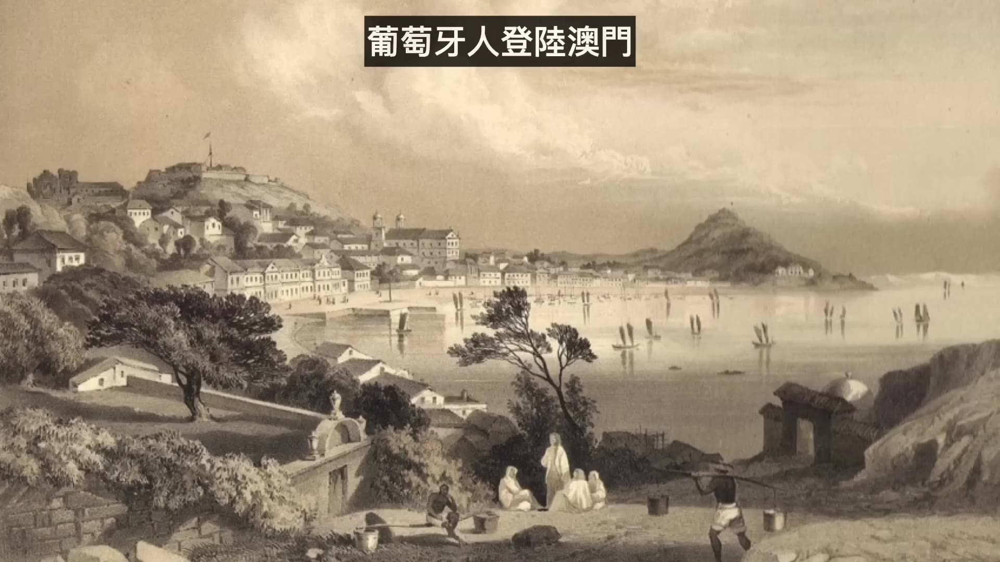
雖然如此，在民間層面與西方商人的貿易仍在進行。1535年，明朝廷終於頒布詔令允許葡萄牙人將船隻停靠在濠鏡（澳門）。選擇讓葡萄牙人在澳門活動的原因是其地理位置獨特——它被一條小水道蓮花涇與內地隔開，若有衝突發生，中國可通過切斷對澳門的補給來掌控局勢。這實際上將西方人置於一個極易受控制的位置。
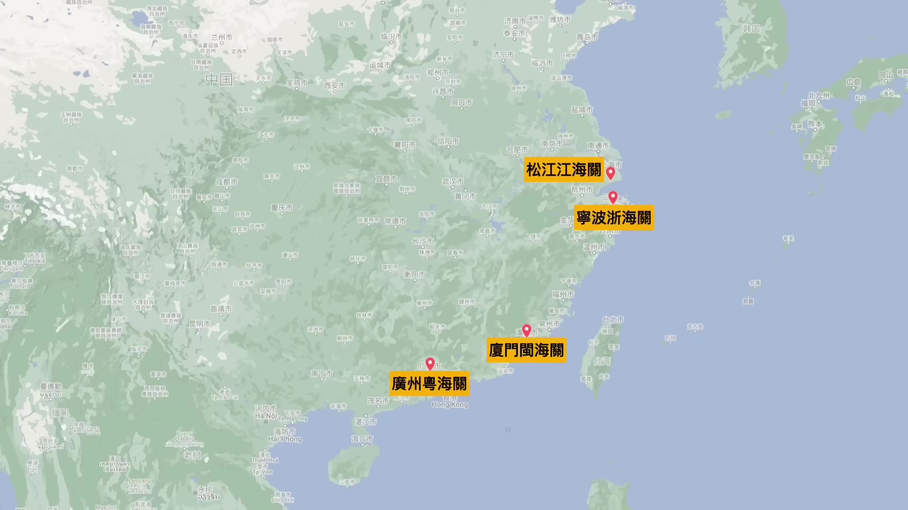
隨著時間推移，英國及荷蘭開始發展海外事業並設立東印度公司，但與中國進行貿易時卻面臨葡萄牙人的阻撓，因為後者希望獨佔對華交易。直至17世紀下半葉，清廷統治穩定後，康熙帝於1684年下詔開海禁，開放了四個口岸：廣州、福建廈門、浙江寧波及江蘇松江。這些海關由不同官員負責監督，並設立正式稅則；然而，實際收取的額外費用遠高於官方稅率，這成為後來中西貿易中的隱藏障礙之一。
00:10:00
中國近代史上的關稅分兩種，一種為「船鈔」，另一種則是「貨稅」。船鈔依照船舶大小來徵收，一開始大船的鈔稅是一千二百兩，中船九百六十兩，小船五百四十兩；而貨稅則是按照貨物價值來決定，康熙末期時實際收取的貨稅已高達貨價的百分之六，這遠超過官方規定的百分之五。當時整個關稅包括正稅和其他陋規加起來約佔百分之二十左右，比官方規定的還要高出許多。
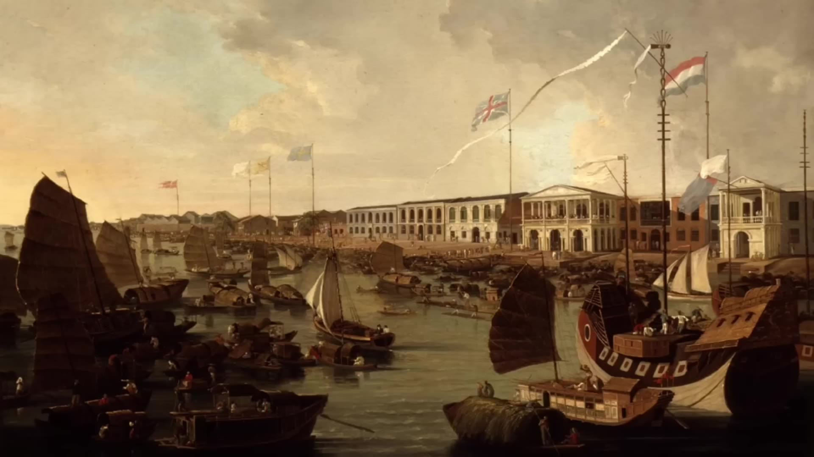
西方國家雖然認為此高額稅率是難以接受的，但由於當時中國出口貨物與外國進口貨物之間的巨大差價，使得西方並未視之為嚴重問題。例如英國東印度公司在廣州購茶需花二十兩銀子，而該茶葉運抵倫敦後能賣到四十兩以上，而且當時英國對茶葉的進口稅也比中國出口稅更重。
從乾隆二十一年開始實行一口通商制度，即僅廣州作為唯一的對外貿易口岸。外國商人只能通過設於廣州的十三行進行交易，這些行商是由官府指定、由私人經營並自負盈虧，類似當時的鹽商模式。
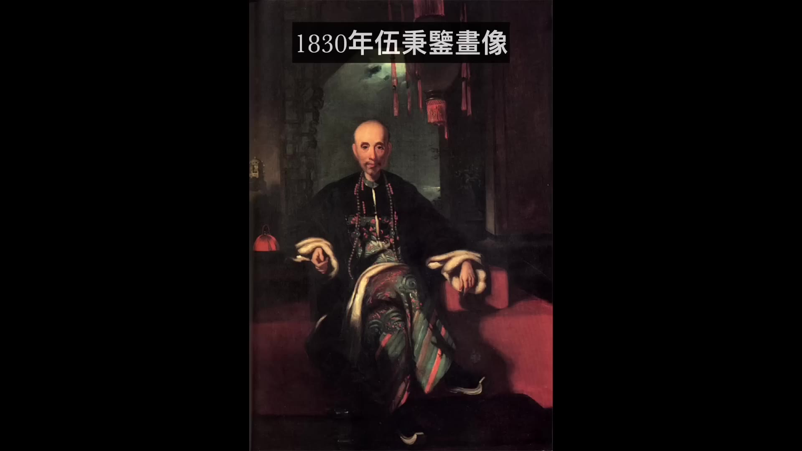
他們必須為外國商人提供「夷館」供其居住，協助通關繳稅及交易等事宜。此外，行商還需約束洋人的行為，如禁止外國人離開住處或帶入外籍女子等。官府通過十三行來實施對外國人的管理與監督。
清代政府其實並不重視這些貿易收入，因為它們並未直接影響國家財政收支；粵海關隸屬於內務府，其稅收也只供於皇帝私人消費。不過西方商人則非常渴望擴大貿易規模。英國東印度公司開始尋求改變中國的通商制度。
當時英方認為地方官吏設下的限制無法通過與他們交涉來解決，因此提出應由國家級別的代表直接與清廷對話。於是，在1793年，英國派遣馬戛爾尼使團來華，希望能夠打破一口通商的局面，並建立中英之間平等外交關係和全面貿易互惠條約。
該使團帶領了龐大的船隊，包括裝備有六十四門大炮的「獅子號」艦艇；馬戛爾尼勳爵本人曾任駐俄公使與英國海外總督等職務，擁有豐富外交經驗。隨行人員中還包括各領域專家及畫家，並攜帶了大量禮品以示誠意，如各式新奇儀器和地球儀、望遠鏡等。
00:15:02
禮品裡面還包括當時最先進的槍和炮，其中銅質速射炮每分鐘可以發射20到30發炮彈。此外，還有地毯、掛毯等多樣化的歐洲工藝品。最為重要的是，英國帶來了巨大戰艦模型，馬戛爾尼使團的誠意可見一斑，其到來讓中國朝野感到歡喜。
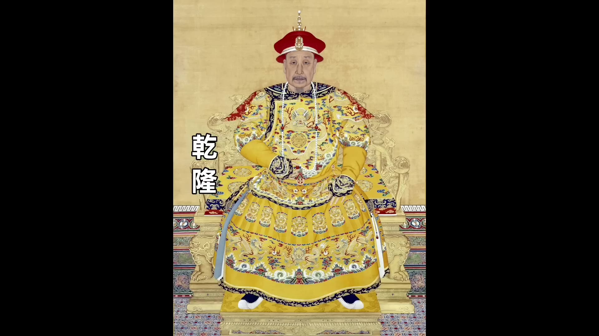
當時乾隆皇帝已經82歲高齡。這次英國使團的到來讓他感覺更加良好，認為一個遙遠且未知的地方居然前來進貢禮物，這表明了他威名遠播。然而，馬戛爾尼使團在北京遇到不少尷尬事。首先，他們被視為來獻禮之人；其次，朝廷中自命不凡的大臣們對這些儀器如何安裝完全茫然不知，卻裝作全然明瞭。即使馬戛爾尼的隨從現場演示速射炮威力，那些大臣亦內心震撼但表面淡定。
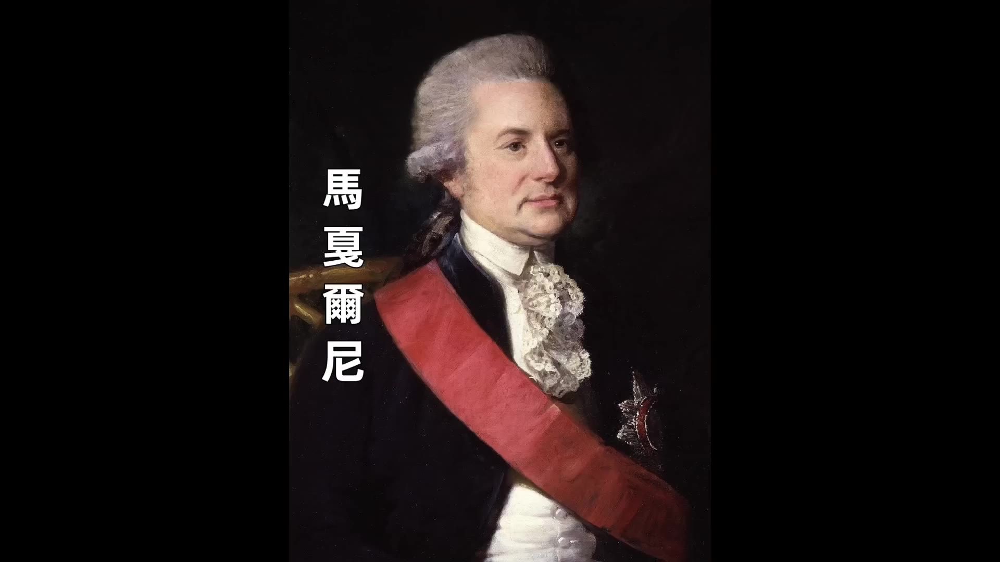
經過一段時間接觸後，清朝官員終於明白馬戛爾尼非來進貢之客。然而他們對馬戛爾尼的使命視若無睹，只在意他見皇帝時是否須行三跪九叩大禮。在馬戛爾尼看來，此等禮節必須按照英國國王接見臣民的單膝跪地、親吻對方手背的儀式進行。為建兩國間平等關係，這是他此行的重要使命之一；然而若不能做到禮儀上的平等，其他問題更無從談起。
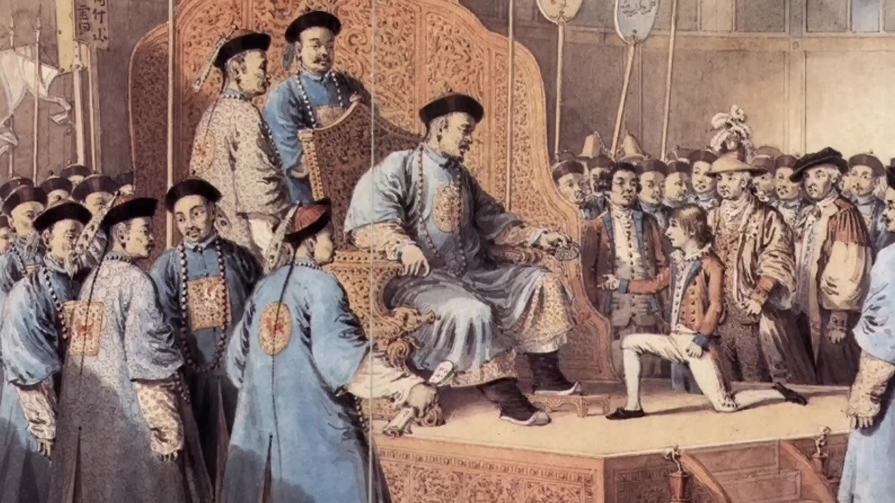
為了能夠見到乾隆皇帝，馬戛爾尼做出妥協。他和同伴們依照中國禮節雙膝跪倒並進行數次單膝下跪的英國儀式，但避免親吻皇帝手背的動作。隨著使命無果而終，馬戛爾尼對此次妥協深感羞愧。乾隆帝對於英國通商要求感到荒唐，認為天朝物產豐富無所不有，根本不需要與外夷進行貿易；開放回子絲綢僅是因為其茶葉為西方所需而加恩體恤，豈料對方竟來討價還價？
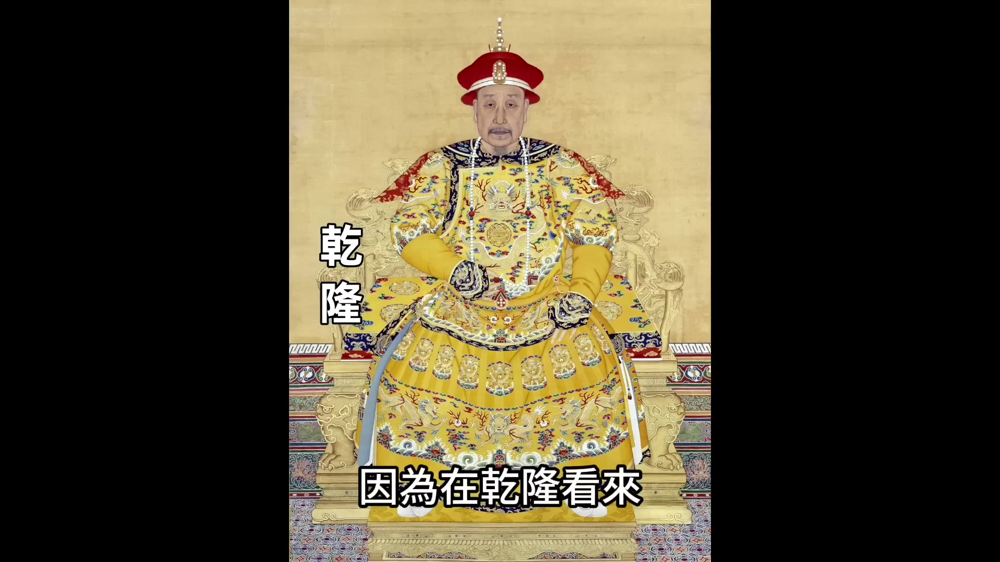
馬戛爾尼的使命徹底失敗，不僅未能達成通商平等條約，連改善英國人在廣州待遇都未能實現。然而使團並非一無所獲，他們看清了大清帝國的真實面貌：社會貧弱、官民關係緊張、官員貪腐、海防薄弱且軍隊不堪一擊。他們沿途考察中國社會及軍事要塞，畫師將一切記錄於畫紙上。馬戛爾尼回國後，英國對中國神話不再盲目信從，為日後戰爭打下基礎。
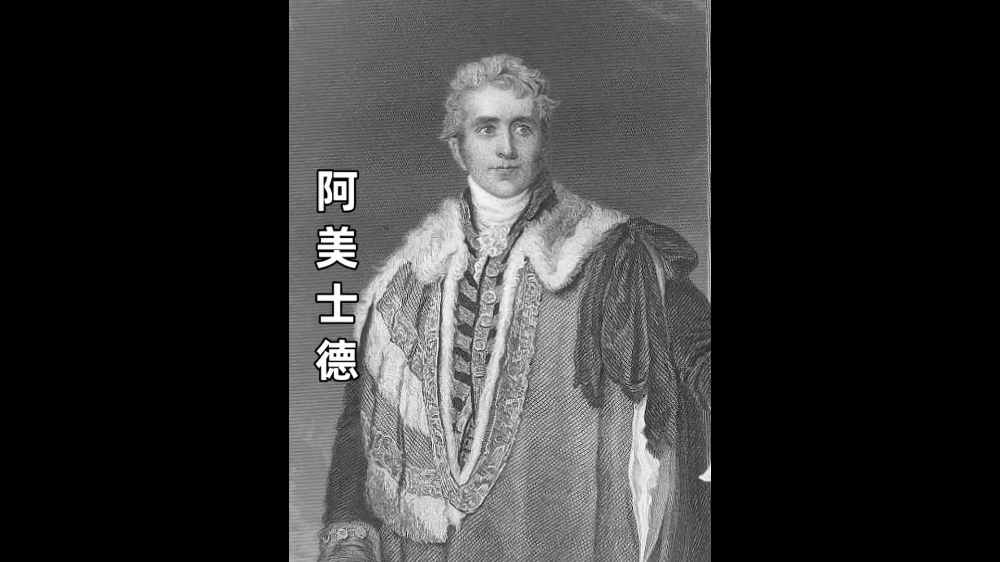
1816年（清朝嘉慶二十一年），英國再派使節阿美士德來華，連乾隆帝的面都未能見到更別說談通商了。隨後美國人也試圖來訪，但同樣卡在雙膝跪地禮儀上。事實上，在天朝體制下這種平等關係根本不可能建立。當時中國對西方事物並非全然無知，只因文化背景差異巨大，英國最先進的事物經過儒家教義折射都變成了荒謬不堪的形象：英國君主立憲被視為「大臣擅權」；其經商貿易在重農主義面前顯得格格不入。
00:20:01
變成了「捨本逐末」，英國在中國追逐利潤被認為是不道德的行為，在中國的性理名教面前則變成了「小人之舉」。英國女王主位更被批評為未開化的異俗，西方先進器物也被批為「奇技淫巧」。
今天我們算是為這個系列開了一個頭，後面幾期節目我們會繼續來分享鴉片戰爭的相關內容。關於這場鴉片戰爭，我們可以概括地說，當西方國家在航海技術成熟之後進行地理大發現，構建了新的世界貿易體系，在18世紀英國成為了新的海洋霸主，西方海上勢力擴張到東方後與清朝展開貿易。當時的清朝只允許廣州一口通商，而英國則想要全面通商，但清朝不願接受這種安排，因為它本身並沒有通商的需求。
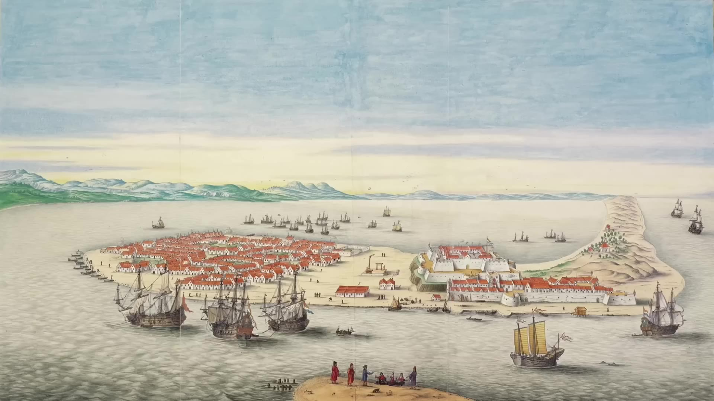
英國為此發動了戰爭，用大炮打開清朝國門。鴉片戰爭是由英國發起的，其理由是清朝禁煙並沒收他們運到中國的鴉片；其實這只是個藉口，英國的真正目的在於要與清朝全面通商，將中國拉入西方的貿易體系中。從當今的視角來看，這是好事，但整個過程中國付出的代價實在太大了。
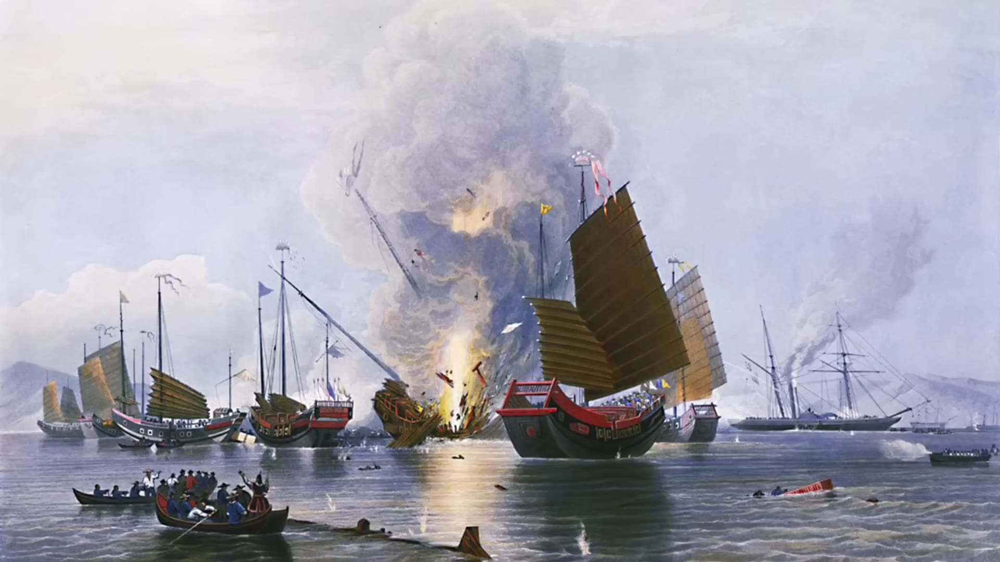
在清朝時期，英國和西方國家從中國進口的主要貨物是絲網、瓷器和茶葉，其中茶葉佔最大宗。茶葉從17世紀就進入英國，當時賣得非常貴，是貴族才能消費的東西；即使在貴族家中，茶葉也是非常珍貴的物品。
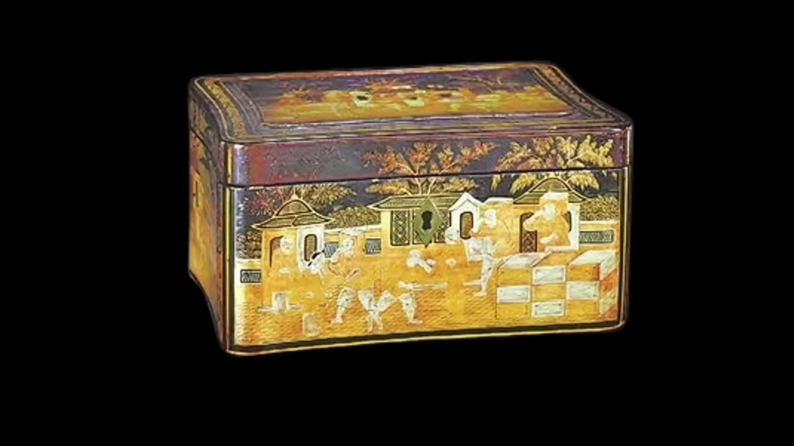
一個小故事可以說明當時茶葉的珍貴程度：英國著名詩人威廉·古柏（William Cowper）曾拜訪赫斯基思小姐家，發現她把茶盒的鑰匙帶走了。這使得他整整一天都沒能喝上一口茶。從這個細節可以看出，在當時的英國社會中，茶葉極其珍貴，甚至需要上鎖保管，避免僕人私自飲用。當貴族社交時拿出鑰匙打開茶盒，則表現了他們對來賓的隆重招待。因此，茶葉被稱為「來自東方的仙草」。
隨著英國財富增加，喝茶這種本屬於上流社會的愛好逐漸擴散到中產階級，甚至連工人階級也開始飲用。當茶成為英國人的生活必需品後，需求量大增，進口量也越來越大，在鴉片戰爭前，英國進口的主要是武夷茶，每磅價格在兩先令六便士到六十先令不等。對於這種生活必需品來說，這樣的價格顯得太高，但是當時茶葉只能從中國購買。
因此，英國對中國的茶葉需求量很大，而自身商品卻沒有什麼是中國需要的。當時中國的普通人幾乎不需要西方製造的商品，僅有自鳴鐘、鼻煙等娛樂用品受到皇族和貴族的少量採購。後來，來自印度的棉花以及南洋的胡椒、白果仁也被引入中國市場，但這些進口產品與出口到英國的茶葉、絲網和瓷器相比完全不成比例。
因此，中西方之間貿易主要表現為西方從拉美秘魯等地區運入大量白銀用作硬通貨，購買中國的茶葉和其他商品。
00:25:02
當時英國來中國做生意的主要是東印度公司。它是一個以盈利為目的的商業機構，在茶葉貿易中賺取大量財富，但同時面對國內對華貿易逆差的壓力，情況十分尷尬。為減少成本，東印度公司嘗試在孟加拉等地種植茶樹，卻未能成功。因而在中國繼續購入茶葉的情況下，他們希望尋找能大量銷售至中國的商品以抵消茶葉進口造成的巨大逆差。因此，英國商人開始將棉紗及紡織品帶到中國，並透過中國通事進行宣傳，結果仍無人問津。當時的中國幾乎不需要西方商品，英國卻認為這是由於廣東一口開放的限制而使工業品銷售受阻。
事實上，鴉片進入中國很早，在宋代文獻中已見有關於鴉片或罌粟的記載。當時用作藥材，孟加拉和緬甸是主要產地，而中國人很少種植鴉片。自宋朝開始有人進口鴉片，多作為醫藥用途；明清兩代雖有海禁政策，但福建與廣東沿海地區始終有人走私鴉片。
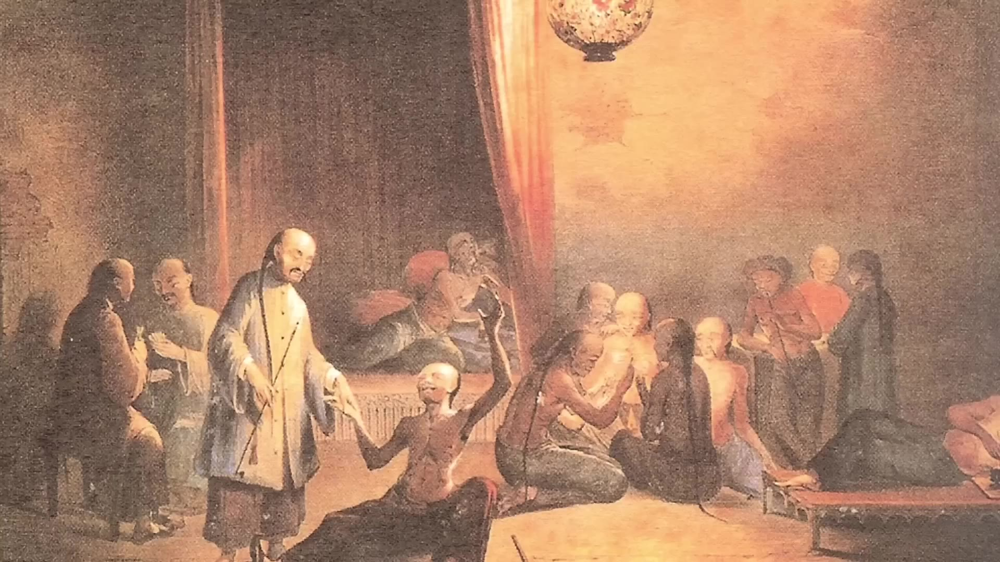
然而，直到乾隆時期才有人開始用鴉片抽煙。中國人抽煙草自明朝時即已普及，起初稱為「洋煙」，至清朝則更為盛行，如紀曉嵐就有「紀大煙袋」的外號。煙草最初由外邦傳入，但隨著中國人大量吸食，開始自己種植，並逐漸替代了部分耕地用途，成為廉價且容易獲取的嗜好品。相較於此，鴉片則價格高昂，且長期使用會嚴重損害健康與經濟。最初僅福建少數地區有人抽煙草時用鴉片取代，而大範圍吸食鴉片則從嘉慶年間開始。
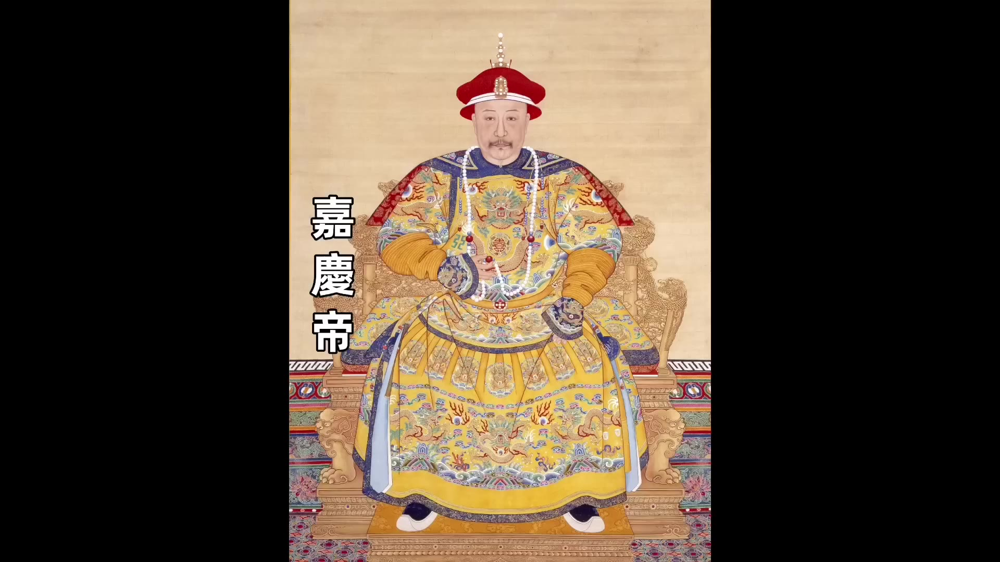
嘉慶皇帝注意到抽煙草不僅在百姓中普遍，連皇親國戚及朝廷大臣亦有此習好，遂於嘉慶時期發佈禁令。當時清朝國庫空虛，因此他也認為禁止吸食煙草可節約開支，並下令將種植煙草的土地徹底鏟除。
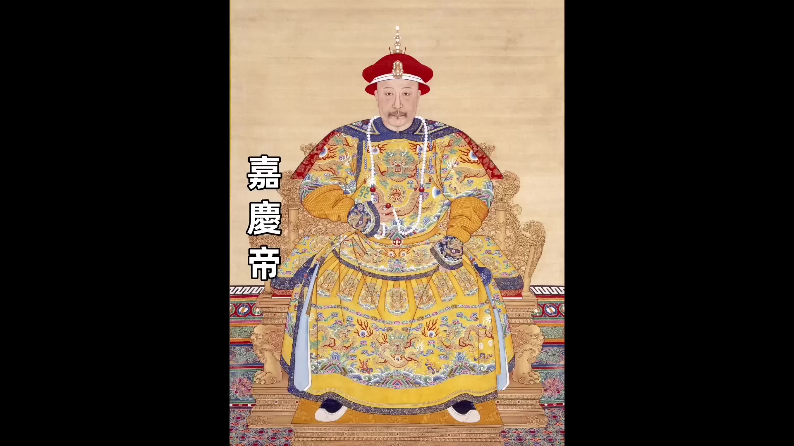
然而，此舉卻促使福建地區的鴉片抽吸風氣蔓延。由於鴉片當時未被禁制且較煙草更具有提神效果，故逐漸成為替代品而受到歡迎。隨著鴉片進口量增加，英國商人也發現了機會。對他們而言，從孟加拉運送鴉片至中國成本遠低於茶葉貿易所需的白銀採購，且終於找到了能大量銷售的商品。
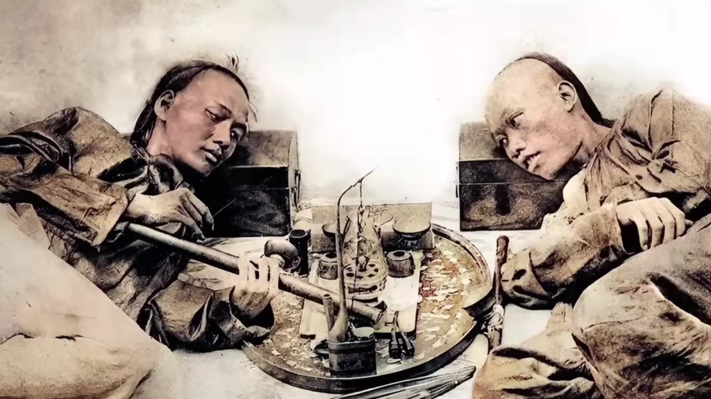
過去英商來華時多攜帶大量白銀交換貨物，而自鴉片興盛後，他們轉向了另一種商業模式。因此，英國開始大幅增加往中國運送的鴉片量。
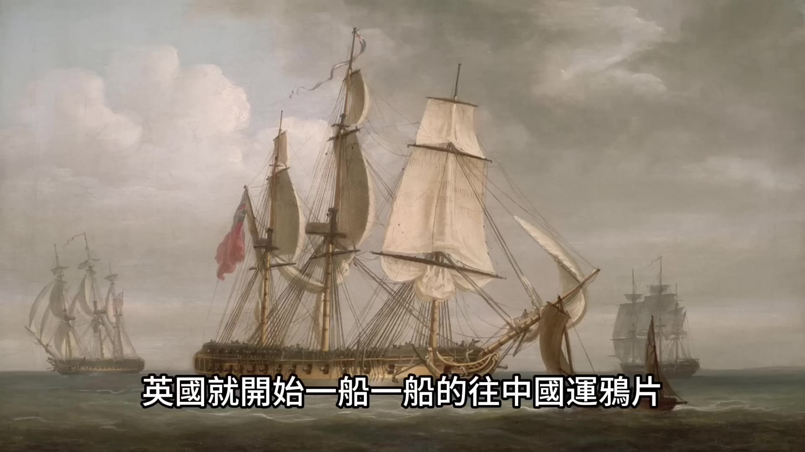
00:30:01
隨著中英貿易形勢的變化，原先中國輸出絲綢、茶葉及瓷器等貨品換取外國白銀的情況開始轉變。自鴉片傳入後，情況急劇逆轉，中國從最初的白銀流入國變成了白銀流出國。起初，朝廷對鴗片的問題尚未有警覺，但隨著鴕片在嘉慶年間迅速氾濫，官府意識到必須要採取行動來禁止這種毒品。
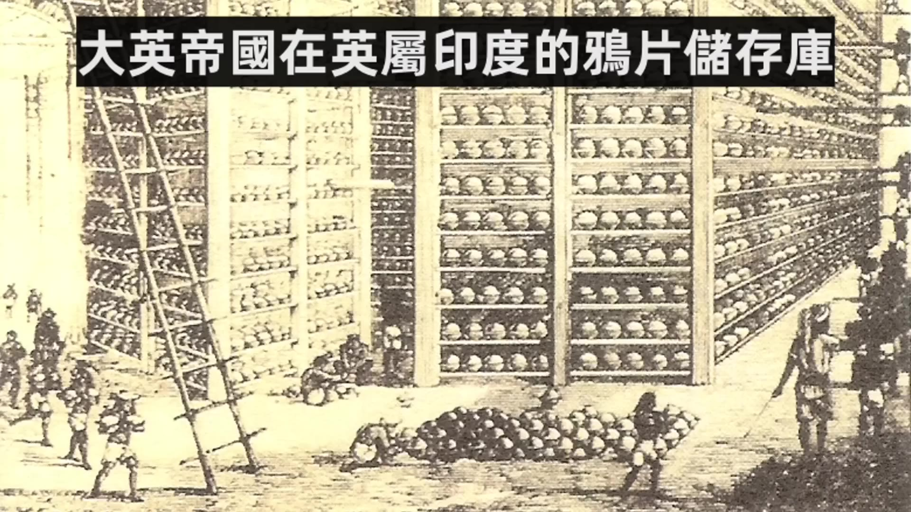
英國商人從孟加拉運輸鴉片至中國獲取高額利潤的同時，也解決了自身的貿易逆差問題。在中國方面，廣東十三行及福建、廣東沿海地區的部分漁民成為主要的走私者和交易人。這些商人通過幫洋人採購商品並助其銷售鴕片而獲得了雙重利益，對於他們來說多賺一倍的錢自然是樂見其成。然而，這也使白銀流出問題愈加嚴峻。
隨著朝廷逐漸意識到禁煙的重要性，但由於市場需求強勁且整個產業鏈獲得巨大利潤，實行禁令變得異常困難。在這一背景下，沿海地區的水師更為欣賞走私活動的增加，因為這意味著他們可以通過接受賄賂獲取更多利益，而這些非法交易往往在官府與犯罪分子之間形成了一種微妙的默契。
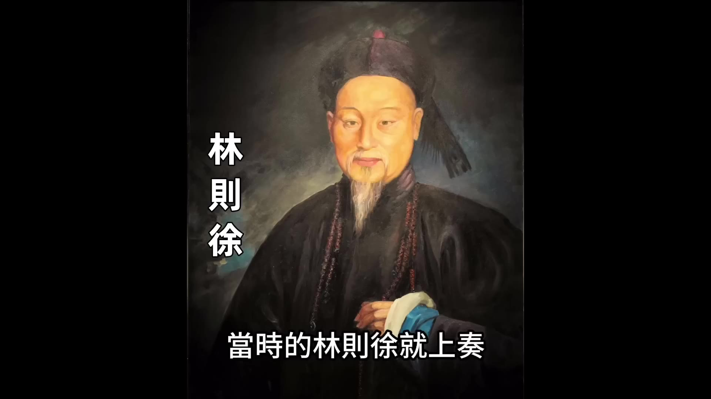
事實上，官方雖然會公開宣佈禁令，但只要賄賂到位，整個鴕片行業仍舊運行順暢。由於中國經濟嚴重依賴白銀作為貨幣體系的基礎，大量外流直接影響了國家財政及社會穩定。此外，軍隊中吸食鴉片的情況也成為了一個令人擔憂的問題，因為這會削弱士兵的戰鬥力和國家防禦能力。
面對這種狀況，林則徐上書朝廷，強調「鴕片流毒於天下，則為害甚巨」，並警告如果不採取嚴厲措施，未來將無法徵集軍餉、維持軍隊，導致國防危機。從統治者的角度看，清朝帝制下的官民分野使得這類社會問題更加棘手，需要高層級的決策來應對這些挑戰。
00:35:01
朝廷考慮的不是老百姓抽鴉片對身體健康的損害，而是鴉片問題會否影響統治。若士兵不能打仗，百姓暴亂時無法鎮壓；若老百姓交不上稅，社會也會出現大問題。當時農民都抽鴉片，勞動力受損，而清朝是農業社會，人就是生產力。如果所有人都抽鴉片，身體不行了，勞動力必然會受到影響，這是一個大問題。所以朝廷從統治的角度出發，覺得這樣下去肯定不行。
事實上，鴉片對底層老百姓的傷害最大，不僅勞動能力損耗很大，家庭消費也很大。雖說統治者基本不是從民生角度考慮問題，但白銀外流確實是個大問題。當時朝廷的大臣們開始討論這個問題，在討論時基本上有兩種意見：嚴禁和弛禁。嚴禁是指堅決禁止鴉片交易；弛禁派則認為更符合中國國情，尤其對官場情況瞭解更深。弛禁派還有一個不能公開說的方法就是允許自己種植鴉片，白銀外流問題就能解決。
不管嚴禁還是弛禁，兩派都主張不要用白銀購買鴉片，以解決白銀外流的問題。
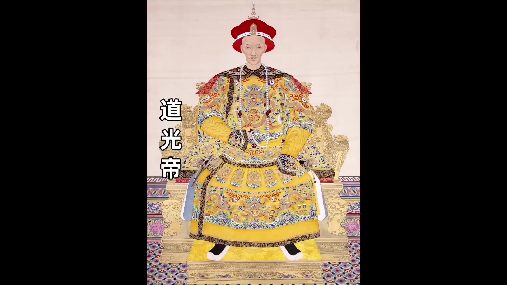
當時道光皇帝更傾向於嚴禁，大臣們會揣摩他的心意，朝廷內禁煙的聲音佔上風。最後定下來派林則徐到廣東禁煙。林則徐是能臣，深得道光皇帝信任，擔任湖廣總督時被任命為欽差大臣前往廣東禁煙。
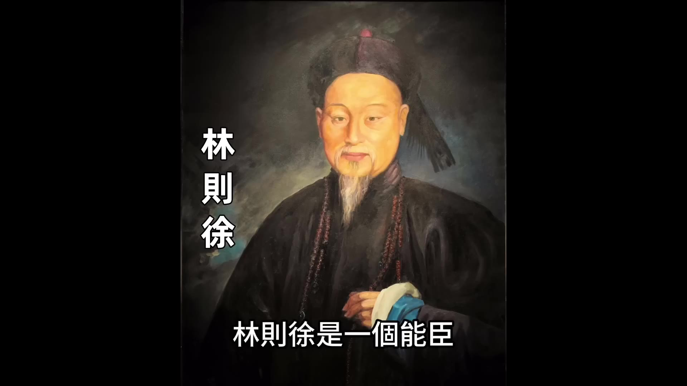
這一安排引起了一些滿人大臣的不滿，因為在嘉慶、道光年間清朝的政治轉折時期，漢人大臣開始抬頭。這也埋下了日後林則徐被撤職查辦的伏筆。
林則徐對禁煙很有信心，他認為地方官吏玩忽職守、士兵貪贓枉法是鴉片泛濫的原因。但到了廣東後，情況讓他感到事情並非如此簡單。他發現外國商船很大，裝有火炮，數量多，若不腐敗的官吏面對這些外商也束手無策，因為廣東水師火力不足。
林則徐為了進一步了解洋人情況，特地去了趟澳門，在那裡收集了西方報紙和資料編寫《四洲志》，並購買了一些西方的大炮和一艘英國商船。但從報紙上得到的情報顯然不足以讓林則徐真正理解西方世界，因為在林則徐來到廣州之前，西方已經發生了很多重大變化：蒸汽機輪船問世，英國艦隊更加靈活穩固；英國政府取消了東印度公司對華貿易壟斷設置了駐華商務總監。
這一政策改變使得中英兩邊的貿易不再是東印度公司和十三行之間的事，而是英國政府與中國官員直接接觸。這些變化對林則徐禁煙任務帶來了新的挑戰。
00:40:00
這個總監便想要跨過十三行，而廣東政府則不予理睬。當時，英國已有多任駐華商務總監多次請求見面與廣東政府官員，均被置之不理。現在，林則徐已經是英國第二任駐華商務總監義律（
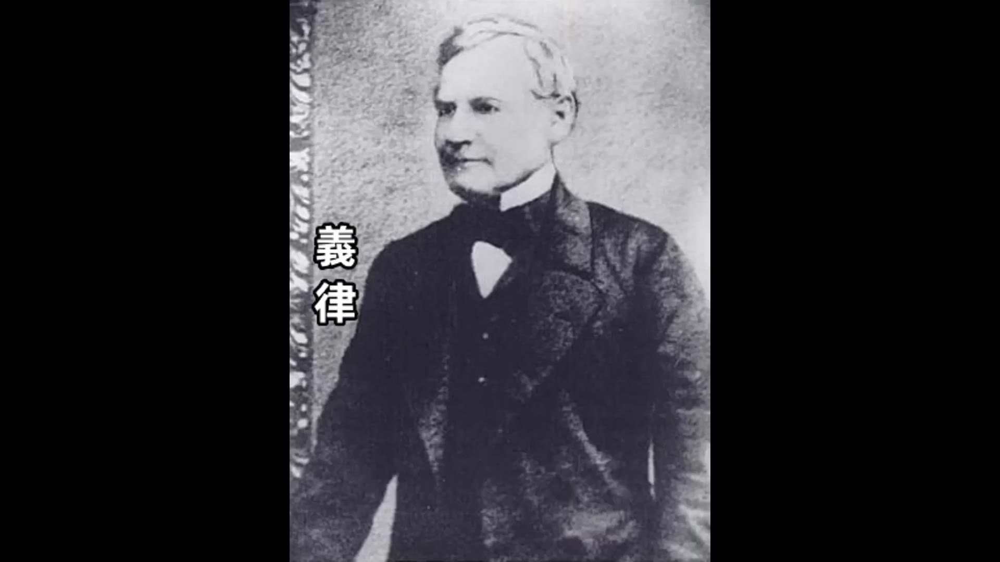
），義律是一個心高氣傲的人，對於中國官員早已憋了一肚子火。
此時的林則徐在禁煙政策上比以往任何時候都來得嚴厲。他掌握了節制兩廣水師的大權，並得到廣東水師提督關天培的全力支持。林則徐召集十三行的行商頒布一道嚴格命令，要求他們責成外國商人呈交鴉片。三天之內，所有船上的鴉片必須上交並簽署合同保證以後不再販賣鴉片。起初，這些外國商人只是將此視為廣東政府的威脅，並不放在心上。然而林則徐這次是玩真的，他立即終止了一切中外交易，並封鎖了夷館，斷絕對夷館的所有供應。
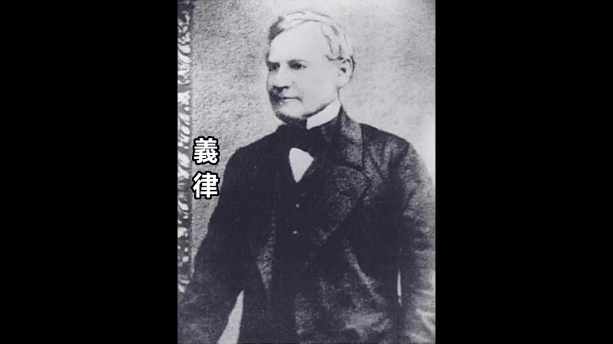
義律勸說英國商人交出鴉片，並承擔他們的損失作為英方政府的擔保。在這種情況下，英國商人樂意將鴉片交給義律，由他上繳給林則徐。義律一共上交了20283箱鴉片。通過這樣做，義律把隱藏在幕後的英國政府推向前台。而他在進行這項決定時並未事先請示英國本土政府，他自以為是地將事件擴大化，希望由此迫使中國與英國政府之間直接交涉。林則徐收繳鴉片之後展開虎門銷煙行動，外國商人見到真的銷毀了鴉片後十分驚訝，原先對林則徐禁煙政策的觀點也因此有所改變。
然而隨後，東印度公司派遣兩艘小戰艦來挑釁廣東水師，雙方發生多次衝突。其中規模最大的一次為「穿鼻海戰」，由水師提督關天培親率艦隊迎擊英國艦只；結果是中方大敗而歸。林則徐未將此失敗如實上報朝廷，而是奏報稱清軍獲勝。然而他本人對於這場失利非常生氣，遂上奏道光皇帝要求斷絕與英國的一切貿易關係並驅逐所有英國艦船。
在這一連串行動下，林則徐的銷煙措施最終引發了英方政府的反擊。1839年8月，中國禁煙及沒收英國商人鴉片的消息傳回英國國內，引起公眾輿論一片嘩然，由此醞釀已久的對華開戰問題被提上日程。當時，英國國會就是否開戰進行了長時間的辯論。支持開戰的一方為工商界人士，他們認為中國政府損害了商業利益；反對方則主要來自教會力量，他們最早意識到鴉片的危害性。
00:45:01
英國傳教士很早便來到中國進行宗教傳播，他們對中國社會有著深刻的了解。當時人們清楚鴉片對中國造成的巨大傷害，而駐華的傳教士對於中國人吸食鴉片十分反感。傳教士認為英國商人販賣鴉片是一種罪惡行徑，而他們呼籲的是道德上的反對。然而最終結果顯示，現實中的工商業利益凌駕於道德之上。經過長時間的辯論後，英國議會以271票贊成、262票反對通過了對中國開戰的決議，兩者的票數僅相差9票，可謂是一場微弱勝利，但最終利益獲勝，道德只好暫時退讓。英國發動戰爭的主要目的並非只是販賣鴉片，而是希望能夠與中國全面通商，開放中國市場，以擴大其工商業品的銷路。
今天我們繼續講述鴉片戰爭。關於這場戰爭，後來有許多不同的定義，但基本來說，軍事力量對抗是戰爭的核心內容。首先來看看雙方的兵力配置：清朝擁有八旗兵約20萬人和綠營兵約60萬人，總兵力達到80萬，這在當時的世界範圍內也算是一支龐大的常備軍隊。英國方面則有正規軍大約14萬人及負責內衛任務的國民軍大約6萬人，總兵力為20萬人。但在鴉片戰爭初期，英國僅派遣了大約7,000名士兵（包括海軍和陸軍）來到中國，在戰爭結束時，這一數字增至2萬人。
若按比例計算，英國遠徵軍的2萬人與清軍的80萬人相比為1:40。這顯然是一場以寡敵眾的局面。而作為本土作戰的一方，清朝軍隊更應該佔據天時地利之優勢。然而事實上，鴉片戰爭卻是以清朝的大敗告終。「船堅炮利」常被視為清軍失敗的主要原因，但僅將其歸結於此顯然不夠全面。
在實際的戰場數據中我們可以看到，清軍的人數優勢並未得到充分發揮。甚至在某些次戰役中，英軍人數反而多過清軍；另外，在本土作戰的清軍也未能做到以逸待勞，往往處於疲於奔命之境地。為何會出現這種情況呢？
清朝軍隊主要分為八旗兵和綠營兵兩個系統。先來看看八旗兵的情況：八旗總數20萬人中，有10萬人駐守京師及其周邊地區，另10萬人在全國各地駐紮，其主要任務包括保衛龍興之地（盛京）、監視北方蒙古、保護京師以及守護西北邊疆。在內地各個行省亦部署了一定數量的八旗兵，以監視當地情況。
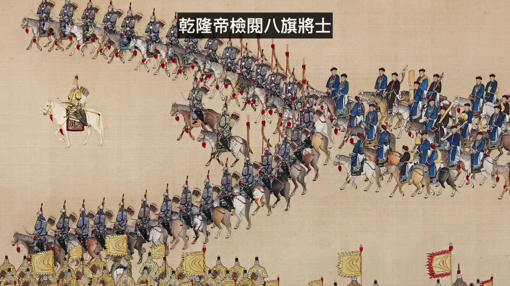
綠營兵則有60萬人之多，是清朝軍隊的主要組成部分。其中1萬人負責京師巡捕工作，剩下59萬人部署於全國各個行省中。綠營的體制由上至下為總督、巡撫、提督、總兵、副將、參將等級別，具體而言：
- 總督統領「督標」一般有2至5個營。
- 巡撫統領「撫標」通常擁有2至3個營。
- 提督統領「提標」一般配置了3至5個營。
- 总兵统领的部队称为“镇”，副将统领的部队为“协”。
- 协下面是营，一个基本作战单位。营的长官包括参将、游击、守备共四级。
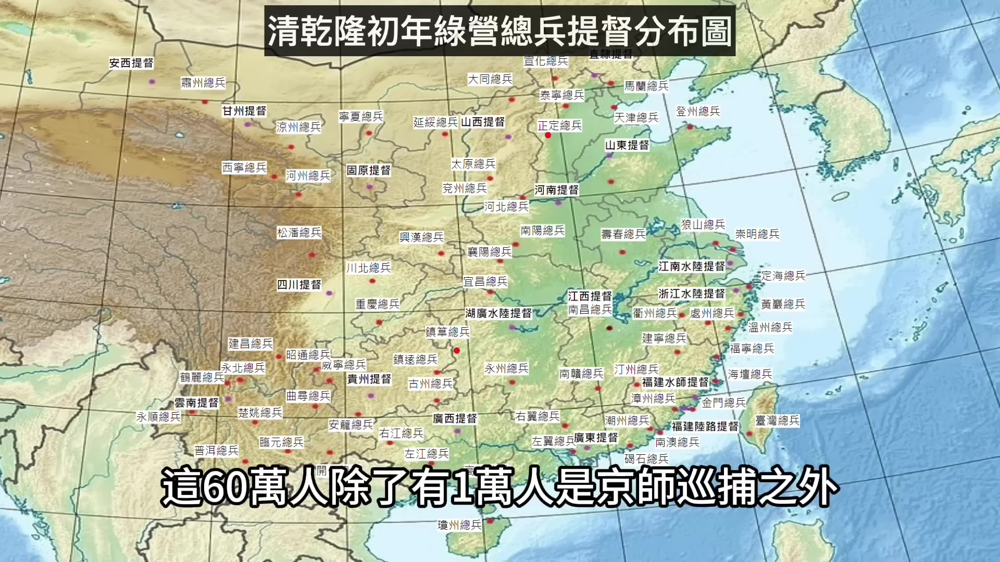
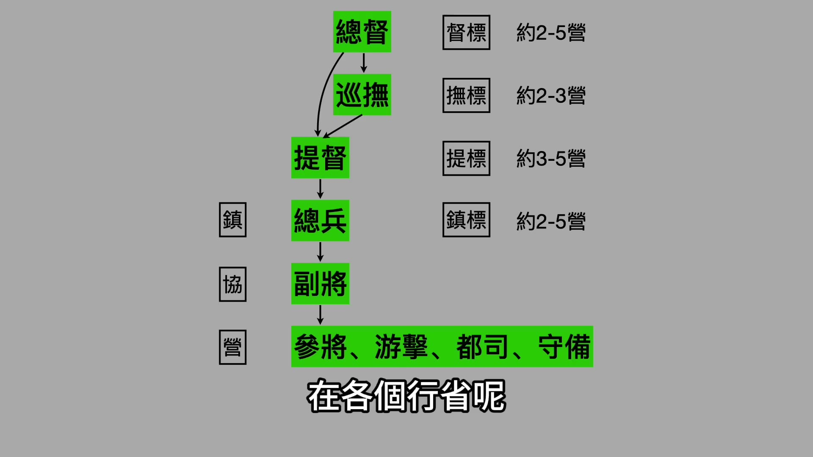
這些詳細的組織結構和部署方式說明了清軍在理論上具備了一定規模的軍隊配置及指揮系統，但實際戰鬥中卻未能有效地運用這一切優勢資源來抵禦英國遠征軍，這背後的原因值得深入探討。
00:50:01
營的人數並沒有固定的編制，一般在二百到一千人之間，具體多少取決於駐守地區的需求。例如，在吳淞口守衛的吳淞營，因為吳淞口對海防的重要性，所以有著一千一百人的規模，這屬於較大規模的營。但是清軍各個營沒有固定的編制，在對外戰爭上是一種不利因素。
每個營的士兵也不是駐紮在一起的，我們知道現代軍隊的建制是師團等整體集結，而清朝時期吳淞營的情況就是一個典型的例子：該營一共有1100名士兵，其中200人駐守在吳淞西炮台，餘下的800多人則分散部署於各地縣城和35處汛地。這些地方每一個都有幾個人到數十人的不等。
這種情況並不是特例，在全國範圍內的綠營兵基本都是如此，每個營的士兵駐防都非常分散。清軍為什麼會這樣做呢？在鴉片戰爭之前，清朝統一已經多年，當時沒有特別強大的外部對手，所以清軍的主要職責是負責國家內部的穩定，任務包括維護城市的治安、看守監獄、彈壓盜匪和稽查販賣鴉片等。這些任務需要多數且分散佈置的士兵。
清軍另一個重要的職責是負責監視民眾以防造反，為了能夠迅速撲滅各類規模的造反事件，他們在市集要隘、道口以及險峻的地方設立了許多哨卡。這種佈置對於防範流竄的盗匪非常有效，但若集中兵力反而無效。
更為重要的是，綠營是漢人的軍隊，清朝則是由滿族人控制的政權，無法讓漢人的綠營集中起來，以免對自己的統治造成威脅。因此，八旗兵相對集中，而綠營盡量分散，以確保集中的八旗可以防備散佈的綠營，從而維護滿清政權的穩定。
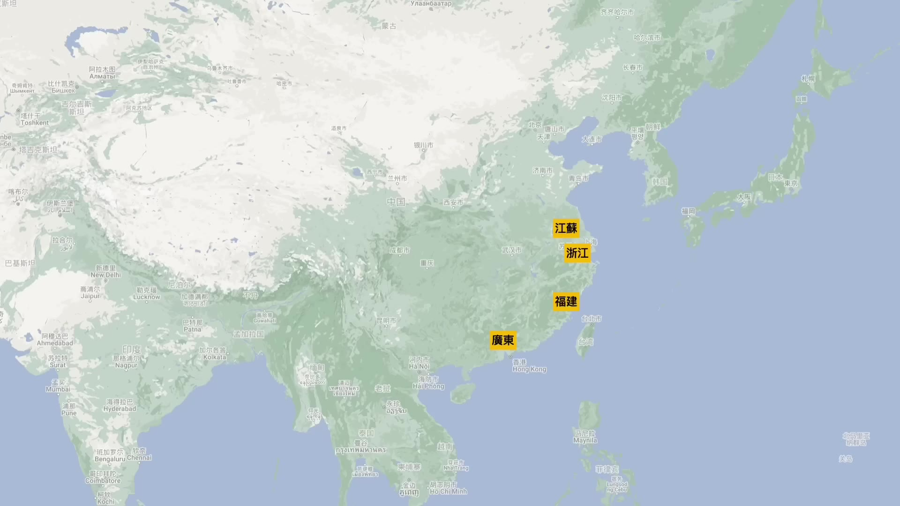
鴉片戰爭時實際交戰的省份包括廣東、福建、江浙這四省，其清軍共有22萬人；而在這些交戰地點駐守的清軍僅有3萬餘人。即便在這些地區，清軍也不能完全投入作戰，因為原屬各處的哨卡仍需保留足夠兵力以防其他非戰區發生問題。隨著局勢緊張，統治者反而覺得有必要增加監視民眾的力量以防止他們趁機生事。
因此，在鴉片戰爭中，清軍只能從各地抽調兵力組成臨時編制應付前線的需要。例如，1841年8月在福建廈門參與作戰的5680名清軍中，只有2000人來自當地的福建水師提標；而實際上，福建水師提標擁有4300人的規模，但卻只能派出少數兵力應對戰爭。
00:55:01
然而，這四千三百人中只能抽調出兩千人參與戰鬥，其他士兵則需執行維穩任務。當時，朝廷從各省抽調兵力的方法是，先從各省的輔標和標營抽調，再由各標營的長官從分散的哨卡來抽調兵力，每個哨卡被臨時抽調的兵力有的幾人、十幾人或數十人不等。這些臨時組成的軍隊由於兵與兵之間缺乏默契、兵與將之間也不熟悉，有些將領甚至無法叫出士兵的名字，使得這支臨時抽調的軍隊整體戰力受到嚴重影響。
各省能抽調出來多少兵力呢？我們可以從當時的奏折中了解一二。例如，1842年1月28日山東巡撫托運布上奏稱：「各口岸調防弁兵三千餘名，沿海尚形單薄，在腹地已涉空虛」。他指出，如果將山東內地的士兵調往沿海地區，僅僅3000人就會使內地顯得空虛不堪。3000人只佔山東當時總兵力額外的六分之一；也就是說，當一個省抽調出其總兵力的六分之一時，統治者便感到難以維持地方秩序了。
每個省份能夠抽調的兵力十分有限，通過這種方式再加上戰區原有的守軍，清軍在這場戰爭中投入的人力大約為十萬人。這樣，占據清軍總兵力八分之一的大約十萬人，被分批抽調到各個戰區；儘管這數量上對抗英軍的兩萬人有著絕對優勢（英軍最高兵力也僅在二萬左右）。
那麼，英國怎樣以兩萬兵士擊敗清軍十萬之眾呢？答案在於其船堅炮利。當時朝廷上下已普遍達成這一共識，因此清軍選擇放棄海上作戰，而這意味着失去了主動權，在陸地上只能被動地等待英軍進攻。由於無法確定英軍的戰略目標，清軍需要全面防守幾千里的海岸線。實際部署中，盛京、直隸江蘇浙江、福建和廣東六個省區的數十個海口都得派兵防禦。虎門、大沽等地方顯得尤為重要；廈門、定海、鎮海、吳淞等地駐軍從四千人到一萬不等。
戰爭發生時，調動兵力的速度至關重要。英軍不僅利用船艦作為進攻手段，
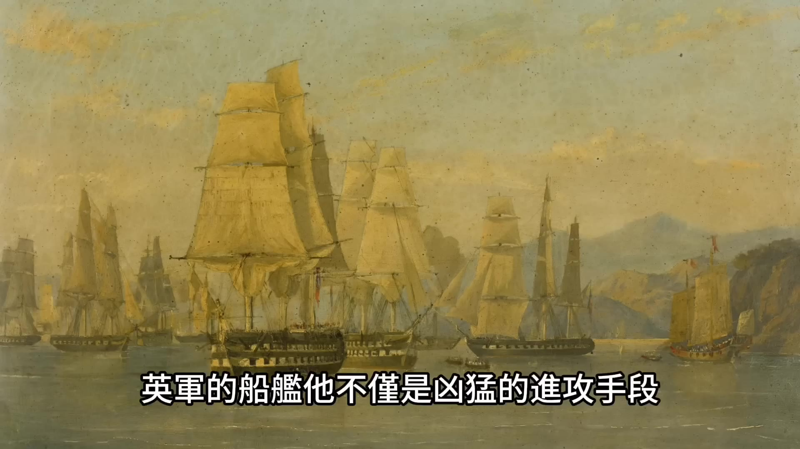
還將其作為高效運輸工具，使得士兵能夠快速轉移。例如，在鴉片戰爭期間的12次較大規模戰役中（除1841年5月廣州之戰和1842年3月浙東之戰外），其他大部分戰役清軍兵力與英軍基本相當，而定海、沙角大角及鎮海三場戰役反倒是英軍兵力佔優。這意味著清軍人數上的優勢未能有效發揮。
此外，在本土作戰的地理優勢也未能得到充分利用，原因在於無法確定戰爭何時何地爆發。因此，在戰爭開打後，臨時調動部隊受到了行軍速度和經費限制。當時運送士兵主要沿著驛道進行，沿途各地方官員需組織車船提供糧草及住宿支援。
由於清軍編制問題，一省一次只能抽調一兩千人（即「起」），而這數量也往往無法一次性行進，需分批次行動。每一批約為200至300人，在有河流通航地區乘船，在無河道處則徒步前往。
據統計，清軍鄰省之間的調兵時間平均需要三十至四十天，隔一兩個省份大約五十分，隔三省需七十天左右。這樣的調動速度極其緩慢，使得清軍完全喪失本土作戰的優勢條件；而英國遠道而來的艦隊則只需三十到四十年級別就能抵達。
01:00:00
在1841年，英國軍隊借助蒸汽機船隻加快了進攻速度。該年的10月26日，清廷從四川建昌調集了兩千名士兵前往浙江支援，在經歷四個月、跋涉四千多里的艱辛路途後，這支部隊直到翌年二月才抵達前線。然而，此時英軍早已在1841年的10月10日佔領寧波並已休整了近半年，完全是以逸待勞的狀態。至1842年4月16日，浙東反攻再度失敗後，道光帝又根據前線主帥奕經的要求從廣西調集一千名士兵增援浙江，兩個月後僅有五百五十人到達，剩餘四百五十人仍在途中。此時英軍已放棄寧波轉而攻打乍浦和吳淞地區；奕經隨即再次派遣這支到來的部隊前往江蘇支援，但直至戰爭結束該部隊始終未能參與實質性的作戰行動。
綜上所述，清軍雖擁有八十万總兵力，但由於清朝統治者需維護社會穩定，實際能抽調參戰的兵力僅約十萬人。英軍船艦的強大火力迫使清軍放棄海上作戰，導致其失去主動權並被迫在幾千里長的海岸線上分散布防。
此外，英軍輪船快速運輸能力顯著優於清軍的陸上調兵速度，使得清軍本土作戰的優勢無法發揮。這些問題的根源在於清軍武器和編制上的缺陷以及其腐敗現象。清朝士兵採用募兵制度，八旗兵由各旗抽選男丁充任，綠營兵則從固定的兵戶中募集，當兵成為一種終身職業。當時士兵每月糧餉僅為一兩半銀子及三斗米，遠不足以養家糊口。
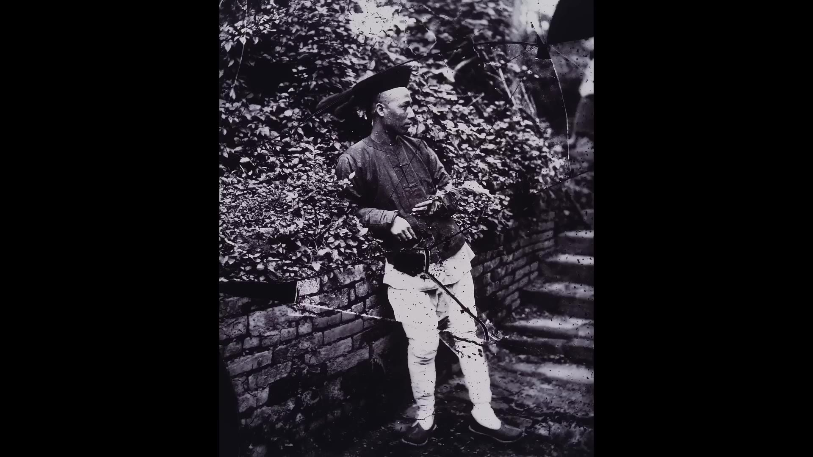
為了補充收入，許多士兵從事副業如幫工、租田種地或小本生意，這些行為在當時十分常見。士兵除操練時間外大多在外工作，甚至有人藉由疏通上級關係來逃避日常訓練，並雇人替班，而這類現象往往得不到嚴厲懲處。
清軍還存在著敲詐勒索、收受賄賂等腐敗行徑。武官多以「吃空額」方式欺騙國家糧餉，即在士兵退役後不補充新人數，以此名義繼續領取糧餉；或者在報告實際兵員數量時故意虛報高於事實，將過剩的糧餉據為己有。這種陋習在軍官間普遍存在且相互包庇。
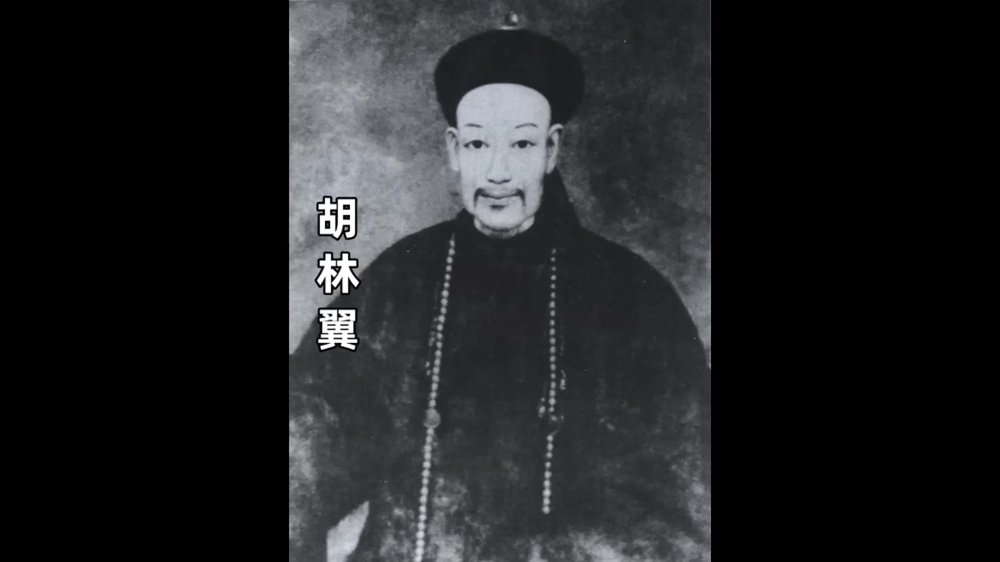
例如，湘軍創始人之一胡林翼曾任職貴州，曾言道光、咸豐年間當地綠營普遍缺額過半，即一半的兵額空置無人。貴州地區因較為偏遠，武官膽子大些，在吃空額上的數量幾乎完全取決於個人貪婪程度。
這些問題深刻反映了晚清軍隊腐敗現象對戰爭結果產生的巨大影響。
01:05:00
清軍總兵力官方額定為80萬，但實際數字誰也說不清楚。鴉片戰爭中各省抽調士兵時，情況與此有關。武官貪污主要有兩種手法：“克扣軍餉”和“吃空額”。前者是傳統手段之一，而後者則直接影響社會秩序，例如收取賄賂，如廣東水師主要靠查走私鴉片來獲取收入，其中僅1%來自軍營糧餉，其餘99%來自禁絕煙土的貪污。當時林則徐到廣州時便有消息傳出，反映這種情況。
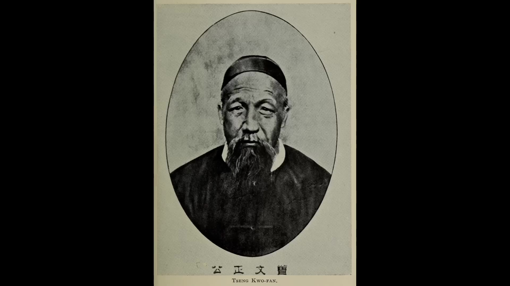
曾國藩訓練湘軍時曾痛斥軍營習氣：“武弁自守備以上無不喪盡天良。”清軍的腐敗嚴重影響了戰鬥力，導致在鴉片戰爭中屢遭敗績。其主要問題包括武器裝備落後（冷兵器與老式洋槍），組織體系陳舊以及士兵的腐敗透頂。
談到鴉片戰爭，清軍在第一線防禦的是林則徐。從1839年6月虎門銷毀鴉片到英國於1840年4月通過開戰決議的這段時間內，林則徐對形勢的分析是：“英夷不會挑起邊釁。”他在奏折中論述了三個觀點：其一認為英軍遠道而來经商，“主客之勢”“眾寡之勢”皆不利於開戰；其二指出英軍雖艦船堅固、炮火猛烈，但僅能於海上作戰，一旦登陸則無力可施；其三指明英國人需要中國的茶葉進行貿易獲利，因而斷絕該利益不符合他們的利益。故此，林則徐推測最有可能發生的是個別損失了販賣鴉片利益的商人來挑釁。
道光皇帝回覆林則徐表示希望能避免邊境衝突。然而從他禁煙開始到開戰前，實際上他在廣州採取了多項措施準備迎擊可能的挑釋。
01:10:00
實際上，在廣東沿海地區發生了七場戰事，其中規模較大的是九龍之戰和穿鼻之戰。這些衝突每次都是清軍水師的敗北。
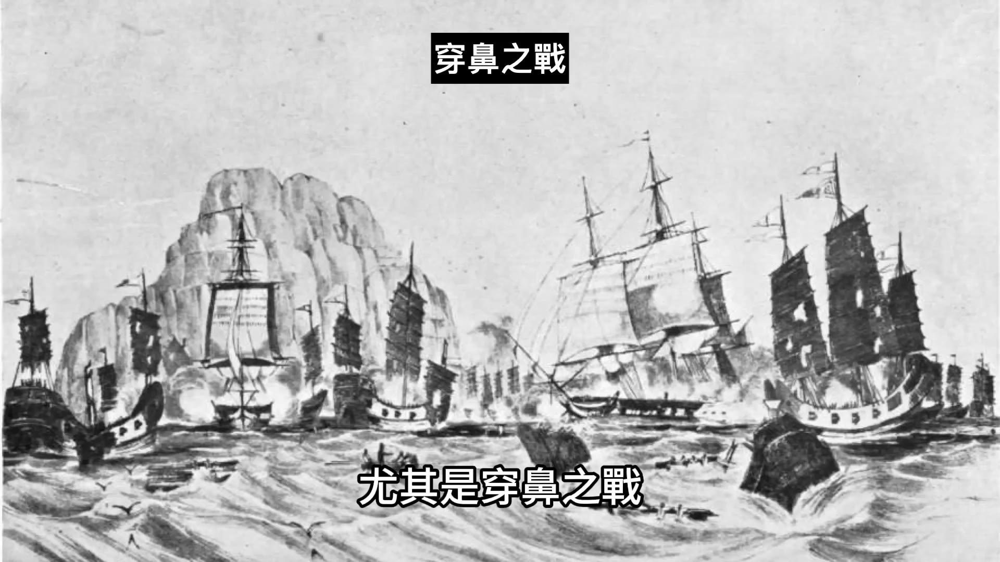
特別是在穿鼻之戰中，清軍水師提督關天培率領著29艘戰艦與英屬印度派來的兩艘小戰艦對抗。然而，結果仍是清軍慘敗。這些衝突讓林則徐產生了幾個看法：第一，挑釁廣東沿海的都是從印度派來的戰艦，因此他推測是因為禁鴉片影響到英國東印度公司的利益，導致商人武裝走私鴉片。
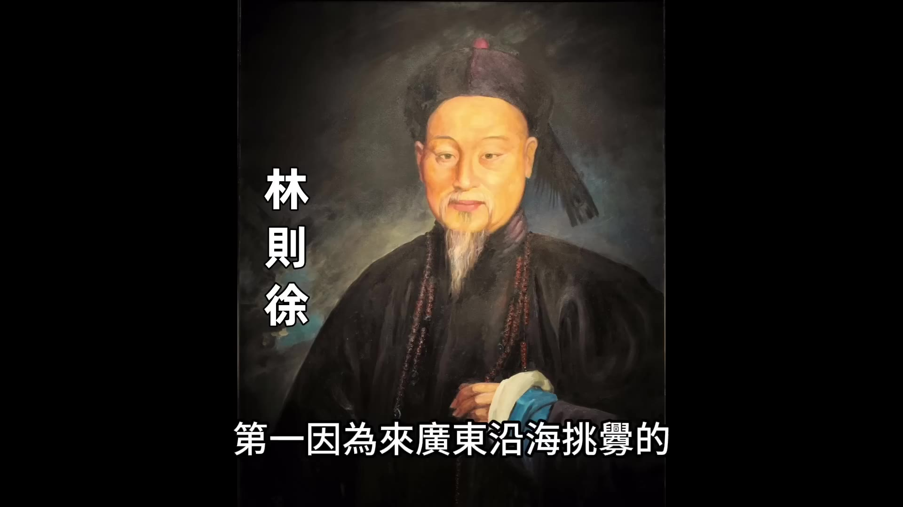
林則徐開始更加關注西方的情況。通過翻譯資料，他知道孟加拉等國政府在鴉片貿易中也有利潤，甚至這些國家的官員薪水都是靠這筆生意來發放。因此，他認為禁煙損害了這些國家的利益，義律和英屬印度官員勾結在一起準備武裝走私，以報復中國的禁煙政策。
林則徐並沒有把這些衝突看成是戰爭前兆，而是視為對方意圖進行武裝走私。他在奏折中報告道光帝這一點，建議採取措施防止英國人武裝走私。道光帝接獲報告後，還特別指示福建和浙江等地加強海防。
林則徐從這些衝突中看到了第二個方面：英軍艦艇非常強大，清軍根本無法匹敵。因此，在防禦上他著重兩點：一是修建炮台，認為在海上戰鬥不了對方，可以依靠海岸據點來打擊對方的船隻。
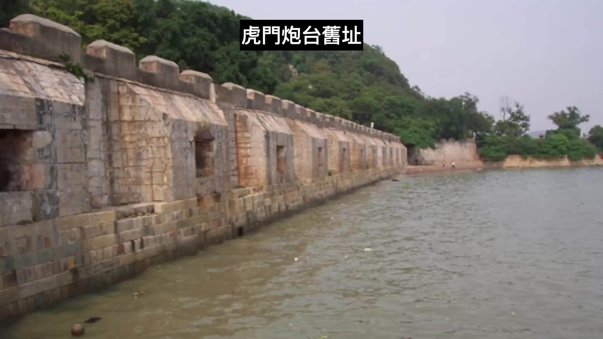
例如，他在虎門炮台安裝了300多門大砲，配備了2000名士兵，在九龍新設兩座炮台，安裝了56門砲，加上800多名守軍；在澳門也部署了1300多名駐軍。
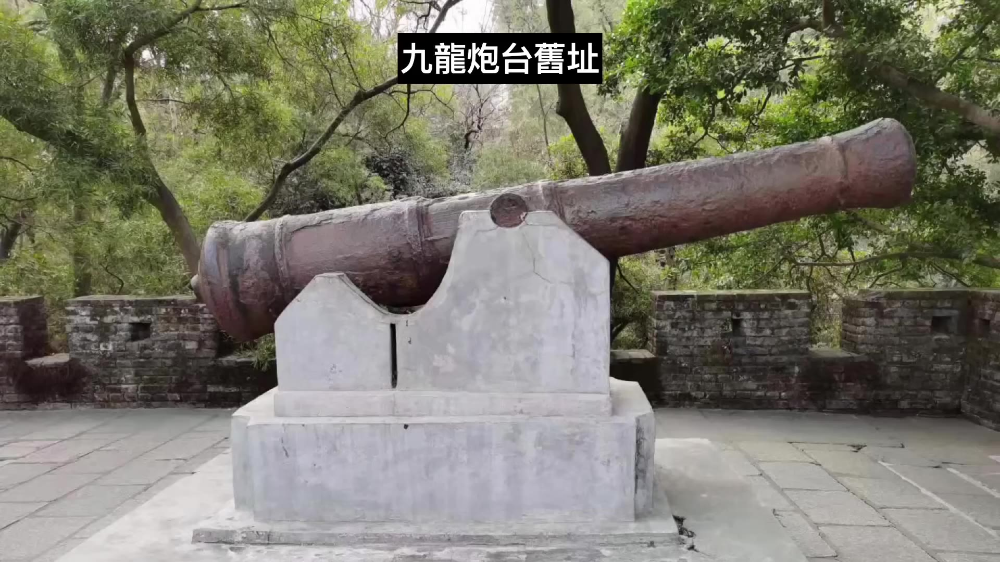
二是集結水師，並設計火攻戰術。他知道直接與英艦對抗是不明智的，因此設計了一種接近敵艦後放火燒船或進行登陸肉搏的方法。林則徐集結了20艘戰艦，還僱傭了46艘民船來訓練這種戰術。
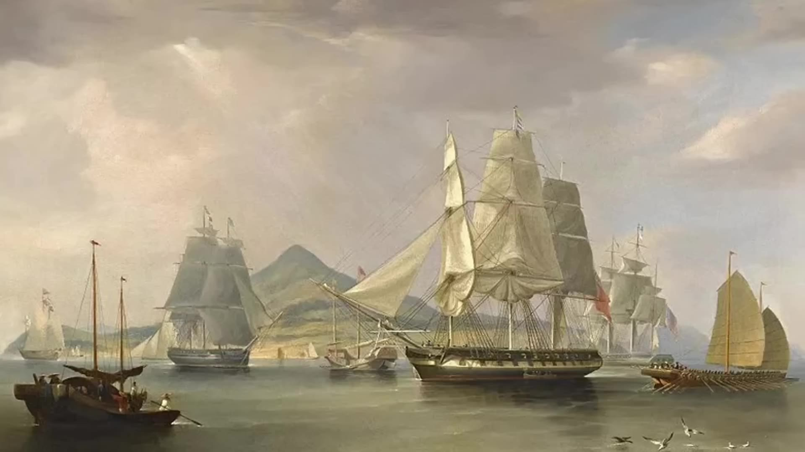
他甚至買了一艘英國商船用於模擬訓練，讓清軍熟悉如何貼近敵方戰艦進行火攻和登陸作戰。然而，林則徐的這些防禦措施並沒有發揮作用，從日後的戰事中可以清楚地看出。他的許多戰術完全是憑空推理而來，缺乏實戰經驗支持。
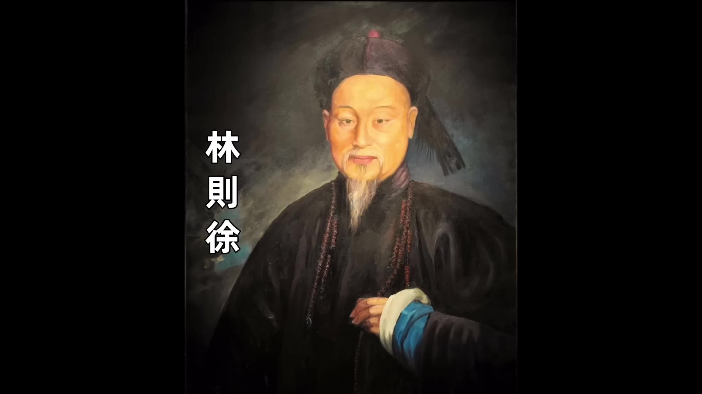
例如，清軍炮台只能向前方開火，無法防禦登陸的敵軍，面對從側面和後方上岸的英軍則無能為力。此外，他認為洋人的腿不會打彎，直到來到澳門才發現這是錯覺。這種認識影響了清軍許多戰術部署。
總結來說，林則徐已經非常努力地準備了防禦措施，遠勝於廣東當地其他官員的作為。然而，這些努力在當時看來並不充分，因為他和其他將領對西方軍事力量的理解還存在很大誤解。
01:15:02
所有與洋人的接觸都由十三行負責處理。
林則徐到廣東後，非常用心地了解西方。他親自前往澳門考察並翻譯了許多英國的資料。通過這些工作，林則徐瞭解到了英國的地理位置、面積及人口和軍隊的情況，甚至還知道英國曾經侵略過很多國家。從他上呈給道光皇帝的一份奏折中可以看出，他曾寫道：“知彼萬不敢以侵凌他國之術窺伺中華”。雖然這句話顯示出林則徐對英國入侵中國的不以為意，但他的這種看法至少表明他知道英國已經侵略過許多其他國家。這比當時朝中的其他大臣對於英國的情況了解得更加深入。
在翻譯了大量西方資料後，林則徐也得出了一些結論。這些結論雖然有問題，但他確實關心國家的安危。他在廣東努力地去瞭解英國及葡萄牙的情況，並對西方世界有了初步認識。後來林則徐被發配到新疆，在那裡他看到了沙俄的野心，進一步了解了沙俄的情況。因此，說他是「睜眼看世界第一人」並不為過。當時中國與西方世界之間的信息差實在太大，無論是思維方式還是價值觀都完全不同，導致即便林則徐獲得了大量信息，仍然難以做出完全正確的判斷。
然而這些錯誤的結論最終讓清朝不得不為此付出巨大代價。在戰爭即將爆發時，前線的主帥卻未能及時發出警報。
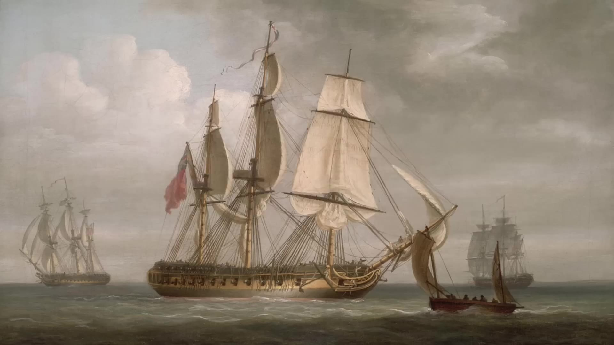
1840年3月24日，英國戰艦「都魯壹號」到達廣東沿海虎門口外。隨後在3月至6月期間，英國的戰艦一艘接一艘地在廣東海域聚集起來，直到六月底英國派出的16艘海軍戰艦和4艘武裝輪船全部到位。
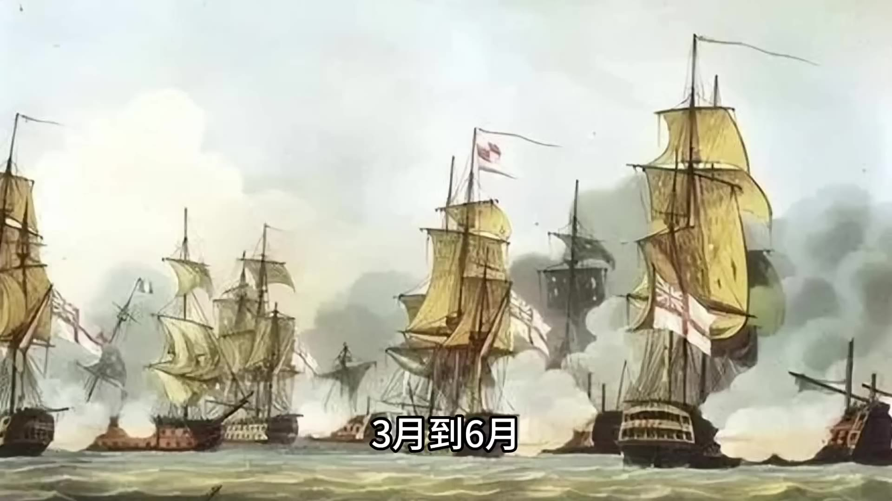
1840年3月至6月期間，英國遠征軍快速集結。遠征軍司令喬治•懿律是查理•義律的堂兄，而查理•義律曾在林則徐禁煙時代表英國政府與其交涉過。此次戰爭很大程度上是由於查理•義律的推波助瀾才得以發生。此次遠征軍中，喬治•懿律是總司令兼全權代表，查理•義律為副代表；海軍司令伯麥則率領艦隊從印度出發，而喬治•懿律則帶領艦隊從南非等地前往廣東沿海。
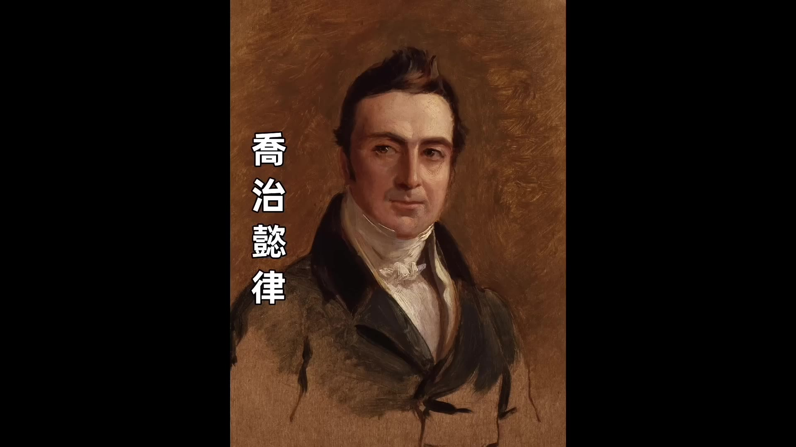
6月底時，英國艦隊在廣東沿海集結完畢。英軍的作戰目標是要讓中國知道英國的厲害並迫使中國全面開放對外貿易市場。為了達到這個目的，他們首先會封鎖中國沿海區域。
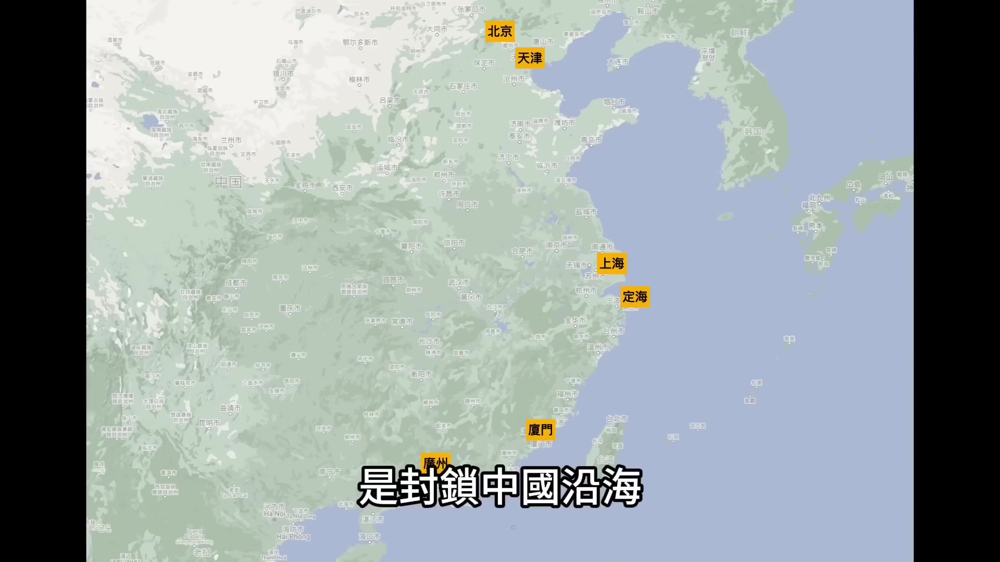
當時定海指的是舟山，英軍不打算攻打廣東地區，他們認為打擊遠處的廣東對於快速有效地影響北京來說太過遙遠。因此，選中靠近北京的舟山作為首個攻擊目標是很合理的。選擇這個地方的原因是因為其地理位置優越，在中國沿海中部，無論向北還是向南進攻都十分便利。此外，英國人對舟山並不陌生，康熙年間寧波對外通商時就有英國商船在該地區進行交易活動直到乾隆時期才停止。因此，對於英國軍隊來說，選擇這裡作為臨時基地來進行補給和休整是合理的。
根據計劃，英軍的第一戰將針對舟山發起，同時還有一個重要任務就是把一份照會文件呈交中國朝廷。這份文件名為《巴麥尊外相致中國宰相書》，他們的目標是通過廣州、甬江口或長江口（黃河口）以及天津三個地點將這封信件轉呈給清朝政府，以期能夠促使問題解決並實現對外開放市場的目的。
01:20:01
林則徐對於英國的情況有多處誤判，同樣地，英國也存在著对中国情况的重大误解。例如，英国认为封锁中国沿海能对其经济造成严重影响，但实际上中国的农业基础使得这一策略无法奏效。
当英国考虑对中国进行海上封锁时，他们认为切断中国的海外贸易将对其国内市场产生巨大影响。然而实际情况是，以农业为基础的中国经济对此几乎没有反应。与此同时，道光皇帝及其大臣们在得知英军即将到来的消息后仍讨论是否应该封锁海岸线来切断对敌方军队的供给。尽管部分官员支持这一策略，但最终并未实施。
英国政府向中国呈交了一份照会文件《巴麥尊外相致中國宰相書》，但他们误以为中国的权力结构与中国相似，认为该文件应直接递交至中国宰相手中。实际上，清朝时期决策权在皇帝手里，而非宰相。因此这种信息的不对称给双方都造成了诸多误解。
林則徐一开始甚至错误地将英军船舰误认为武装走私鸦片的商船。而事实的确如此，英国战舰不仅装载了士兵，还携带了一万箱鸦片进入中国沿海水域。
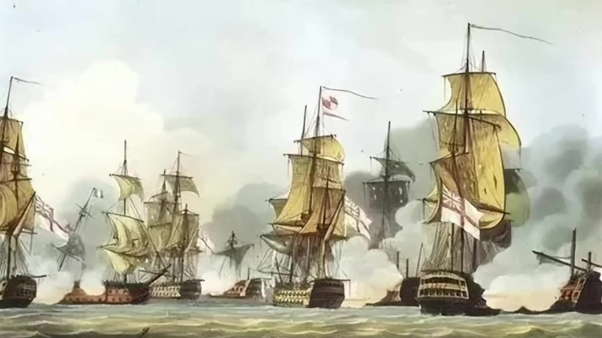
英軍集结在广东海域后，留下四艘军舰和一艘武装轮船执行珠江口封锁任务，并且其他舰队北上准备进攻舟山。廣東水師曾与英軍发生小规模冲突，尽管战败，但清军仍认为英軍畏惧炮台防御而撤退。
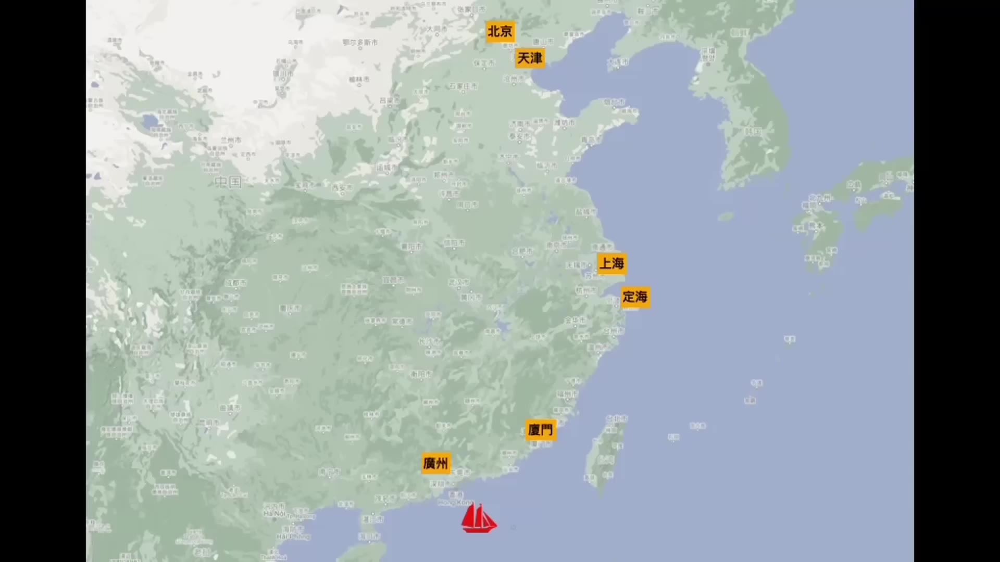
林則徐在给道光皇帝的报告中并未如实汇报水师战败情况，反而强调由于广东防备严密，英军不敢骚扰，并误导朝廷认为英国军队并无战斗力。这种信息偏差导致后来广东战争失利时，清廷将原因归咎于林則徐被免职，而未正视英軍实际实力。
进入实战阶段后，1840年7月2日，英军战舰驶入舟山定海港，并在两天后的7月4日向当地知县姚怀祥发出最后通牒。姚知县对这场突如其来的战争毫无准备。
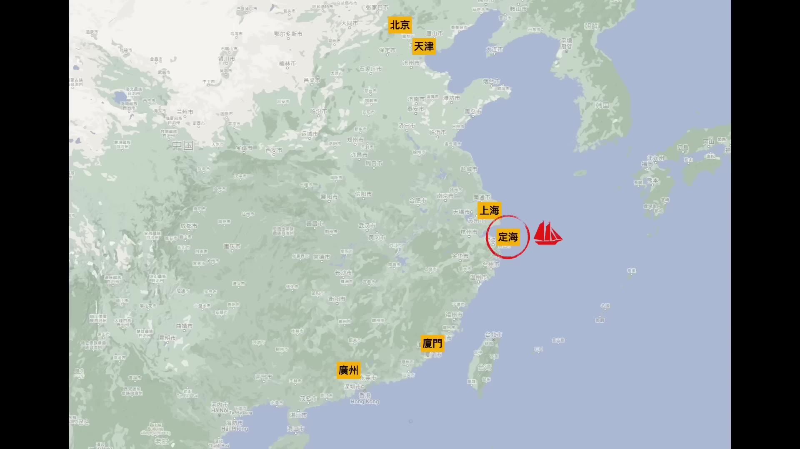
7月4日傍晚时分，英军司令伯麦派兵登岛并展开谈判；然而在次日即7月5日下午两点半，双方爆发了冲突，据英国记录显示仅用九分钟就摧毁了清军战舰与岸炮，并迅速登陆县城展开攻击。面对突如其来的攻击，定海守卫撤退逃跑，知县姚怀祥投水自尽；总兵张朝发中弹身亡。
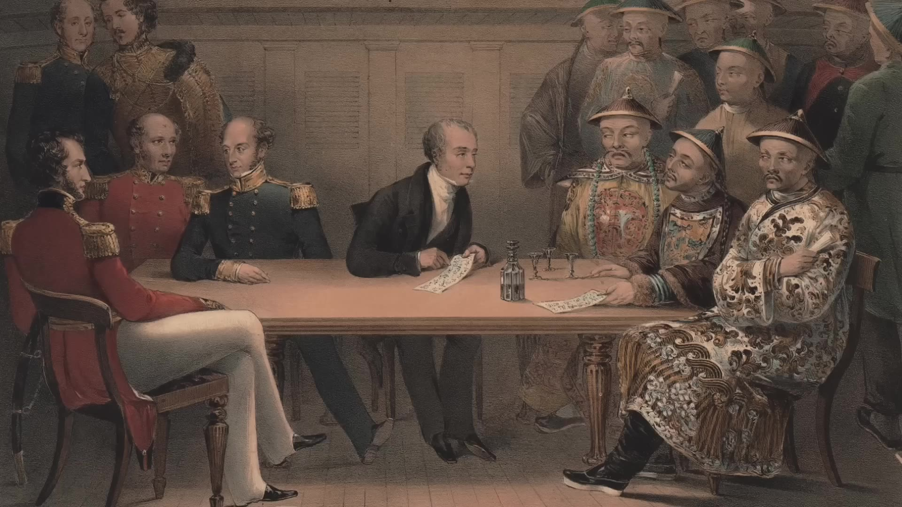
占领舟山后，英軍按照计划对中国其他重要出海口进行封锁，进一步限制了清军的行动空间。
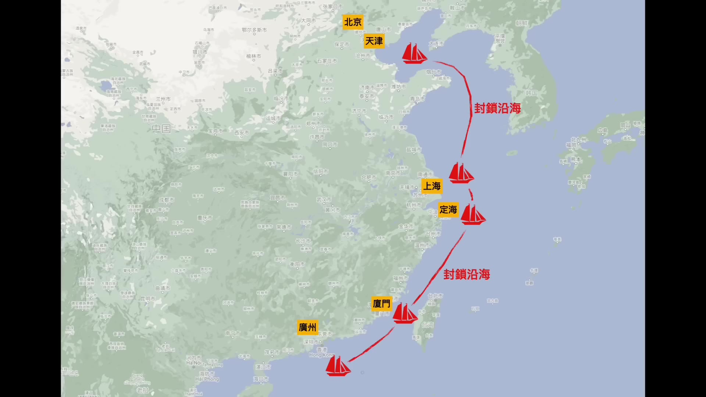
01:25:01
英軍在廈門和鎮海嘗試投遞文件時，當地清朝官員皆將之退還。這些被退回的文件引致英軍不滿，在廈門甚至與當地水師發生衝突，但即使擊敗了清軍，當地方的官員仍然拒絕接收英國的文件。這種情況出現的原因是根據清朝規定，僅有廣東政府可以接受外國文書，其他地區均無此權限。道光帝後來頒佈旨意，允許天津接收英國的照會，但即便如此，收到這些文件後仍需將其轉交至廣州進行進一步談判。
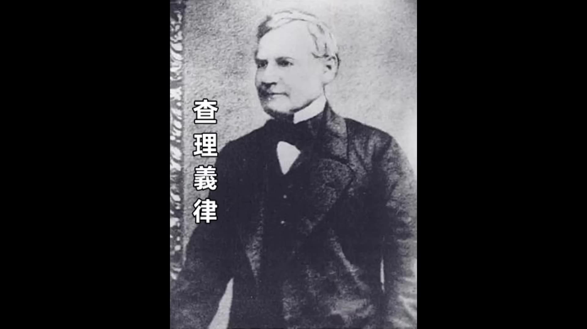
這種規定背後反映的是清朝獨特的世界觀：視所有外邦為藩屬，僅與朝廷之下的省份平級。因此，英國要求派遣公使駐守北京的請求被斷然拒絕，因這將直接挑戰天朝的地位，是不可接受的舉動。
問題根源在於英軍指揮官查理·義律，他不願依照規定將文件交予廣東政府，轉而選擇廈門作為投遞地點。然而這一改變導致文件在廈門和鎮海兩度被退回，最終引發了英軍北上天津的行動。隨著英軍佔領定海並封鎖重要港口後，地方官員如何向道光帝匯報成為焦點。
欽差大臣林則徐負責向道光帝報告廣東的情況，閩浙總督鄧廷楨和浙江巡撫烏爾恭額分別對福建與浙江口岸的狀況進行匯報。值得注意的是，除了烏爾恭額如實報告了定海失陷的消息外，其他官員在上呈道光帝的奏折中都避重就輕，僅報導了「衝突」而未詳述戰敗細節。
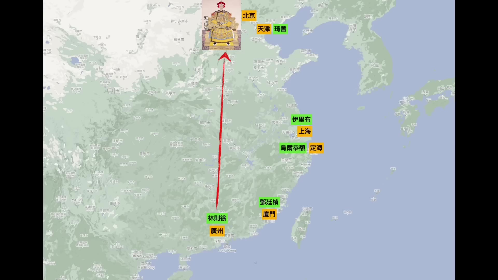
在鴉片戰爭初期，信息傳遞依賴於驿站系統，從廣州到北京的路程可能需要30至50天，即使使用加急方式亦需16-20天，這使得道光帝難以迅速掌握戰況。直至定海失陷十二日後，即7月17日，道光才收到林則徐於廣州發出的奏折，報告了清軍燒燬英夷一艘鴉片船的消息；而三天之後，他才接獲浙江巡撫烏爾恭額關於定海失陷的正式報告。
01:30:03
烏爾恭額向道光皇帝報告，英國軍隊已有四千人在定海登陸。道光聽後震怒，此前他接收到的奏報均來自廣東和福建，內容多數為如何與英國鴉片船交戰並取得勝利。由於林則徐的錯誤判斷，道光一直以為來犯的英夷只是走私鴉片的販子，這些販子在廣東和福建遭到挫折後逃竄至浙江。對此，道光表現得極為不滿，他將福建提督余步雲調往浙江協助剿匪，但他的認知仍然停留在來犯的是走私毒品的犯罪分子。
7月24日，道光收到烏爾恭額於7月11日發出的奏報，報告稱定海失陷，英軍已逼近鎮海，此時他才意識到這些英國人並非僅來販賣鴉片的商船。隨後，道光命令閩浙總督鄧廷楨和兩江總督伊里布分別派遣數千名水師支援浙江戰場，動員三個省份的軍力應對敵情。
8月1日，道光收到林則徐6月24日發出的奏報，報告稱英國已持續來了九艘軍艦和三艘輪船。此時，道光開始感受到局勢的嚴峻性，他回復林則徐『嚴格防守不可鬆懈』。8月3日，他又收到林則徐7月3日發出的奏報，告知英國又有十艘軍艦和兩艘輪船抵達，並聞知英軍可能北上舟山及上海、天津。道光再次回復林則徐『嚴格防守』，同時命令直隸總督琦善準備應對可能來到天津的英軍：如果對方態度恭順便告知其清朝制度並要求他們去廣東貿易，若態度強硬立即出兵剿辦。
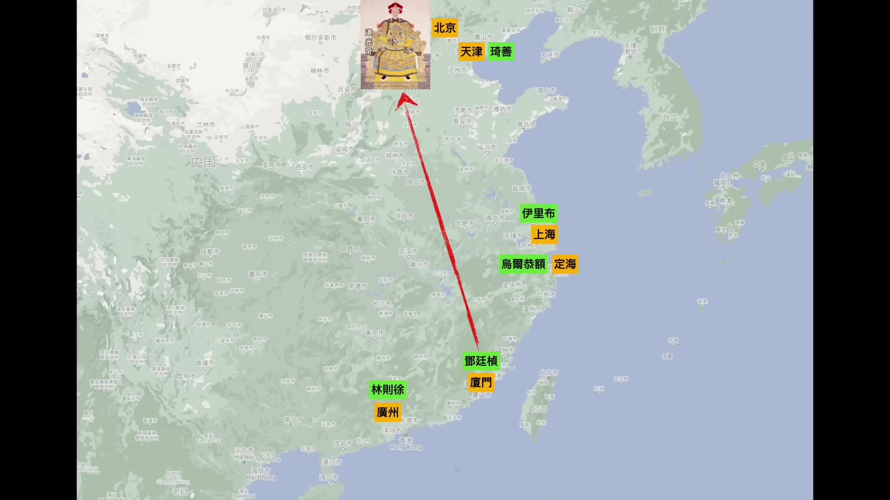
同一天，道光收到閩浙總督鄧廷楨於7月16日發出的奏報，報告稱廈門戰勝英軍並驅散敵人，道光非常興奮，回復『辦得好』；然而事實上，這場廈門之戰其實是敗陣，英軍也未被真正擊退。
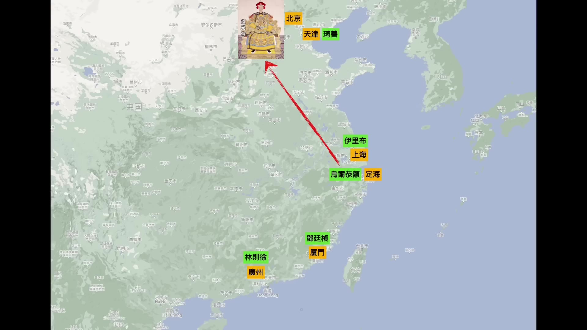
8月4日，道光收到烏爾恭額於7月24日發出的奏報，報告稱英國軍艦數量增加並投遞了一封對方丞相的文書，他未予接收。前一天剛得到廈門獲勝消息的道光認為是烏爾恭額辦事不利才致敗，因此下令革去其浙江巡撫職務，命鄧廷楨前往主持軍務，兼任浙江巡撫；但不久後，鄧廷楨表示自己若到達浙江恐難以同時顧及福建的安全，道光遂改派兩江總督伊里布為欽差大臣前去主持浙江軍事。8月9日，道光收到直隸總督琦善關於天津防務的奏報，在得知對方部署防守方案時他才意識到自己對敵情一無所知。道光突然想起前幾天烏爾恭額提到過英夷有一份文書要上呈卻被拒絕了，隨即下達諭令稱如果英夷有投遞文書，可以轉呈，這是一個破例的決定；天津接受外國人的投書不符合清朝體制，但道光此時想瞭解究竟發生了什麼故而顧不上這些規矩。從時間表來看，英軍於7月5日對定海發動攻擊至8月9日已過一個月。
道光終於明白英國確實發動了戰爭，但對於其發動戰爭的原因卻仍一知半解。
8月11日，英國艦隊抵達天津遞交照會文書，負責與英國交涉的是直隸總督琦善。
在鴉片戰爭中，琦善成為除道光和林則徐之外的另一個重要人物；雙方的軍事衝突也將進入下一階段。後續內容下期繼續分享。
「1921-1945年的專題歷史課程」我開通了，歡迎有興趣的朋友。
01:35:00
大家好，今天我們繼續講鴉片戰爭。在上一期節目中，我們談到了英軍攻佔定海的情況。
英軍在封鎖杭州灣後北上抵達天津，與其交涉的是直隸總督琦善，他在鴉片戰爭期間扮演著重要角色。我們先來簡單介紹一下琦善。
琦善是滿人正黃旗出身，他敢於做事且富有魄力，在當時的滿人官員中頗為突出。鴉片戰爭前，他的職位已達直隸總督之高位，這是各個總督中最重要的一個職位。在禁煙運動中，琦善屬於激進派，與林則徐持相同態度，主張嚴禁鴉片；他在天津查獲了十三萬兩鴉片。道光帝指派林則徐主持廣州禁煙工作時，琦善心中有些不滿，認為自己更有資格處理此事。當英國軍隊從廣州北上到達天津，他心裡可能多少感到一點幸災樂禍；他打算利用這個機會表現一番。
8月11日英軍艦隊抵達天津，琦善感到了震驚。實際見到對方的船隻後，他原先主「剿」的立場有所動搖。
就在英軍來到天津前一天，道光帝發出諭旨，表示若英國人態度桀
01:40:00
從這句話的譯文表達的意思可以看出，英國人確實是來伸冤的。然而，實際上這句話的翻譯存在很多問題，例如「求討皇帝昭雪伸兔」中的「求討」被誤譯成了「要求」，而「賠償」也被翻譯得不夠準確。整篇譯文都充斥著這種不正確的翻譯，導致原文的意思被曲解。根據歷史學家茅海建先生的推測，這些問題可能是查理•義律在翻譯過程中故意造成的。
查理•義律在中國多年，他十分清楚清朝的體制規定：任何含有違悖字樣的文書都會被拒絕接收。因此，他特意讓翻譯的人盡可能使用符合清廷官方用語來進行翻譯，這樣才能使這份照會能夠送達朝廷。如果按照原文的意思來翻譯，很可能會直接遭到拒絕，無法送到皇帝手上。另外，這封照會的書寫方式也與中國文書的不同，其內容主要由五分之三篇幅對林則徐在廣東禁煙活動的指控構成，到後面才提出英國的五項要求：第一賠償被沒收的鴉片貨款；第二中國和英國進行平等外交；第三割讓島嶼；第四賠償廣州商行欠英國人的欠款；第五賠償英國此次出兵的軍費。根據常識，讀者應該將重點放在文書後半部分的要求上，因為這些才是英方的目的。
然而由於琦善和道光先入為主的想法及翻譯問題，再加上他們自視天朝的觀念，把這封照會看成是英國人來「伸冤」和向大清國皇帝「乞恩」。對於英方來伸冤一事，道光認為比較重要；對其「乞恩」內容，他則認為既然是乞恩，自然可以施恩或不予施恩。8月20日，道光給琦善發了兩道諭旨：第一道諭旨是關於如何駕馭外夷的指示，主要說的是查明英國人的冤屈情況並秉公辦理，讓其心服口服；對於割讓島嶼和允許通商，認為這已經屬於施恩了，不能再得寸進尺；至於廣東商行欠款問題，應該由兩國商人自行清理；對於賠償軍費的要求，道光的諭旨中並未提及，不知道是他沒看明白還是覺得不重要。第二道諭旨是讓琦善對英國人進行宣佈，內容大致為清朝大皇帝統馭天下，海內外一視同仁，英方若有冤屈會秉公辦理；最後命令其調頭回南方聽候辦理。從這兩道諭旨看來，道光並未明白英國人的真正目的。
由此可見，林則徐可能要遭殃了。道光做出如此大的轉變決策，背後還有更深層次的原因。我們先了解一下道光這個人，他是嘉慶帝的嫡長子，在年輕時曾親自手持鳥槍與闖入皇宮的天理教造反者戰鬥，表現勇猛而果敢，順利繼承了皇位。然而事實上，他是在深宮中長大的，並沒有經過實踐歷練，接手的清王朝已經開始衰落。道光治國方針可以用「守成」二字來概括，即隨時修補國家這所大房子，避免大規模工程。對於鴉片問題，他也採用這種思維方式，派林則徐去解決，結果非但沒有解決好反而引發了更大問題，導致他對林則徐的態度轉變。
01:45:00
道光根據他之前收到的奏折，在軍事方面了解到兩點，一是英軍船堅炮利，清朝水師不是對手；二是英軍陸戰能力不足，不敢登陸。清軍作戰方案只能在沿海戒嚴，沿海有七個省，這種作戰方法會導致戰爭無止境地拖延下去，軍費消耗巨大。道光以節儉著稱，為了讓大家都節儉甚至自己穿帶補丁的衣服上朝。
為了省錢而禁鴉片的道光現在卻要花大價錢去打一場不知道何時才能結束的戰爭，這顯然是不願意看到的情況。因此，他考慮到如果放棄抵抗讓英國人心理平衡、恢復貿易回到禁煙之前狀態的做法是否可行。
在收到英方照會中提到的要求後，道光認為這些並非清朝政策造成的問題，「乞恩」與「施恩」之間的差別在他心中無足輕重。至於使用「剿」還是「撫」來處理會不會損及大清國的顏面，其實在天朝文化裡，「撫」和「投降」是不同的。「撫」的一方在地位上高於被「撫」的一方，因此這種手段僅是一種達到平息戰事目的的方式。道光自己洋洋得意地認為他一紙公文就能解決這個大麻煩。
琦善帶着道光的諭旨與英國人進行溝通，但過程中肯定有很多誤解。最終，英國人提出他們的要求：賠償被焚燒的鴉片款、中英官員平等往來、割讓島嶼和賠償商行欠款及出兵軍費等條件。而琦善所能做的僅是懲辦林則徐並允許英國人在廣州恢復通商，最多私下賠償一部分被焚燒的鴉片款。
琦善最後發現雙方的要求差距太大，在與道光帝的溝通中也陷入了困境，因為最初他向道光報告英國人僅是來伸冤，現在如實上報將會被視為欺君之罪。
琦善唯一的辦法就是拖延時間並與英國人玩文字遊戲，希望以此拖走對方。然而，經過一個多月的交涉及十幾通來往照會後，最終英國人宣佈開戰，在1841年1月9日英軍攻佔虎門口沙角、大角炮台，清軍大敗。
在林則徐任上時已對虎門地區的炮台重新佈置，包括9組炮台，大小火炮有六百多門。戰前琦善又增派數千名兵勇至虎門，此時守軍兵力達到一萬一千多人。即便如此，英軍無論是從武器還是戰術上都全面碾壓清軍。
英軍採取的進攻方式是從正面攻擊沙角炮台吸引守軍注意後，利用武裝輪船拖帶小船將地面部隊運送至穿鼻灣登陸，並迅速佔據山頂制高點安放野戰炮向清軍營地發動猛烈攻擊。此舉使清軍無法有效還擊，只能被居高臨下的英軍擊敗；而沙角和大角的防禦在英軍多角度進攻下最終潰敗。
01:50:00
定海之戰時，清軍完全沒有準備。而在沙角、大角之戰中，清軍則做了充分的戰鬥準備，不僅把炮台全部修繕整備，士氣也被調動起來了，士兵們在整個戰鬥過程中都十分高昂且富有犧牲精神。然而，雙方實力上的絕對差距使得清軍根本不是對手，結果是清軍戰死277人、受傷462人，而英軍僅有38人受傷沒有死亡。此役令清軍士氣大受打擊，在以後的戰場上再也找不到第一次戰鬥時那種勇猛。
沙角、大角之戰後，英軍向清軍提出談判條件，表示若清軍同意則可以停戰。此時關天培已經毫無善意，他向琦善請示該如何應對。
這時的琦善也已清醒過來，對於擊敗英軍不抱幻想，因此答應恢復談判。英國的目的是用武力打疼中國以震懾清朝官員，現在看來，他們的目的已經達到了。由於道光收到了琦善第一輪談判的奏報，在他給琦善的諭旨中可以看出，道光對於談判過程大為震怒，並未就英軍條件具體內容作指示，卻對對方態度非常憤怒。
琦善收到沙角、大角之戰結束的消息後，跟英國人開始了第二輪談判。此時他收到道光的諭旨，十分糾結，但他知道打不過英軍，於是違背道光意旨繼續與英國人談判。經過多輪談判，雙方草擬了一份《穿鼻草約》，內容包括賠償600萬兩煙款、開放通商及割讓香港島，但這僅是一個口頭約定且未簽字。不幸的是，《穿鼻草約》被傳了出去並落到了林則徐的手裡，他鼓動當時廣東巡撫怡良把《穿鼻草約》上報給皇帝。
道光收到怡良的密報後大為震怒。此時道光已經收到琦善關於沙角、大角之戰的報告以及關於談判問題的情況，但對於這些情況，琦善並未全盤說實話；而在軍事方面，他倒是如實地匯報了英軍不僅水戰厲害而且陸地作戰也很強。道光對此並不相信，認為是琦善故意誇大敵情以逃避責任。隨著怡良密折的到達，道光更加確定自己之前的猜測：琦善被指責為怯戰並私自與敵人簽訂條約，這是一項嚴重的罪名。
因此，道光革職琦善，調派奕山前往廣東前線主持軍務。此時的道光還未看清問題的本質：清軍和英軍之間並非主帥的能力差距問題而是實力上的巨大差距。他認為換一個有膽略的主帥就能改變局面，然而，在這種巨大的軍事差距面前，誰來當主帥都無法改變戰敗的結果。事實上，《南京條約》最終同意的內容甚至不如琦善談判的《穿鼻草約》有利。現在的情況是琦善已經被打醒而道光還在迷糊中，琦善被革職的主要罪名是談判失利、戰事失敗以及私自割讓香港島給英國。然而，在歷史敘述中，琦善被稱為賣國賊和大漢奸；準確地說，他應當被認為是滿奸而非漢奸，因為他是滿人。
01:55:00
我們指出，琦善即便犯錯也不應被視為賣國。其緣由如下，琦善自天津起即主張避免武力衝突，抵達廣東後，雖與英軍交戰，但戰後仍選擇協商並違抗道光的指令以求和平解決。這在傳統士大夫眼中看來，敵人若順從，可採用「撫」之策略；反之，必須採取堅決的「剿」。這種態度被認為是妥協或投降，進一步昇華為賣國。從琦善行徑上看，他大體遵循了道光皇帝的意旨，先是轉變為「撫夷」，後又回到「剿夷」。即便在最後一場戰爭中再度被迫執行「剿夷」之策，雖明知不敵仍率軍作戰，卻敗得很慘，甚至關天培都戰死沙場。
按照天朝觀念，皇帝決策不會出錯，因此「剿夷」策略被認定為正確無誤。天朝軍隊理應勝利，而戰敗原因自然歸咎於前線將領不力或通敵。在這種解釋框架下，琦善便成了背鍋者。「好臣誤國」的理論認為，林則徐因堅決主張「剿夷」並獲得士大夫讚賞，被視為忠臣；而琦善因其主張「撫夷」及態度軟弱，被指責為奸臣。這種觀點導致朝廷在戰敗後將責任歸咎於個別大臣而非制度或軍事問題，令琦善成為替罪羊。
其實，琦善並非全無可取之處，他向道光報告英軍水陸雙重威脅的真實情況，這一點比其他大多數官員更為誠實可靠。然而，一旦被貼上奸臣標籤，就難以再被人聽見其言論，這導致廣州戰敗後朝廷仍無反思與改進。這種「好臣誤國」理論成為清廷無法自省的原因之一，最終可能需付出更大代價。
接下來的內容，我們將繼續探討道光皇帝在鴉片戰爭中的決策變化，他撤換琦善，任命奕山和楊芳為廣東前線主帥。其中奕山為滿人擔任主帥，而楊芳是漢人充當副帥，這符合清朝慣例。實際上，道光更加倚重於有真才實學的楊芳而非僅憑滿人身份晉升的琦善。
02:00:00
他征戰過大半個中國，立下過赫赫戰功。
楊芳15歲從軍，一生戎馬生涯。他剿滅過川楚白蓮教起義，平定過河南天理教，在新疆平定了張戈爾之役時，率兵窮追不捨，生擒張戈爾押送到北京。當道光皇帝將楊芳派到廣東戰場時，看中的正是他的經驗和勇氣。上期節目中我們提到過，道光對琦善感到不滿意，認為他懦弱怯戰；這次派出楊芳這個身經百戰的將軍肯定不會膽小畏戰。楊芳在抵達廣州之前信心滿滿，主「剿」的意志非常堅定。楊芳於1841年3月5日到達廣州，而奕山則是在4月14日到達，楊芳比奕山早到了一個多月。
在楊芳抵達之前，英軍已經攻破了虎門陣地，進入到廣州的內河。楊芳於3月5日到達廣州後的第二天，也就是3月6日，英軍發起了新的一輪進攻，攻陷獵德及二沙尾炮台，距離廣州城東南角只有約三公里之遙，此時他們已能看到廣州城牆。
義律向清軍發出照會說，如果清軍同意談判條件的話，英軍可以暫時停戰。這一直是英軍常用的策略，他們通過攻佔一些陣地迫使對方來談判，目的是要打疼清朝使其在通商問題上讓步。廣州知府餘保純前往與英國人進行交涉，楊芳也同意了。這是楊芳上任後的第一個決定，顯然他的主「剿」意願已經開始有所動搖。
接下來，楊芳開始部署兵力防守廣州城，在河道上搭建木排並在上面放置裝滿桐油的木桶準備用於火攻。然而，義律得知琦善已被革職，他派出一艘掛著白旗的小船要向琦善傳達要求停戰談判的通知書。由於那艘小船上並沒有表明是給已經被撤職的琦善送信，當這艘英國船在通往省城河道上行駛時遭到了剛從江西調來的守衛士兵的炮轟。這些新到任的士兵還不了解白旗代表停戰談判的規則，所以對著掛有白旗的小船開了火。這個意外事件後來被描述成一次大勝仗。義律對清軍這種行為展開報復，於3月18日上午發起了新的進攻，英軍接連攻克河道內的所有炮台並佔領了廣州西南角的商館。這次內河戰鬥讓楊芳感到震驚，他所有的防守部署無論是沿岸防禦還是內河上的火攻全都無效。
這場戰鬥使得楊芳徹底意識到自己碰上了完全陌生的敵人。雖然有五十年以上的戰爭經驗，但這次遇到的敵人超出了他以往的所有對抗範圍。當時清朝官吏普遍認為英軍艦艇雖強大卻無法進入狹窄的內河作戰，而這種觀念在這場內河戰鬥中被徹底擊碎；英軍僅用數艘輕型戰船就能輕鬆攻佔清軍大量炮台和戰船。根據英軍官員的日記所述，在內河進行軍事行動簡直像假日郊外野餐般容易，通過這一輪攻勢楊芳終於明白在軍事上與英軍無可對抗。
從1839年3月林則徐封鎖英國商館算起到1841年3月英國重新佔領商館，已經整整過去兩年。這兩年間英中貿易停止，對英國商人來說損失慘重，單是茶葉和絲網生意的損失就極其巨大。英國多艘商船一直在虎門外徘徊等待機會再度與清朝商人進行交易。
義律此時已知悉琦善被罷黜，認為廣州並非談判最佳地點，轉而決定先恢復廣東的通商，然後再領兵北上逼近北京以爭取更有利條件進行國家之間的條約談判。到了3月20日，楊芳與義律達成了停戰協議，同意暫時恢復廣州通商，其他條款則待進一步討論。
02:05:00
毫無疑問，楊芳違抗了道光帝的旨意。道光要求他堅決「剿夷」，但楊芳不僅停戰，還私自與英國簽訂允許通商的協議，這比琦善的行為更為嚴重。然而，楊芳最終受到的處罰卻較輕，這是因為他在奏報中使用了更多的謊言。
楊芳到廣州後上呈五道奏折來向道光匯報，但其中完全沒有提及他到達後與英軍交戰並大敗的事實。他在第一道奏折中聲稱抵達後已開始布防，清軍部署嚴密。道光收到這份奏折後感到安心，回復說「看到你的奏報，朕的擔心減少了些」。
3月12日，楊芳上呈第二道奏折，再次未提及戰敗情況。他聲稱在烏湧之戰中清軍獲勝，擊斃英軍446人以上，令廣州民心穩定。此外，他還表示由於擔心英軍逃回海上而不能全部殲滅，暫緩攻勢，等待奕山抵達後再採取行動。
3月28日，道光收到楊芳的這份奏折後非常興奮，對其「不屈小利而顧大局」的做法十分滿意。他認為英軍無法在內河作戰，得知英軍突破虎門進入內河後並不擔心清軍打不過，只擔心讓敵人逃回海上追剿困難。
道光給楊芳回復稱贊的話，希望再獲捷報。3月17日，楊芳上呈第三道奏折，將擊敗英國來送信的小船事件說成大勝仗。他表示擊斃英軍多人並損壞其船隻，使敵人退卻。然而，次日即3月18日，清軍反遭英軍重挫。
4月2日，道光收到奏折後非常喜悅，稱贊楊芳調度有方、出奇制勝。而實際上，在楊芳上報第三道奏折的同一天，英軍已將清軍打得大敗，3月20日雙方已達成協定恢復通商。
3月22日，楊芳呈上第四道奏報完全未提戰敗事實或與英國人談判的事實，只委婉提到英軍希望恢復正常貿易，並詢問清廷是否同意。道光回復指要設法拖住敵軍以防止其逃脫。
3月31日，楊芳呈上第五道奏報，聲稱自從英國提出恢復通商後再無進攻行為。他實際上意圖利用英方態度來引誘道光同意恢復貿易。當道光看到這份奏報勃然大怒，回覆「堅決不准恢復通商」，並處分楊芳革職留任以觀後效。
從楊芳給道光的五份奏折可看出，他完全撒謊未說一句真話。
02:10:01
尤其在三月二十日之後，楊芳已與英軍簽訂停戰協議，但他仍然欺騙道光帝。道光帝智識平庸，從奏折的文字中完全看不出破綻，直至廣州恢復通商許久後，楊芳才不得不向道光求情以取得其同意。他連續上了兩道請求恢復通商的奏折，引得道光大怒，最終革職留任。相對於林則徐和琦善而言，道光對楊芳處罰較輕，因為從始至終楊芳都未讓道光知道廣州內河失敗的事實，也未透露廣州已恢復通商的信息，其報告全然是謊言。
四月十四日，廣州的官員終於迎來了新任主帥奕山。奕山到達廣州後了解了情況便沉默不語。英軍方面，義律得知奕山抵達廣州後立即向楊芳發出照會，詢問停戰協議是否仍然有效。奕山心中充滿矛盾，一方面他沒有揭穿楊芳的謊言，默許了通商繼續進行；另一方面，他積極備戰，因為道光皇帝派他來剿滅英夷，從全國各地抽調了一萬七千人，加上廣州原有的駐軍八千人。
五月四日奕山收到了道光的諭旨，命令全力進剿，並指示要從前方和後方合圍剿滅英軍。收到聖旨之後，奕山無法違抗，只得發兵剿夷。楊芳在被革職留任後聽到奕山將出兵剿夷的消息大驚失色，說了一句「事且敗而局難收」，老將已經預見戰爭的結局。五月二十一日清軍和英軍開戰，結果毫無懸念，清軍再次被擊敗。五月二十四日義律進行報復。
五月二十五日清晨英軍攻陷了廣州城外的所有制高點，整個廣州城都在英軍的炮火之下。五月二十六日上午，廣州城升起白旗，繼琦善和楊芳之後，奕山也被打服了，派出使者與英軍求和。
義律開出停戰條件：賠償六百萬兩贖城費；奕山和楊芳領兵撤退至廣州城外二百里駐紮。奕山絲毫沒有還價，當即簽訂了停戰協議並於五月二十七日支付了一百萬兩的贖城費，四天內付清六百萬兩贖城費。六月一日英軍履行協定退出廣州地區並交回虎門炮台。
從中可見，英國確實是商業立國，一切為了賺錢，打仗的目的是為通商，而通商又是為了賺錢。他們發現中國人特別害怕城池被攻陷，便用這種方式來獲利。
奕山當然不會如實匯報這一切。其應對策略跟楊芳一樣，撤謊且水平更勝一籌。五月二十六日，廣州實際上已升起白旗投降，但奕山上奏道光，稱清軍於五月二十四日至二十五日間取得多場大勝仗，並擊沉英軍輪船、焚毀三桅兵船一艘。道光見奏大喜，批示「甚好」。奕山又在奏折中以有漢奸助紂為虐作掩護，並編造故事說英軍攻佔炮台後請求通商及商業欠款償還條件，明示准許通商之事。
02:15:01
奕山向道光呈報，將600萬兩的贖城費描述為為行商們墊付了280萬兩款項，並指出這些費用將來會由行商分年歸還，不需要朝廷支付。6月18日，道光收到奕山奏折後，雖然沒有識破其謊言，但至少意識到無法在短時間內完全剿滅敵軍，長期戰爭需要更多財政開支，這並非他願見的局面。道光的底線是為了結束戰爭可以恢復通商，既然奕山已墊付了款項且行商未來會還清這些錢，他就批准了通商和墊付款項兩件事。奕山欺騙成功的奏折很快獲得道光皇帝批准。
奕山收到恩准後立即向英國人宣布皇帝已同意開放通商，並上奏折稱英軍得知此消息後非常感動，表示將不再在廣東滋事。同時他請求道光撤回外省援軍以節約軍費，這正中道光下懷的考量。然而奕山誤導了道光，向其匯報的是英國人不會再在廣東滋事，而道光理解為全國戰爭都已結束，實際上奕山請求的是撤回開進廣東的外省援軍，而道光卻下令撤回沿海各省所有抽調士兵。
顯然，奕山誤導了道光。奕山明知義律計劃是在廣東停戰後繼續北上攻打北方地區，但他未將此重要情報告知皇帝，以維護謊言的完整性。道光以為只需恢復通商便能停止戰爭，實際上僅在廣州停火、開放貿易，英軍對於清朝的要求還遠遠沒有得到滿足，他們計劃繼續北上攻打更多城池。
事實上，奕山的謊言並非天衣無縫。廣州戰敗的消息傳到其他省份官員耳中後，閩浙總督顏伯燾查明了真相；道光未立刻查辦，派出江蘇巡撫梁章鉅私下調查情況，但梁章鉅到達廣東後雖知悉實情卻不敢得罪當地大員，只含糊其辭地向皇帝報告部分事實。
道光在了解情況後並未嚴懲奕山，認為既然已經和平解決了問題就不必再進一步追究，寧願獨自承受這苦果。當時英軍原本計畫北上進攻廈門，但由於廣州瘟疫流行，英軍戰鬥力大受影響，進攻計劃被迫推遲。
廣東一場突如其來的瘟疫使英軍士兵超過1,100人病倒，並有數百人死亡，幾乎喪失了戰鬥能力。隨後又遭遇兩次颱風襲擊，多艘軍艦遭受損失，義律的坐船路易莎號也沉沒。這使得他們北上的行動再次被延遲。
然而，義律在這種情況下因與英國本土發生矛盾而遭免職，新任全權代表璞鼎查正前往中國途中。義律之所以被撤職，同樣是因為他在《穿鼻草約》的談判中表現得過於軟弱，這使巴麥尊（英國首相）感到不滿，認為義律未能達到其設立的要求。
02:20:00
巴麥尊撤去義律後，任命了強勢主帥璞鼎查。道光帝認為琦善主張「撫夷」政策是軟弱表現，而巴麥尊也認為義律未達成既定目標屬於軟弱無能，這標誌著清朝與英國之間的戰爭遠未結束。
奕山在英軍遭受瀘疫、颱風和換帥等因素影響下幸運地避免了立即撤謊。由於這些不利因素，英軍北上的步伐被大大延遲，使奕山上報的虛假戰功奏折得以蒙混過關。不僅沒有受到查辦，他還獲得嘉獎及升遷，並推薦了554名兵勇，他們也因此獲得了陞官補缺的機會。廣州城內一片喜慶氣氛。
整個城市和官場似乎聯合起來向道光帝撒下一個巨大謊言，而這個謊言竟然成功了，但謊言終究會被揭穿。璞鼎查正在前往華地的路上，新一輪的戰爭即將開始。廣州之戰的情況暫時告一段落。
在廣州恢復通商之後，義律原本計劃北上攻打廈門，但其職位被撤銷，英國新任全權代表璞鼎查接替了他的位置。
璞鼎查從倫敦出發途經印度到達澳門僅用67天的時間，此紀錄打破了當時的速度限制，顯示英國航海技術的重大進步。他於途中停留10天調兵遣將，若不計算這段時間則實際航行57天，與中國高級官員從北京至廣州所需時間相近，反映出科技對縮短戰場距離的重要性。
璞鼎查來華後風格迥異於義律。他採取堅決的態度，拒絕與非全權代表進行交涉，且在未滿足《巴麥尊致中國宰相書》中提出的各項要求前絕不停止進攻。1841年8月10日，璞鼎查抵達澳門，隨即發出兩道照會，告知兩廣總督英國已換全權代表為璞鼎查，並威脅若不滿足其條件將繼續北上攻擊。他要求該信息立即報告朝廷。
隨後英軍艦隊向北推進，這讓奕山陷入困境：如實報告將使其之前撒的謊被揭穿；但不報告則是失職。他於是編造說法，在上報給道光帝的奏折中稱英國換了主帥並直接北上，沒有進行任何交涉，還聲稱義律心懷怨恨未告知璞鼎查清廷已允許通商，而後者此行可能是繼續請求恩典。奕山毫無提及璞鼎查的真正使命及其將對華南發動軍事行動的情況。
新上任閩浙總督顏伯燾，1841年2月到職，他迅速意識到廈門的重要性並積極投入防務工作。顏伯燾敏感地覺察到英軍北上的真實意圖，而道光帝則被奕山的謊言蒙蔽，對此毫不知情。
02:25:00
在清朝時期，廈門是一個相當重要的港口，在鴉片戰爭之前，它僅次於廣州和上海，成為航運中心之一。顏伯燾到達廈門後，通過廣州方面的渠道得知英國方面有意將廈門作為通商口岸，這讓他直觀地感受到廈門未來可能面臨戰事的威脅。他是一位主戰派，在廈門開始了前所未有的防禦工程建設，即使與道光帝重視節儉形成對比，顏伯燾仍是花錢高手，毫不吝惜經費，盡力做好一切準備。
在部署廈門防務的同時，顏伯燾密切關注著廣州的情況。奕山謊報軍情的事情很快被他發現，7月14日向道光呈報揭露了廣州的真實情況並附上了許多證據文件。然而，道光卻沒有理睬，反而指示他酌情撤防。顏伯燾不相信這種情報是虛假的，在接到撤防命令後，他不僅不撤軍，還進一步增強防禦。
8月26日下午，英軍發動了進攻，他們使用的戰術與在廣東時大致相同。英軍艦隊對清軍炮台進行轟擊，陸軍則從側翼登陸攻擊，發生於鼓浪嶼這場戰役中雙方火炮的數量分別是106:76，顯示出英軍火力優勢顯著。經歷了80分鐘激烈的炮火交鋒後，英軍成功打敗了清軍的兩座炮台並陸續展開側翼進攻，最終擊敗了守衛炮台的清軍部隊。
坐鎮指揮的顏伯燾目睹自己在半年間精心設置的防禦體系瞬間化為烏有，與身邊官員痛哭失聲後轉入極度恐懼之中並率領文武官員離開了廈門島。這次戰役中，清軍減員324人，而英軍僅死亡1人、受傷16人，這場失利對清軍而言無疑是徹底的失敗。
顏伯燾將廈門陷落的情況報告給了道光帝。起初，他因前線指揮官能力不足而感到憤怒與失望，隨後意識到英軍陸戰能力同樣強大。至此，道光才明白先前的欺瞞真相：一年多以來，清軍一直被誤導認為敵軍僅擅長海戰，這種錯誤認知導致了防禦工事建設不足，無法有效應對敵軍全方位進攻策略。
璞鼎查率領英軍佔領廈門後未久便北上浙江，目標是下一個戰略要地——定海。兩江總督裕謙負責指揮浙江省的防禦，他是朝廷內極力主張剿滅外敵的人物之一。
以上整理後的文字，希望能使視頻中的史實描述更加清晰並富有條理。
02:30:00
自林則徐遭革職後，裕謙成為士大夫們最寄予厚望之人。道光帝同樣對他抱有極大期望，原因是裕謙堅決主張「剿夷」的態度，而非其官階或過去功績。起初，在朝廷中的大臣無人提倡「撫夷」政策，直至赴前線後，才逐漸轉變立場，如琦善、伊里布等改變較快；而奕山、顏伯燾等人則遲緩得多。
裕謙堅決主戰，在未見英軍前表現出十足自信。為了顯示對英軍的決絕，他甚至將一名俘虜凌遲處死並示眾，以此斷絕部下與敵人議和的可能性。抵達浙江後，裕謙增強定海防禦工事，預期與英軍再戰，故此地之守備水平已接近廈門的標準。
自9月25日起，英國艦隊開始陸續抵達定海。10月1日，英軍發動攻勢，同樣僅用一天便攻陷全境。裕謙親臨督戰，但無力阻止敵軍進逼，最終導致定海失守。
得知噩耗後，道光帝批復四字「憤恨之至」，不知其憤怒對象是英軍還是將領裕謙。英軍佔據定海後稍作休整，於10月8日進攻鎮海。戰局不利時，裕謒親上城牆指揮，但清軍火炮射程不及敵軍，無法有效還擊，最終裕謨無力回天自盡以表忠誠，成為首位殉職的主帥；此舉不僅未能激勵士氣，反而令軍心大亂。英軍輕易佔領鎮海。
四天後（應為10月13日），英軍再佔據寧波，清軍在浙江戰場慘敗。道光帝於是派遣奕經率軍南下，以收復失地。奕經從八個省份調集兵勇共計一萬二千人，踏上了征程。
在道光帝調整兵力之際，英軍方面璞鼎查也須重新考慮策略，因佔領區增多致使兵力分散不足於進一步北進作戰。於是，璞鼎查向浙江官員發出照會，建議與清朝代表交涉，但未獲回應。當時清廷尚無全權代表概念，故符合條件者似僅有道光帝本人，然此舉亦無成效。璞鼎查被迫暫時駐紮浙江並返回香港請求增援。
四個月後（1842年3月），奕經部隊集結完成，向英軍發動反攻。然而，這次進攻僅持續不到四小時便告失敗，清軍遭受重創。自1840年秋天開始的戰爭至1842年初春浙東反攻失利後，沿海地區主帥已漸明了在武力對抗上難以勝過英軍，唯有「撫」之途可選；然因恐懼前車之鑒，無人敢直接向道光表達此意見。
02:35:01
這時候有一個人勇敢地站出來，提出了「撫」的建議。這個人就是浙江巡撫劉韻珂。浙江是戰事最頻繁的地區。
劉韻珂是浙江巡撫，他是浙江地區的最高長官。不過他一直都不是戰爭的主角，在他的上面先後有三位欽差大臣伊里布、裕謙和耆英，還有一位將軍奕經在戰爭初期，劉韻珂也是堅決主「剿」的官員之一。但是隨著英軍接連攻陷定海、鎮海，劉韻珂就認清了現實，震驚之後陷入了深思，他認為「剿」是不可能實現的，「撫」是唯一的出路。「剿」這個建議仍然受到道光皇帝的支持，但是劉韻珂不能直接對抗道光的決策，所以他上了一道有名的「十可慮」奏折。這份奏折非常有名，對道光的心態轉變起了很大的作用。在「十可慮」奏折中，劉韻珂並沒有正面提出「撫」的建議，但是他從多個方面論證了「剿」的不可行。
劉韻珂提出的十點理由包括：第一，在浙江清軍兩次遭受挫折後銳氣全消；第二，繼續作戰就要從西北調兵，但西北距離浙江太遠，救不了急；第三，英軍火器異常猛烈，無可抵禦；第四，英軍並非不善陸戰；第五，即使在陸地上清軍僥倖獲勝，英軍也可以坐船逃離，清軍只能望洋興嘆。第六點提到，在英軍與清軍交戰的地區，清朝的老百姓表現如何？在廣州時，雖然英軍對老百姓有一些騷擾，但這遠遠比不上清軍的行為。綠營兵抽調到前線後，不管是打贏了還是打輸了，都會洗劫老百姓，所以只要有戰事的地方，老百姓一聽到清軍要來了都躲避一空，清軍士兵居然找不到人來買米下鍋。英軍在佔領地區發佈安民告示，要求百姓安居樂業，並開倉放糧賑濟災民。因此，清朝的百姓不僅不仇恨英軍，反而願意把東西賣給英國人。
甚至在高大的戰艦上進行交易，也有老百姓願意冒著危險爬上去與英國人做生意；還有不少人願意幫洋人做苦力。
奕經到達浙江前線後看到這種情況大呼「遍地都是漢奸」。劉韻珂在奏折中提到的前線百姓不能與清軍同仇敵愾，這個描述絕對是輕描淡寫了。
第七點說到，我軍屢次失敗士氣低落，不僅反攻很難，想要防守都不容易；第八點提到浙江的漕糧因為戰爭的原因很多都還沒收；第九點提到去年雪災之後，有很多難民變成了匪徒，這些匪徒趁著戰爭又出來作亂。這句話說得非常貼切，直接戳到了道光心裡的痛處。「官民對立」是隱藏的危機，清朝如果因為戰爭引爆了這個巨大的隱患，形勢可就嚴重了。
劉韻珂說的第十點也就是最後一點是沿海七省防禦花費的軍餉是一筆巨款，這麼打下去不知道什麼時候才是頭。軍費問題也觸及到了道光皇帝的底線，國庫已經枯竭了，他為了維持戰爭已經靠各省的捐輸來解決資金問題，但這將會引發更大的民怨和更嚴重後果。
道光收到劉韻珂「十可慮」奏折的時候。
02:40:02
道光皇帝沉默不語，並沒有斥責劉韻珂。他主張武力剿滅的心態也開始動搖。在此背景下，道光做出重要的人事調整，任命耆英前往浙江署理杭州將軍，同時指派伊里布跟隨耆英一同前往浙江效力。這意味著被革職的伊里布因為主張「撫」而非武力剿滅而受到重用，道光重新起用伊里布，表明他的態度已經開始轉變。
道光皇帝給耆英與伊里布的指示是「先剿後撫」，這表明他已經承認在軍事上無法取得完全勝利，希望哪怕僅僅獲取一個小勝利也足以讓英國人作出妥協講和。然而，英軍並未給予道光這樣一個機會。隨著援軍到達，英軍撤離了佔領的寧波與鎮海，集中兵力發動揚子江戰役。1842年5月18日，英軍攻陷乍浦；6月16日，吳淞和寶山被攻克，這標誌著上海門戶吳淞的失守，長江防禦的第一道屏障也被打破。在得到援軍後，英軍於黃浦江水陸並進，迅速佔領了上海，其總兵力已達2萬人，在西方殖民擴張史上都是一支強大的軍隊。
攻陷吳淞後，援軍趕來支援，英軍沿著揚子江向上遊行進。7月21日，鎮江被佔領，這成為清軍在鴉片戰爭中的最後一次抵抗。8月2日，英軍抵達南京城下。兩江總督牛鑒駐守南京，在經歷了吳淞和鎮江的失敗後，他知曉無法抵抗英軍的進攻，因此並未浪費資源在防禦上，而是積極與英軍商議贖城費及向道光皇帝上奏請示求和。
南京兵臨城下的緊急情勢下，道光同意了不附加任何條件的議和要求。這主要是因為在南京和吳淞水域游弋的英國戰艦已經開始影響漕運安全，若此種情況繼續下去，則可能斷絕來年的糧食補給。漕運對京師來說是生命線，如果一旦斷供，京師必然動搖。故而，在英軍兵臨城下時，清朝與英國簽訂了《南京條約》。該條約規定清朝答應英國提出的全部要求，包括割讓香港、五口通商、廢除行商制度及重新制定稅則，並支付2100萬兩的賠款。
隨著戰爭結束，《南京條約》獲得批准後，璞鼎查要求關於善後事宜在廣州進行進一步談判。回到廣東之後，在虎門簽訂了《五口通商附粘善後條約》，此即《虎門條約》。該條約進一步削弱了清朝的主權，如關稅自主權、領事裁判權、片面最惠國待遇及英國軍艦可以自由出入通商口岸等權利均被英國獲得。相較於《南京條約》，《虎門條約》帶來的危害並不下於前者。
簽訂兩份條約後，美國趁火打劫要求清朝簽訂條約，道光為維持和平並對待各國「一視同仁」，同意與美國簽署《望廈條約》。該條約規定美國繼承了英國獲得的所有權利外，還加入了關於修約的條款，即雙方可以在12年後根據實際情況公平處理條約內容。這項條款當時看似無害，卻埋下了第二次鴉片戰爭的禍根。
隨著中國與英國、美國簽訂條約，法國也趁勢要求簽訂條約，在此背景下，清朝和法國簽訂了《黃埔條約》。該條約規定，法國繼承英國與美國獲得的所有權利外，還獲得了在通商口岸傳教建教堂的權利，這些權利當時看似影響不大，卻為日後清廷末年的巨大災難埋下了伏筆。
02:45:02
洪秀全受基督教影響發起太平天國運動，這場戰爭給清朝帶來了巨大的災難。在晚清時期，還發生了數百起教案，每次教案爆發時，西方列強都派軍艦干涉，導致百姓情緒積累最終引發義和團事件，並導致八國聯軍侵華，造成庚子國難。所有這些問題的根源可以追溯到《黄埔条约》，該條約允許傳教士活動於中國境內，引起了一系列問題。
戰爭結束後，清朝雖然簽訂了條約，但朝廷並未做出反省和改革。道光帝沒有從鴉片戰爭中汲取任何教訓，將責任推卸給下屬官員如奕山、奕經等，並將他們送上刑部大堂接受處罰。道光認為戰敗是因為臣子不能實心實力辦事，而非朝廷自身的問題。儘管他曾下令各省重新修建海防工事，但新修的工事與原來的一模一樣，沒有任何檢討和改進。在軍事上或者洋務上有勵精圖治表現的主要官員只有林則徐一人，他翻譯了《四洲志》，並將其資料提供給魏源，讓後者撰寫了《海國圖志》。這部著作後來被視為洋務運動的法寶，而鴉片戰爭之後，清朝不得不被迫接受西方世界的影響。
三元里抗英是第一次鴉片戰爭期間一個重要的民間反抗事件。此地現在是廣州市區比較有名的地區，在1841年還是廣州城北面約兩公里的一個小村莊。
三元里抗英發生在1841年5月30日，起因是英軍進攻廣州期間的殘暴行為激發當地村民反抗情緒。當時英軍陸軍司令郭富率領部隊只攜帶了兩天乾糧。
到了5月26日，英軍糧食耗盡開始搶劫沿途老百姓家中的糧食，在此過程中還發生了印度士兵強姦當地婦女的事件，進一步激怒了三元里百姓。
及至5月30日，廣大村民被組織起來進行了一次有準備的武裝反擊，雖然他們所使用的武器大多是農具，如刀、斧頭等，但仍給佔領四方炮台的英軍帶來了不小的震動。英軍指揮官命令部隊攻擊這些反抗力量，但面對如此多的村民，英軍開始撤退。
三元里抗英事發之後，此事件對朝廷和民間都產生了深遠影響，並且至今仍被寫入中國中學歷史教科書。
02:50:00
當時，有誘敵深入之意。然而突然間下起了大雨，使英軍所配備的燧發槍無法正常射擊，迫使英國士兵進行肉搏戰。在這種情況下，人數遠少於對方的英軍顯得非常吃力。其後，英軍司令郭富下令撤退至四方台，但途中發現有一支印度土著連隊被落單留在了後方。郭富立刻派遣兩個裝備雷擊槍的連隊去救援，由於雷擊槍在雨中仍可發射，因而得以前進。
這兩支救援部隊抵達現場時發現，印度土著連隊已被數千名中國村民圍困。他們立即開火驅散人群並將該連隊救出。然而，在此之後，約有上萬名村民與鄉勇將英軍的四方台陣地包圍起來。
此時，義律和清朝欽差大臣奕山已達成停戰協定，且奕山已賠付了600萬兩銀作為贖城費。英軍或許考慮到對付如此多看似平民的人士不願動用炮火，故郭富派人通知廣州知府余保純趕緊解決此問題，同時宣布此前的停戰協議無效。隨後，余保純迅速出面勸散了群眾。
三元里抗英的整個過程如上所述。根據考證，此次事件中英軍死亡5至7人，受傷23至42人；這比大多數正規的英軍與清軍戰役中的死傷數目要多，僅次於鎮江、廣州及乍浦之戰，位列第四。雖為未經訓練且缺乏適當武裝的民兵，卻能達成此成績，實屬難得。尤其在初次受挫後仍勇於重新包圍英軍營地的精神更是值得稱道。
不過，此次事件之所以被如此誇大，主要原因是朝廷與民間均未能接受敗給英國人的事實。清廷將士由主戰轉為主和，並非因實力不足，而是為了掩飾輸局；而三元里抗英之勝，正好佐證了此論點——即便是一群民兵也能打敗英軍。
這次事件被渲染成一次重大的愛國行動，甚至傳言英軍死亡近千人且擊斃了海軍司令伯麥與先鋒官霞畢。更有說法稱若非廣州知府余保純的介入，四方台英軍將會全軍覆沒並撤離廣州。這些不實之詞不僅在民間流傳，連朝廷也深信不疑。
然而，歷史證明真相不同。英軍之所以退出廣州，是因為與奕山簽訂了停戰協議並收到了贖城費，而非因民眾的抵抗使其畏懼；但這場被神化的抗英行動，無論如何都成為了一種民間傳說與官方口徑。
在第二次鴉片戰爭期間，咸豐帝據此宣稱可利用民眾力量收復廣州甚至攻打香港，結果卻以失敗告終。這揭示了這種做法的不切實際性質及對於事實的扭曲。
02:55:00
所以，這場勝利並非因為能打敗對方，而是通過它來證明皇帝的決策正確。這是第一點。第二點就是所謂「奸臣誤國理論」，我們之前提到過，當朝廷發動對外戰爭時，凡是主戰派都會被稱為忠臣，而主和派則會被指責為奸臣。因此，在三元里抗英事件中，林則徐被定義為忠臣，而琦善則被視為奸臣。在這場抗英行動中，群眾也被認為是忠臣，他們自願保衛家國，而廣州知府余保純則被批評為奸臣。從許多文獻和民間傳說看來，如果沒有余保純的阻撓，三元里百姓不僅能將四方台的英軍殲滅殆盡，甚至可能一路打到香港收復失地。然而，由於有「漢奸」作祟才導致功虧一簣，使得余保純被扣上了「漢奸」的帽子。隨著這件事越傳越誇張，他這個「漢奸」的稱號也就愈加穩固了。
（無說明文字）
在戰後三個月後舉行的廣州科考中，余保純擔任主考官，所有考生都集體抗議說他們不願成為「漢奸」學生。這顯示出余保純的形象確實受到了很大的影響。然而從事實來看，他其實是被冤枉的，因為他在某種程度上保護了三元里的百姓；若不是他的干涉，圍攻英軍的老百姓可能會導致更多死傷。從老百姓的角度看這場抗英斗爭，當時廣州的群眾普遍不喜歡洋人，而三元里這種地方被英軍搶劫過更是痛恨他們。清朝正規軍打不過人家，老百姓只能自保，因此他們反抗英軍的勝利算是鼓舞了士氣和信心。民間對這次抗英勝利的事跡津津樂道並加以誇張描寫。
（無說明文字）
但後來的故事被渲染成人民群眾出於反侵略者的愛國精神奮勇殺敵，卻因官方「漢奸」的破壞導致功敗垂成。這與事實脫離了一點：當時的老百姓還沒有民族主義意識，並不會為了國家而戰鬥，他們只是為了保護自己的家園。這也可以解釋為什麼清軍一戰即潰散，但老百姓不怕，第二天就去圍攻四方台了，因為他們是為了保護自己生活的地方，所以勇氣更大。
（無說明文字）
事實上，大多數的老百姓並沒有將英軍視為侵略者看待。只要不侵犯他們的利益，他們願意與英軍和平共處；後續事件也證明這一點：只有在英軍紀律不好、搶劫老百姓時，才會引發反抗情緒。
（無說明文字）
最後來看一個問題，就是依靠民眾能否抵抗侵略者。教科書中總結統治者對外戰爭的經驗之一是說掌權者希望發動群眾支持他們的軍隊。在王朝時代要靠官府發動群眾並不容易，因為當時沒有政黨組織且民族主義思潮尚未普及。
（無說明文字）
例如，在鴉片戰爭期間，廣東和浙江前線清軍將領開出賞格鼓勵殺敵，但很少有人響應，因為大家都知道這是一筆冒生命危險的風險財。當時唯一的辦法就是依靠鄉紳來發動群眾，官府依賴鄉紳，而鄉紳再號召百姓。例如在三元里抗英中，能夠聚集一萬多人的鄉勇便是依靠了當地的鄉紳。這些農民自己缺乏判斷能力，雖然不喜歡洋人但也不會主動反抗，除非有人指揮。由於鄉紳代表地方利益，在那個年代是地區性的意見領袖，所以他們可以有效地組織群眾行動，只要不去傷害到大家的利益就不會引發公憤。
03:00:01
在廣東這個地方，無論是外國人還是來自外地的同胞，都很容易發生械鬥。當時廣東土籍與客籍之間的械鬥非常普遍，因此一發生戰爭時，宗族和村社都有自保的傾向，會成立自己的民兵隊，稱為鄉勇團練。這支鄉勇隊伍負責保護鄉里，既防備洋人也防備官兵。例如，在英軍在三元里犯下惡行之後，當地百姓能夠快速組織起來反擊英軍，就是因為這些民間組織早已存在。
這樣的民間組織能否真的用於戰爭呢？實際上並非不可能。後來的湘軍就是從民間的鄉勇組織發展而來的。然而，老百姓抵抗侵略者的情況只會發生在侵略者確實損害了他們的利益的時候；如果說侵略者不騷擾百姓，是沒有人會主動替朝廷打仗的。
當進入一個地方的外國侵略者打算長期佔領並肯出面維持秩序時，民眾更可能的選擇是服從侵略者的秩序而不是群起反抗。畢竟老百姓是要過日子的。在帝王時代，皇帝經常說的「民氣可用」並不容易真的實現；比如，在義和團運動的時候，義和團打出的是「扶清滅洋」的旗號，但慈禧宣稱可以利用民氣對所有列強宣戰，卻導致了全面失敗。
要想把民眾組織起來，並不容易。必須要有強力的動員、系統性的組織和堅強的核心領導，同時也需要侵略者的持續施暴來作為配合。民眾被組織起來以後，有機會趕走侵略者；當然，也很容易被一些有野心的人所利用。
那好了，三元里抗英的故事就說到這裡了。謝謝大家的觀看！我開通了「1921-1945年的專題歷史課程」，有興趣的朋友歡迎點贊關注。
00:00:01
今天我們開始講一個新的系列鴉片戰爭鴉片戰爭有第一次鴉片戰爭和第二次鴉片戰爭我們這個系列先講第一次鴉片戰爭第一次鴉片戰爭是中國和英國之間發生在1840年到1842年的一場戰爭中國人把這場戰爭叫做鴉片戰爭按照字面的意思這是一場因為英國往中國賣鴉片而引起的戰爭英國人把這場戰爭四做通商戰爭英國人認為他們打這場戰爭的目的是要迫使大清國平等通商鴉片戰爭被認為是中國近代史的開端鴉片戰爭之所以被認為是開端就是因為這場戰爭使東方和西方兩個世界的文明開始相互融合說融合有點不是很恰當其實更多的是中國被逼著拖入了西方的世界在鴉片戰爭之前西方的世界觀是什麼樣呢
建立了資本主義市場體系並且運過1648年的《威斯特伐利要台約》
「天下觀」而當時中國的世界觀可以說是中國的天下是天圓地方天是圓的地是方的天像穹蓋一樣籠罩著大地地上的中心對應著天的穹頂而地上的這個中心就是中國所在的中原地區所以中國是中央王國中國不僅在地理位置上是中心在文化上也是中心所以中國的帝王具有絕對的權威在中國的天下觀裡面天下只有一個君主就是中國王朝的君主其他地方只有低一層次的首領所有人都得服從來自中國的王化如果自覺來歸順就被歸為善類如果冥頑不靈的理論上應該被消滅如果實在消滅不了就「懷柔遠夷」就是對那些不遵王化的夷狄採取懷柔政策然後逐步的引導他們進入到王化之內所以在鴉片戰爭之前清朝朝廷在討論應該如何應對的時候大臣們爭論的只有「剿夷」和「撫夷」兩種方案完全沒有『平等外交』|的概念當時清朝的天下基本上可以分為三個層次從內到外份別是「天朝上國』『藩屬國」和『化外各邦』按照這個視野當時的英國可能連『化外各邦』都算不上因為天朝上國甚至都不知道英國的具體位置在哪英國這個處於化外之外的國家基本上不在天下的視線之內清王朝在對外關係上認為他們自己是別的國家之上的天朝上國不承認其他國家是跟他平等地位可以這麼理解對於當時中國人的認知來說中國就是一個世界他們不承認中國是世界的一部分
而在同一時間西方的世界觀地球是圓的在地理上沒有中心也沒有邊緣地球上的土地和人是分成一國一國的是可以通過談判來建立外交關係的在繼西班牙和荷蘭之後英國成為西方的新霸主但是英國這個西方霸主和清朝這個東方的天朝完全不一樣他們不認為所有的國家都應該服從他們的權威更不認為所有的國家都應該接受他們的冊封很顯然啊西方的世界觀是近代的世界是地理大發現之後形成的而中國的天下觀是繼承了中國古代文明的遺產中國和西方的碰撞首先是在貿易上的碰撞對於清朝來說海外貿易是可有可無的中國以農為本地大物博完全可以自給自足關稅的收入對於朝廷來說是微乎其微的而且確實西方也沒有什麼物件是中國所必需的朝廷對於英國的認知僅限於皇宮裡面的自鳴鐘所以對於清朝來說開一個口子對西方貿易不過是皇帝的恩典是根據儒家「雖之夷狄，不可棄也」的教義天朝給夷狄的一種恩惠通過這個口子天朝可以讓西方人得到他們想要的茶葉、絲網和瓷器但是西方的世界已經進入到了資本主義體系這是一個擴張的體系工業革命之後生產力和技術的優勢使得西方世界在擴張中佔據了絕對的優勢地位工商立國的基礎也給西方帶來了無法想象的效率中國是農業立國西方是工商立國所以中國是內向的西方是外向的這就注定了
西方會擴張到古老的中國的地界西方的「世界」和中國的「天下」這兩大板塊的碰撞是不可避免的通商對中國來說是可有可無的但是對於西方來說是立國的根本通過海路來到中國經商的是葡萄牙人
00:05:00
有記載說葡萄牙人第一次來中國到的是廣州當時的中國還在明朝時期葡萄牙人是通過滿刺加坐中國的商船來到廣州的葡萄牙人第一次的貿易進行很順利明朝時候說的滿刺加就是現在說的馬六甲明朝正德十二年也就是1517年葡萄牙人第二次來到廣州他們坐的是自己的商船根據西方的記載中國人第一次看到葡萄牙的船隻很大而且葡萄牙人的容貌奇特就想拒絕跟他們做生意後來葡萄牙人賄賂了巡海的水師水師就允許了他們在岸邊停船進行貿易看來葡萄牙人剛一進入到中國就已經懂得了如何賄賂葡萄牙人慢慢的就進一步瞭解了中國的通商制度當時中國的通商制度葡萄牙人也想通過朝貢來和中國進行貿易葡萄牙派出使者分別到了南京和北京他們的目的是加入明朝的朝貢體系但是明朝不接受他們來朝貢不接受的原因是因為葡萄牙人滅了滿刺加滿刺加當時是屬於明朝的藩屬國明朝在永樂元年派遣尹慶出使滿剌加宣示威德滿剌加就對明朝開姶朝貢了再加上鄭和在南洋的活動滿刺加對明朝更是順服葡萄牙人滅掉滿刺加就是在吞併明朝的藩屬國滿刺加就是馬六甲我們現在知道馬六甲的地理位置對於葡萄牙人進入亞洲是非常重要的中轉位置在滿刺加被葡萄牙人吞併的時候明朝並沒有出兵保護但是葡萄牙人的舉動明顯是侵犯了明朝的權威他們想在中國獲得朝貢資格
當然是不被允許的根據記載葡萄牙的使者叫湯姆•皮雷斯他不僅沒能達成朝貢的目的而且死在了廣東的監牢這是西方第一次與中國官方最後以失敗告終雖然葡萄牙人與明朝朝廷的交涉沒有成功但是在沿海的民間外貿交易一直都是在進行的即使朝廷閉關民間的走私也從來沒斷過西方人也不斷地學習中國疏通衙門的秘訣終於明朝的皇帝下發明詔允許葡萄牙人在廣東通商嘉靖（口誤）十四年也就是1535年朝廷允許葡萄牙人把船停靠在濠鏡
濠鏡就是澳門為什麼允許葡萄牙人移居澳門呢因為澳門面積很小與內地的交通只有蓮花涇一條路倘若發生衝突中國只要抽退工人斷了澳門的接濟就可以致西方的夷人於死命了讓葡萄牙人移居澳門等於把他們的生命和財產搬進了一個葫蘆里而這個葫蘆的葫蘆口是由中國來看守的這是中國官吏根據經驗得來的一個非常省事的駕馭夷人的秘決通過這樣的操作天朝保存了尊嚴官吏實現了管理而地方上的百姓可以跟葡萄牙人安心的做生意16世紀末的時候英國和荷蘭開始發展海外事業英國和荷蘭都設有東印度公司這兩個國家的東印度公司剛開始來中國通商的時候他們比葡萄牙人多了另外一種困難這個困難就是葡萄牙人的反對葡萄牙人想壟斷和中國的貿易所以他們慫恿廣東的官吏反對他們葡萄牙人這時候已經能比較好的跟中國的官吏打交道了由於他們的反對英國和荷蘭與中國的通商就變成處處受到阻礙在17世紀前半葉的時候英國東印度公司對中國的態度也不積極英國所需要的中國貨物一般都在南洋或者日本採購採購之後就裝船回去了到17世紀後半葉的時候中國已經由明朝變成了清朝康熙二十二年三藩之亂平定了台灣也收復了清朝完全統一了中國康熙二十三年也就是1684年康熙下明詔開海禁清朝開了四個通暢口岸
四個口岸分別是廣州的粵海關福建廈門的閩海關浙江寧波的浙海關和江蘇松江的江海關朝廷同時設立了正式的海關監督粵海關由內務府委派閩海關由福州將軍兼任浙海關和江海關由各省督撫兼任戶部也頒發了稅則制定關稅當時設定的關稅非常低平均才不到百分之五按照這個稅率協定的關稅還要低比後來的《南京條約》不過這個法定的公開的稅則從來都沒有公開過外國商人曾經多次想看中國的稅則一直到鴉片戰爭海關衙門都沒有讓外國人看過不讓外國人看的原因只有一個就是除了正稅海關還收取了遠遠高於正稅的陋規
00:10:00
關稅分兩種「船鈔」和「貨稅」
船鈔是根據船的大小來定的一開始的時候大船的稅是一千二百兩中船是九百六十輛小船是五百四十輛貨稅是根據貨的價值來定稅康熙末朝的時候實際收的貨稅是貨價的百分之六單單這個貨稅就已經比官方法定的百分之五要多了當時全部的稅都算下來包括正稅和其他的陋規大概加起來是百分之二十這百分之二十遠遠高於了官方定的百分之五這是中國實際的關稅在十八世紀時候百分之二十的關稅雖然很重但是西方國家並沒有覺得不能接受因為當時貨物的差價非常懸殊比如說英國東印度公司在廣州買一擔茶葉他們需要花的錢是二十兩而出口稅是三兩八錢一擔茶葉運到倫敦之後能賣到四十兩以上而且當時英國茶葉的進口稅比中國的出口稅還要重所以當時英國並沒有覺得這個稅很重是個問題從乾隆二十一年開始四口通商變成了一口通商廣州成為了唯一的對外貿易口岸外國人通商僅限於廣州而且只能和廣州的十三行通商十三行是官府指定的官商開辦的商行官商的本錢是自己的
他們的本質就像當時的鹽商一樣成本自擔經營責任自負外國商人只能跟十三行的行商做交易行商要負責給外國的商人蓋「夷館」居住負責接待外國商人負責幫助他們的商品通關包括繳納關稅和達成交易除了這些行商還要負責約束外國商人約束他們不能離開夷館不能帶外國女人進來當然更不容許外國商人跟中國女人有任何瓜葛官府對洋人的管理都是通過十三行來完成的我們看當時的記錄有官府對行商的申斥
因為如果洋商出了問題官府都是找行商去管理的官府是不用負責卻能享受貿易帶來的好處洋人通過這麼多年跟中國人打交道他們也越來越瞭解中國的官府了他們知道只要塞點錢什麼違法的事都可以通融中國對他們的各種限制等於是提示他們要行賄十三行呢指的並不是只有十三家商行是指這一類官商的統稱他們一手托著洋商一手托著官家兩頭都伺候的好就能發家致富甚至可以富可敵國
比如說怡和行的伍秉鑒在2001年的《華爾街日報》統計過去一千年最富有的50個人的時候伍秉鑒被評為是他那個時代的世界首富通過對外通商十三行是大賺特賺清朝政府其實並沒有太在意這部分收入因為外貿的關稅跟國家的財政並沒有發生關係廣州的粵海關隸屬於內務府收入直接歸入大內內務府跟洋人的交易買的也都是自鳴鐘一類的僅供消遣的玩意所以清朝的皇帝也不是太在意清朝朝廷對外貿不在意但是西方人卻很在意西方商人一直想擴大貿易規模這時候和中國通商最多的已經是英國的東印度公司了他們想改變中國的通商制度這時候英國商人有一個認知他們認為他們所受的限制都是出自廣東的地方官吏而不是出自中國的皇帝所以他們覺得跟地方官吏交涉通商制度是不可能改變的如果由英國政府派出公使到北京去交涉也許會有希望改變
1793年英國派出馬戛爾尼使團來到中國拜訪中國皇帝馬戛爾尼使團訪華的主要目的是要打破當時中國一口通商的情況他代表英國希望中國和英國兩個國家能夠建立平等的外交關係中英兩國能夠互派使節各自駐在對方的首都雙方全面通商同時為了全面通商的方便英國方面還希望可以比照澳門在舟山租用或者買一個基地來国放商品為了顯示英國的誠意和英國的實力馬戛爾尼使團是帶了一個艦隊來的首先他們乘坐的船艦獅子號是配備了64門大炮的巨艦第二馬戛爾尼使團是一個龐大的使團為首的馬戛爾尼勳爵曾經做過駐俄公使他還做過英國海外領地的總督他是一個級別很高的職業外交官除此之外使團中還有各色的專家以及隨行的畫師第三他們帶來了大量的禮品禮品裡面有中國人見過的和沒見過的各種儀器包括各種地球儀、望遠鏡還有天文儀器
00:15:02
禮品裡面呢還有最先進的槍和炮其中銅質的速射炮可以每分鐘發20-30發炮彈禮品裡面還有地毯呀掛毯各種歐洲的工藝品最重要的還有英國最引以為傲的巨大的戰艦的模型馬戛爾尼的使團可以說是誠意十足他們的到來給中國的朝野帶來一片歡喜
當時的乾隆皇帝已經82歲了
這次英國使團的到來使他感覺更加良好因為一個遙遠的國家遠到甚至連在哪都不知道的國家帶著這麼多的禮物前來進貢這足以說明乾隆皇帝威名遠播英國使團到達北京之後出現了很多讓英國使團很尷尬的事情首先馬戛爾尼使團被當成是來進貢的其次朝廷里那些自命不凡的大臣們沒一個人能弄明白這些進貢來的儀器應該怎麼安裝但是呢他們又都擺出一副什麼都明白的架勢在馬戛爾尼的隨從當眾演示了速射炮的威力之後圍觀的大臣們內心雖然很震撼在面子上依舊擺出一副無所謂的樣子假裝他們根本不在乎這些奇技淫巧在經過一段時間的接觸之後清朝官員終於弄明白了馬戛爾尼不是來進貢的但是他們對馬戛爾尼的使命卻毫不在意他們在意的是另外一件事就是馬戛爾尼在見皇帝的時候-定要行三跪九叩的大禮
在馬戛爾尼看來他們面見中國皇帝的禮儀只能按照他們見英國國王的禮儀英國國王的禮儀是什麼呢是單膝跪地親吻對方的手馬戛爾尼此行有一個重要的使命就是要建立兩個國家之間平等的關係如果連禮節都做不到平等那別的更談不上了不過為了能夠見到中國皇帝馬戛爾尼也做了一點妥協他說如果清朝方面一定要堅持讓他按照中國的禮儀那麼就請清朝也派一個跟他馬戛爾尼地位相等的大臣對著英國國王喬治三世的像行三跪九叩的禮馬戛爾尼的要求被清朝拒絕了經過漫長的反復的溝通馬戛爾尼終於明白了在禮儀問題上如果他不妥協這些清朝的大臣是不會讓他見到乾隆皇帝的
為了能夠達成使命馬戛爾尼最終妥協了馬戛爾尼和他的夥伴們按照中國禮儀雙膝跪倒了一次也進行了若干次的單膝下跪的英國禮不過親吻皇帝的手就兔了後來當馬戛爾尼的使命失敗之後他很羞於提及他這次的妥協當乾隆皇帝聽到英國通商要求的時候他感覺極其荒唐因為在乾隆看來
天朝物產豐富無所不有原本不需要跟外夷進行貿易現在開一個回子絲綢不過是因為天朝的茶葉是你們這些外所需要的因此特別加恩體恤你們給你們一種賞賜你們居然還敢來討價還價真是荒唐很顯然馬戛爾尼的使命徹底失敗了不僅平等通商做不到連改善一下英國商人在廣州的待遇都辦不到這個使團他也不是一點收穫都沒有他們有一個意外的收穫就是看清了大清帝國的真面目這個使團在中國待的時間很長尤其是回程的時候他們是從北京沿著大運河南下到江南然後再轉回到廣州他們沿途考察了中國的社會中國的官場中國的軍隊也包括中國的軍事要塞那時候中國人完全沒有保密意識所以馬戛爾尼使團想看什麼都能看到他們瞭解了中國社會貧弱的現實看到了官民關係的緊張也看到了官員的貪腐還看到了不堪一擊的海防和貧弱的軍隊他們隨行帶的畫師把所看到的一切都畫了下來馬戛爾尼回國之後中國以往的神話就都不復存在了英國瞭解到了真實的中國這次馬戛爾尼的訪華對於日後英國敢於發動戰爭起了很大作用
1816年 清朝嘉慶二十一年英國最後一次派使節阿美士德來華阿美士德連皇帝的面都沒見到更別說談千等通商了後來美國人也來了所有來的人都卡在了雙膝跪地的禮儀上其實禮儀的背後是中國的開放和平等通商關係在天朝的體制之下這種平等的關係根本不可能建立當時的中國對西方的事物也不是完全不瞭解不過由於文化的背景差異太大英國最先進的事物經過中國傳統儒家教義的折射頓時都變成了很荒謬不堪的東西英國的君主立憲在中國皇權至上的面前變成了「大臣擅權」英國的經商貿易在中國的以農為本的面前
00:20:01
變成了「捨本逐末」英國的追逐利潤在中國的性理名教面前變成了「小人之舉」英國的女王主位更被說成是未開化的「夷俗」西方先進的器物也被說成是「奇技淫巧」今天我們算是為這個系列開了一個頭後面幾期節目我們會繼續來分享鴉片戰爭
有興趣的朋友
大家好今天我們講鴉片戰爭關於這場鴉片戰爭我們概括的說
就是西方國家在航海技術成熟之後進行地理大發現構建了新的世界的貿易體系在18世紀英國成為了新的海洋霸主西方的海上勢力擴張到東方之後跟清朝進行貿易當時的清朝只有廣州一口通商英國想要跟清朝全面通商但是清朝不願意全面通商清朝本身他也沒有通商的需求
英國就發動戰爭用大炮打開了清朝的國門鴉片戰爭是英國發動的發動戰爭的理由是清朝禁煙沒收了他們運到中國的鴉片這個理由其實是個藉［英國的目的是要跟清朝全面通商把中國拉入到西方的貿易體系裡面中國加入到世界的貿易體系從現在的視角來看是好事但是這整個過程中國付出的代價實在是太大了用武力打開的國門今天我們就講講英國和清朝貿易的過程這中間有很多細節非常值得深入的來探究在清朝時期英國和西方國家從中國進口的貨物主要是絲網瓷器和茶葉其中茶葉是最大宗茶葉從17世紀就進入英國了茶葉剛進入英國的時候賣的很貴是貴族才能消費的東西即使在貴族的家裡茶葉也是非常珍貴的東西珍貴到什麼程度呢我們看過有一本書叫《加了鎖的茶葉盒》這本書裡面記載了一個小故事說的是英國有一個著名詩人叫威廉•古柏小姐他去拜訪他的朋友赫斯基思（Hesketh）小姐沒在家赫斯基思威廉•古柏枯坐了一天（Hesketh）小姐寫了一封信他給赫斯基思信里說的是您把茶盒的鑰匙帶走了讓我一天都沒喝上一口茶這個故事的重點呢是茶盒的鑰匙
茶盒居然是上鎖的而且上了鎖之後（鑰匙）主人還要隨身攜帶從這個細節我們就可以看出來當時的茶葉在英國的貴族眼裡也是很珍貴的東西他們給茶盒上鎖主要的目的是怕僕人私下偷喝英國的上流社會在社交的時候拿出鑰匙打開茶盒這能顯示出來招待的隆重茶葉在當時是絕對的奢侈品他們把茶葉稱作來自東方的仙草喝茶用的器皿也是從中國進口的英國甚至發展出了下午茶文化在喝下午茶的時候拿出特別漂亮的茶具衝泡來自東方的仙草滿滿的都是儀式感隨著英國財富的增多喝茶這種本來屬於流社會的愛好也逐漸變成了中產階級的愛好再後來連工人階級也開始喝茶了茶就開始變成了全英國都不可缺少的飲品當茶變成英國人的生活必需品之後需求量就大了英國茶葉的進口量也越來越大在鴉片戰爭之前英國進口的茶葉主要是武夷茶每磅的價格是兩先令六便士到六十先令不等這樣的價格對於一個生活必需品來說實在是有點太貴了不過呢貴也得接受因為當時的茶葉只在中國才能買到對於英國來說貴還不是主要問題更主要的問題是英國對中國的茶葉需求量很大但是英國的商品卻沒有什麼是中國所需要的當時中國的普通人幾乎不需要西方產的任何東西只有自鳴鐘啊鼻煙這類消遣的玩意中國的皇族和貴族會買一點需求量也很小後來賣到中國的東西又多了一點
有來自印度的棉花還有來自南洋的胡椒啊白果仁但是這些中國進口的產品跟出口到英國的茶葉、絲網和瓷器相比完全不成比例所以中西之間的貿易基本上就是西方從拉美秘魯進口白銀然後運到中國用白銀這種硬通貨來購買中國的茶葉和其他產品
00:25:02
當時英國來中國做生意的主要是東印度公司東印度公司首先它是一個公司它是完全以盈利為目的的對於他們來說靠茶葉貿易他們發了大財在面臨國內對華貿易入超壓力的時候東印度公司也很尷尬而且呢這樣的茶葉貿易需要他們先到美洲採買白銀然後再運到中國成本也很高為了解決這個問題東印度公司想了很多辦法首先呢他們他們自己要是能種成功就不用在中國進口了英國本土肯定是種不了的他們把茶樹的種子就拿到了孟加拉試種當時孟加拉一帶也都是英國的殖民地但是試了好多次試種一直都沒成功沒辦法只能繼續在中國購買既然只能在中國購買他們就想找一種也能大量的賣到中國的商品這樣呢就能抵消茶葉進口造成的巨額入超了英國人就把他們生產的棉紗他們生產的紡織品都帶到中國來他們還托中國的通事給打了廣告結果呢都是無人問津中國人幾乎不需要西方的任何商品不過英國人當時並不認為是他們的產品沒有人需要而是他們認為中國沒有全面的通商他們的商品受到了廣東一口開放的限制他們覺得中國如果全面通商了他們的工業品就會有銷路當鴉片進入到英國人視野的時候他們就找到了最好的可以輸入中國的產品英國人也不是一下子就發現鴉片可以輸入中國的這有一個過程
鴉片進入到中國是很早的我們在宋代的文獻裡面就看到過鴉片或者罌粟的記載當時鴉片是用來做藥材的孟加拉和緬甸是鴉片的主要產地中國人基本不種鴉片宋朝的時候就有人進口鴉片進口之後是拿來當藥用的明朝和清朝雖然都有過海禁但是福建和廣東沿海尤其是福建一直都有人在走私鴉片也是一種走私品因為國內有需求嘛當時國內的需求主要是藥材
不過那個時候一直沒有人抽鴉片啊到了乾隆年間福建就有人開始拿鴉片當煙抽了中國人抽煙是從明朝時候開始的煙草也是從外邦傳進來的所以當時叫洋煙到清朝的時候中國人抽煙就已經很盛行了紀曉嵐就有個外號叫紀大煙袋煙草最開始是從外面來的但是中國人抽多了之後就開始自己種了抽煙草和抽鴉片可不一首先煙草雖然也有癮但是癮沒有抽鴉片那麼大而且對身體的傷害也沒有鴉片大第二呢煙草很便宜中國農民自己就能種雖然佔了點耕地但是成本很低鴉片就不一樣了鴉片是靠進口鴉片比煙草要貴的多很多人一上癮之後很容易就抽的傾家蕩產你要是家庭富裕不用幹活家裡面能供著你抽還行抽完之後當時感覺很精神但是長期下來勞動的能力損耗很大消費又很高一個家庭很容易就被抽垮了所以鴉片對中國下層的社會戕害是非常大的最開始只有福建有一少部分人抽鴉片把鴉片放到煙袋鍋裡面後來大面積的人都開始抽鴉片是從嘉慶開始的
嘉慶皇帝發佈一個命令當時中國人抽煙草很普遍不僅是老百姓在抽皇親國戚朝廷大臣都在抽
嘉慶呢他就覺得煙草這東西對國家一點好處都沒有而且還佔土地土地用來種煙草了種的糧食就變少了如果能把煙草戒了我們知道清朝到了嘉慶年間的時候國庫已經開始比較空虛了嘉慶也是想省錢他就開始禁煙草嘉慶他不是第一個禁煙草的皇帝但是他禁的比較嚴格他下令把農民種煙的土地都給鏟了
這下子不能抽煙草了福建抽鴉片的風氣就流傳出來了就開始抽鴉片鴉片當時沒有禁只要抽一點點就比抽煙草還要精神鴉片就成為了煙草的替代品鴉片成為煙草替代品之後問題可就大了首先鴉片的進口量變大了中國鴉片的進口量變大了英國商人就發現了這對他們來說可是個好事鴉片都不用從英國本土來運從孟加拉就能往中國運英國的成本可以省好多而且重點是終於找到能賣到中國的產品了英國就開始一船一船的往中國運鴉片
以前英國商船來中國的時候基本上都是拉了小半船的白銀
00:30:01
走的時候再拉上一整船的茶葉現在好了不用運白銀了直接運鴉片中英之間的貿易中國從一開始的白銀流入慢慢達到了幾乎持平絲綢到後來中國輸出的茶葉、瓷器、所有輸出的商品加到一都抵不過鴉片的進口了中國和英國之間的貿易發生了逆轉中國商人必須用白銀來買鴉片中國變成了白銀的流出最開始的時候朝廷對鴉片完全沒有警覺在嘉慶年間鴉片一下子就多起來了鴉片這種東西還可以自傳播其實鴉片是屬於毒品但是呢又不像後來高純度的毒品它短時間內毒性沒有那麼大-個人只要一吸上鴉片就是一個長期的穩定的客戶無論價格賣的多高他都得買嘉慶末年的時候朝廷就發現勢頭不對了開始禁鴉片但是已經晚了禁鴉片其實是一件非常難的事情首先中國已經有了大量吸鴉片的人有很大的市場需求這個市場需求跟一般的市場經濟還不一樣要是一般的商品太貴了你買不起你就少消費點或者不買了但是鴉片不行鴉片是毒品你一旦沾上了不買是不行的第二賣鴉片這個商業整條產業鏈都獲利而且利潤還很大
對於英國商人來說他們把鴉片從孟加拉運到中國來鴉片在孟加拉很便宜賣到中國卻很貴英國的商人可以賺很高額的利潤同時呢他們還解決了英國貿易入超的問題對於中國商人來說呢當時跟洋人做生意的主要是廣東的十三行當然啊也有一些福建和廣東的漁民在走私對於這些中國商人來說他們本來是幫洋人採購中國的商品比如說採購茶葉英國來一次我就賺一次錢現在你來了你不僅採購茶葉你還賣鴉片我再幫你賣鴉片我又賺一次錢等於是西方的船來一次原來我只賺一次錢現在呢我可以賺兩次錢這些商人當然很開心這些行商可不管白銀是不是會外流能多賺一倍的錢對他們來說才是真的好對於沿海的水師來說呢越禁鴉片他們越開心因為官方一禁走私就變多走私變多了他們可以收的賄賂就多當時的廣東的水師、福建的水師跟走私的漁民和海盗基本上都是一伙的朝廷禁鴉片走私抓的嚴的時候運鴉片的外國船根本就不靠岸當時在廣東和福建的沿海鴉片貿易非常成熟運來的鴉片好多都是按照訂單來發貨的外國商船開到指定的交易地點中國的中間人就會划著小船到大船上去收貨這些小船當然都是走私船還有一些鴉片呢是外國商人把鴉片直接運到一些傳統的交易地點到了交易地點之後自然會有走私鴉片的鴉片販子到現場來交貨這些交易地點當然也瞞不了中國的官方
所以呢在交易之前經常有水師或者衙門的人在場官府的人呢照例也會出示皇帝的禁令但是呢只要這些交易的人把該交的賄賂都交足了所以呢整個鴉片行業
真正著急的是朝廷朝廷著急有幾個原因中國是銀本位的國家白銀外流是很嚴重的事情中國本來就是一個貧銀國他無法靠自己出產的白銀來支撐自己的貨幣體系所以中國從來都是往外面賣東西往外賣東西呢就會有大量的白銀輸入中國的白銀才不會匱乏當時的老百姓日常生活基本上是不用白銀的他們用的都是銅錢但是老百姓在交稅的時候就必須兌換成銀兩白銀缺乏銀對銅錢的比率就會升高銀價上升百姓的負擔就重了徵收的難度也增加了這個後果就使得很多地方都產生了抗稅的暴動就很嚴重的危害到了社會的穩定當時很多的將領和士兵都抽鴉片他們越抽身體越差朝廷就有人擔心說中國的軍隊再抽下去就沒法打仗了
當時的林則徐就上奏他說的是「鴉片流毒於天下，則為害甚巨，法當從嚴若猶洩洩視之，是使數十年後幾無可以禦敵之兵，且無可以充餉之銀」林則徐說的無可以禦敵之兵無可以充餉之銀他說的就是幾十年之後士兵都抽鴉片抽的都打不了仗了百姓也換不起白銀了也沒法交稅了我們這個天下就完了我們說呀帝國統治者的視角來考慮問題清朝的時候中國是帝制國家統治者和老百姓其實是分開的
00:35:01
朝廷考慮的不是老百姓抽鴉片對身體健康的損害的問題而是鴉片這個問題會不會影響到我對老百姓的統治要是士兵都不能打仗了百姓一出現暴亂我就沒法鎮壓了要是老百姓都交不上稅了那社會也會出現大問題而且當時的統治者還考慮一個問題就是農民都抽鴉片了勞動力就受損了清朝是農業社會人就是生產力人要是都抽鴉片抽的身體不行了勞動力肯定會受損這也是個大問題所以朝廷是從統治的角度來出發覺得這麼下去肯定不行事實上啊鴉片對中國的傷害對底層老百姓的傷害是最大的勞動的能力損耗很大他們的家庭消費也很大
雖然統治者呢他基本不是從民生的角度來考慮問題但是白銀外流確實是個大問題當時朝廷的大臣們就開始討論這個問題在討論這個問題的時候基本上朝廷有兩種意見一種是嚴禁一種是弛禁嚴禁就是堅決禁止鴉片交易嚴禁派的意見呢光明正大而且很富有道德感弛禁派的意見看起來倒是更符合中國的國情尤其是對官場的情況瞭解更為深刻弛禁派其實還有一個不能在台面上說的方法就是清朝允許自己種鴉片中國要是能自產鴉片了就不用進口了白銀外流的問題也就解決了所以不管是嚴禁派還是弛禁派他們都主張的是白銀不能出口就是不能用白銀來購買鴉片大臣們看問題看的都很清楚啊是白銀外流
當時的道光皇帝更傾向於嚴禁大臣們都很會揣摩皇帝的心意朝廷裡面嚴禁的聲音就佔了上風最後就定下來了要嚴禁被派到廣東禁煙的是林則徐
林則徐是一個能臣道光皇帝很喜歡用他做事當時林則徐是湖廣總督他被道光皇帝一紙任命作為欽差大臣到廣東去禁煙這個差事派給林則徐了朝中有很多滿人的大臣就很不高興嘉慶道光年間清朝的政治面臨著一個轉折這個轉折就是滿人大臣的能力越來越不行了漢人大臣有抬頭的趨勢滿人大臣和漢人大臣就有爭功的這個心理在這種情況之下林則徐被派了這個差事這就為日後林則徐被撤職查辦埋下了一個伏筆
林則徐對禁煙這個任務他是很有信心的林則徐他首先對自己的能力有信心他認為鴉片禁不住是地方官吏玩忽職守導致的是兵丁貪贓枉法導致的只要他到了廣東之後嚴抓把廣東給禁住了其他的地方就好辦了林則徐到了廣東之後他的觀念就有了一些變化他發現事情可能沒那麼簡單林則徐感覺到了英國人的阻撓可能是禁煙最大的障礙他發現外國的商船很大而且也裝有火炮炮位還很多先不說廣東官吏嚴重腐敗的問題就是官吏不腐敗廣東水師的火力可能也打不過對方的商船當時禁鴉片的命令下達之後有的外國商船賴在港口不走廣東水師的軍官他們不是調動艦船將他們趕走而是央求通事請他們寫信給船主求他們走人以免危及到自己的功名
林則徐為了一探洋人的究竟他還特地去了趟澳門林則徐在澳門收集了一些西方的報紙和資料開始編開始著手編輯「四洲志」「四洲志」就是描寫西方各國的情況林則徐還通過澳門買了一些西方的大炮買了一艘英國的商船林則徐後來被稱為睜眼看世界的第一人其實他看到的東西都還是比較表面的東西吧從報紙上得到的情報顯然不足以讓他理解西方世界到底是什麼樣子就在林則徐到廣州來之前西方又發生了很重大的變化蒸汽機輪船已經問世了英國的艦隊更加靈活和穩定了還有一個很大的變化是英國政府對東方貿易的政策改變了英國政府取消了東印度公司的壟斷設置了駐華商務總監在這個政策改變之前英國方面一直都是東印度公司壟斷了對華的貿易而且中國方面一直也都是十三行壟斷了貿易所以中英兩邊的貿易其實是東印度公司對著十三行的行商在對接現在英國政府的政策改了取消了東印度公司的壟派出了駐華商務總監這個駐華商務總監是代表英國政府的
00:40:00
這個總監他就想要跨過十三行
廣東的政府呢就是不理他們
英國兩任總監很多次的請求要見到廣東政府官員都被置之不理林則徐的時候現在已經是英國的第二任駐華商務總監了
這任的總監叫義律義律是一個心高氣傲的人他對中國的官員早就憋了一肚子火了林則徐這次的禁煙比在之前任何一次的禁煙都要嚴厲的很多林則徐掌握了節制兩廣水師的權力他還得到了廣東水師提督關天培的鼎力支持林則徐召集十三行的行商頒發了一道嚴格的命令讓他們責成外國商人呈交鴉片林則徐命令行商傳諭給外國商人說三天之內將船上的鴉片全部上交並且要簽署合同保證以後不再販賣鴉片三天很快就過去了這些外國商人都已經習慣了廣東當局雷聲大雨點小的這種恫嚇他們覺得呀這就是廣東的政府他們根本就沒當一回事但是林則徐這次是玩真的他立刻終止了一切的中外交易並且封鎖了夷館斷絕了對夷館的供應外國商人一開始還不屈服又是三天過去了他們終於意識到了林則徐是來真的了被困在夷館裡面的外國商人壓力就越來越大
駐華商務總監義律他想了一個方法他就勸說英國商人都交出鴉片受到的損失由他代表英國政府加以擔保有了這樣的擔保英國商人當然非常開心英國商人就把鴉片都交給了義律由義律上交給林則徐義律一共上交了20283箱鴉片義律這麼做就等於是把隱藏在幕後的英國政府推到了前台他在這麼做之前並沒有請示他的政府事實上他也沒法請示英國本土太遠了他就自己做了決定他做這個決定也帶有存心要把事情鬧大的這個心理他到中國來這麼長時間了一直都見不到中國政府官員把事情鬧大了就肯定是中國和英國政府之間的交涉了林則徐在收繳了鴉片之後就有了虎門銷煙的盛舉洋人看到鴉片居然真的被銷毀了他們也是很驚訝按照洋人對中國人的認知銷煙很可能就是一個幌子鴉片居然真的被銷毀了這就改變了他們對林則徐禁鴉片的這個看法英國商人並沒有因此就變得很恭順反而東印度公司派了兩艘小戰艦過來對廣東的水師頻繁挑釁雙方就發生了很多次衝突規模最大的一次衝突就是「穿鼻海戰」水師提督關天培親自率領艦隊去迎戰英國東印度公司派來的兩艘小戰艦戰鬥的結果是關天培的艦隊大敗而歸這場失敗林則徐當然不敢如實上報他上報朝廷的時候給奏報成了清軍獲勝不過林則徐他也被激怒了他上奏道光皇帝說乾脆要求斷絕和英國之間的貿易
驅逐所有的英國艦船林則徐和道光皇帝都不知道的是由於林則徐的這次銷煙由於義律上交的鴉片英國政府終於找到了開戰的理由1839年8月中國禁煙沒收英國商人鴉片的事情傳到了英國英國的輿論就嘩然了醖釀已久的對中國開戰的問題被提上了日程英國國會針對這個問題進行了長時間的辯論這時候的英國已經不是17世紀殖民大擴張時代的英國了英國自身的道德標準也有了一點進步為了鴉片貿易而開戰畢竟不是什麼光彩的事在議會的辯論中主要分成兩派一派是支持開戰的一派是反對開戰的支持開戰的是英國的商會商人是利益優先的英國是一個工商立國的國家推動戰爭的就是工商界商人們在辯論會上振振有詞說中國的政府行為損害了他們的正常貿易他們為什麼說鴉片貿易是正常貿易呢因為鴉片貿易是經過英國國會批准的貿易所以政府必須要為此負責也有商入說即使英國不往中國運鴉片中國人還是會需要鴉片是中國人自己要抽鴉片又不是我們強迫他們的再說了如果不對中國輸出鴉片那麼用什麼來抵消英國茶葉進口的入超呢還有人說呀鴉片雖然不道德讓別人剝奪我們的私人財產這種情況我們的政府必須得有所反應私人財產是不容侵犯的這些都是支持開戰派的說辭反對開戰的呢主要是英國教會的力量英國的教會是最先意識到鴉片的毒害的
00:45:01
英國的傳教士很早就在中國傳教了他們對中國社會的瞭解很深我們知道呀鴉片對中國的戕害特別大那時候在中國的傳教士對中國人吸鴉片很反感傳教士說英國商人賣鴉片是一種罪惡教會的聲音是對道德的呼籲但是呢最後的結果是現實的工商業壓倒了道德的呼籲英國議會經過長時間的辯論最後以271票贊成262票反對通過了對中國開戰的決議271票比262票只多了9票可以說是微弱的勝利但最終的結果還是利益獲勝道德先放一放英國發動戰爭的目的賣鴉片還不是他們最大的願望他們更希望的是能夠跟中國全面通商讓中國開放市場對他們的工商業品開放「1921年-1945年的歷史專題課程」我開通了有興趣的朋友歡迎點擊影片下方的鏈接瞭解我們下期繼續分享鴉片戰爭
大家好今天我們繼續講鴉片戰爭關於這場鴉片戰爭後來的人已經對它下過很多定義了但是戰爭最基本的是交戰雙方的軍事力量的對抗今天我們就來說說雙方的軍事力量先說兵力當時清朝有八旗兵大約20萬有綠營兵大概60萬總兵力達到80萬80萬的兵力在當時的世界來看都是一支很龐大的常備軍英國的兵力呢是正規軍大約有14萬擔任內衛任務的國民軍大約有6萬總兵力是20萬20萬是英國的所有兵力當然呢他沒有全都派到中國來在鴉片戰爭的初期英國派到中國的總兵力是大概7000人這7000人包括了海軍和陸軍後續呢英國也兵力不斷地往中國增加到戰爭結束的時候派到中國的遠徵軍總數是2萬人英國的2萬人對清軍的80萬人比例是1:40按照這個數字來說清軍可以是以眾擊寡而且清軍還是本土作戰本土作戰既可以以逸待勞又可以充分補給所以呢清軍有兩個很大的優勢一個是總兵力的人數優勢另外一個是本土作戰的優勢但是戰爭的結果我們都知道了清軍輸的很慘這場戰爭的失敗在後來的論述裡面『船堅炮利』一般都被歸結為是英軍清軍『器不如人』船堅炮利毫無疑問啊是很重要的原因但是呢如果把失敗的原因只歸結為船堅炮利還是不夠的當我們去看真實的戰場數據的時候就會發現清軍的兵力優勢完全沒有發揮出來
很多次戰爭的時候甚至是英軍的數量比清軍要多清軍的本土優勢也沒發揮出來在本土作戰的清軍根本不能以逸待勞而且經常是疲於奔命為什麼會發生這樣的情況呢
清朝的軍隊分為八旗和綠營兩大系統我們先來說八旗兵
八旗兵有20萬人『駐防』京營一共有10萬人駐紮在北京和周邊地區駐防也是10萬人駐防散布在全國各地這10萬駐防兵主要駐紮的地點和負貴的任務有四個方面盛京他們的任務是保衛滿清的龍興之地Bengaluru Chennai第二駐防在察哈爾、熱河、密雲、山海關Bengaluru Chegmnatl他們的任務是監視北方的蒙古Benqaluru Chennall保衛京師第三呢是駐防在西北新疆地區保衛邊疆第四駐防在內地的各個行省包括廣州呀杭州、江寧、成都、西安、寧夏等等務是監視內地的行省Bengaluru Chennal這是八旗兵的分布我們再來說綠營兵綠營兵有60萬人是清軍的主體這60萬人除了有1萬人是京師巡捕之外
其他的兵力全部都部署在全國的各個行省在各個行省呢
綠營的體制按照級別從上到下是總督、巡撫、提督、總兵、副將、參將總督統領的兵叫『督標」督標一般有2-5個營巡撫統領的兵叫「撫標」撫標一般有2-3個營提督統領的兵叫『提標」提標一般有3-5個營總兵統領的兵叫「鎮」副將統領的兵叫『協」協下面是『營」營是一個基本的作戰單位營的長官是參將、游擊、督司、守備一共有四級
00:50:01
營的人數呢沒有固定編制一般在200到1000人不等具體人數是多少要看駐守地區的需要比如說當時守衛吳淞口的是吳淞營因為吳淞口是海防的重地地位十分重要有1100人這就屬於一個比較大編制的營了清軍的營沒有固定編制雖然符合當時的國情但是在對外的戰爭上是一個很大的弊端營的設置呢還有一個很大的問題就是每個營的士兵他們不是駐紮在一起的我們知道現在軍隊的建制都是整個師整個團駐紮在一起當時的清軍完全不是這樣還是以吳淞營來舉例當時吳淞營的1100名士兵有200名是駐守在吳淞西炮台其餘的800多名去兵分布在各個縣城和35處汛地每一處汛地有的駐兵幾個人有的駐兵十幾個人或者幾十個人吳淞營的情況並不是特例全國所有的綠營兵基本都是這樣每個營的士兵駐防都非常分散清軍為什麼駐防這麼分散呢在鴉片戰爭之前清朝已經統一很多年了這時候清朝沒有特別強大的外部對手所以清軍主要的職責就是負責國家內部的穩定他們的任務是以防範內部的老百姓為主首先因為當時還沒有警察所以保持日常社會的秩序就成為了清軍的主要任務這些任務就包括維護城市的治安看守監獄彈壓盜匪、看守倉庫、還有城門的盤查協助關卡徵稅稽查鴉片走私等等這些任務這些任務就需要眾多而且分散的士兵
第二個方面呢清軍的任務是負責監視民眾以防造反為了能夠迅速的撲滅大小規模的造反事件清軍就在各個市集要隘、道口還有險峻的地方都設立了一大堆太大小小的哨卡這些小部隊對付流竄的盗匪非常有效清軍如果是集中兵力反而無效第三個方面呢也是最重要的綠營是漢人的軍隊清朝是少數民族控制的政權滿清政權他不能讓漢人的綠營軍隊集中起來如果讓綠營集中起來了那滿清政權就會受到威脅滿清政權用的策略就是讓八旗兵相對集中讓漢人的綠營盡量的分散集中的八旗就可以防備分散的綠營我們說啊清軍這種分散的特點有利於滿清政權對內部老百姓的統治但是他不利於集中抵御外敵按照現在的說法清軍他不是一支純粹的國防軍而是同時兼有警察兼有內衛部隊和國防三種功能的軍隊在這三種功能裡面國防的力量其實是最弱的警察的能力反而更強清軍這種分散的特點和他們承擔維穩的任務就決定了清軍不可能全部都用來作戰如果清軍都集中起來去參戰了滿清政權對中國的統治就會受到威脅所以這場戰爭會失敗很重要的一個點是當時的朝廷和老百姓並不是一體的滿清朝廷是統治者朝廷是在統治百姓是在防範百姓百姓也不認為這場戰爭是中國和外國在開戰百姓認為這是一場朝廷的戰爭沒覺得跟自己有什麼關係所以說清軍總兵力80萬這個數字
基本上沒什麼意義真正有意義的數字是可以投放到戰爭中實際作戰的數量
鴉片戰爭實際交戰的省份是廣東、福建浙江、江蘇這四個省這四個省的清軍一共有22萬人這四個省份實際交戰的地點是廣東的虎門和廣州福建的廈門
在這些交戰地點駐守的清軍一共是3萬人就即使這些交戰地區清軍他也不能完全投入作戰因為原來的哨卡還是要有足夠的兵力來防守其他的非交戰地區也一戰爭的到來並不能取消各地守軍平時的任務相反局勢的緊張反而使得統治者們更覺得有必要監視民眾以防他們趁機生事所以清軍只能在各地哨卡中「抽調」一些兵力組成臨時的編制到前線去應戰是清軍在鴉片戰爭裡面集結隊伍的唯一的方法我們舉個例子福建的廈門是當時交戰區1841年8月廈門參與作戰的清軍一共是5680人這5680人裡面屬於當地福建水師提標的有2000人其他都是從各地抽調來的駐守在當地的福建水師提標其實遠遠不止2000人福建水師提標有4300人
00:55:01
但是這4300人裡面只能抽出2000人參與作戰其他士兵還得執行日常的維穩的任務當時從各省抽調士兵到交戰區抽調的方法是朝廷從各省抽調各省的輔標從各省的標營抽調各個標營的長官又從分散的哨卡來抽調每個哨卡抽出來的兵力有的是幾個人有的是十幾個人有的是幾十個人這些被臨時抽調的兵力集中到一起兵和兵之間沒有默契兵和將之間也不熟悉有的將領甚至都叫不出兵的名字這樣臨時抽調的軍隊整體戰鬥力肯定是要大打折扣的各個省能抽調出來多少兵呢我們看當時的奏折1842年1月28月山東巡撫托運布上奏『各口岸調防弁兵3000余名托渾布說在沿海尚形單薄在腹地已涉空虚』他說把山東內地的兵調到口岸3000人內地就已經很空虚了3000人只是山東當時總兵額的1/6就是說把一個省1/6的兵力調出去統治者就感到難以維持地方上的秩序了每個省能抽調的兵力是非常有限的通過這種抽調的方式加上交戰區本來的守軍清軍一共投入到這場戰爭的兵力是多少呢是將近10萬人就是說清軍80萬人有1/8的兵力10萬人參加了這場戰爭這10萬人並不是一下子就集中起來的是分了無數的批次被抽調到各個戰區的不過這10萬人對抗英軍的2萬人也是有絕對優勢的英軍的2萬人也是最高兵力的時候才有2萬人
英軍的2萬人是怎麼打敗清軍的10萬人的呢這就是靠的船堅炮利了
英國的船堅炮利是當時朝廷上下都達成的共識在這個共識之下清軍就放棄了在海上作戰放棄海上作戰就等於失去了戰爭的主動權只能在陸地被動的等待對方的進攻由於不知道英軍的戰略目標清軍就需要在海岸線上處處設防當時需要防駐的海岸線有幾千里地清軍實際的兵力的配置是盛京、直隸江蘇浙江、福建、廣東這六個省區幾十個海口都得派兵和架設大炮防禦其中虎門大沽最重要廈門。定海、鎮海、吳淞這些地方駐守的清軍從4000人到1萬人不等在戰爭發生的時候調兵的速度也非常重要英軍的船艦他不僅是凶猛的進攻手段
而且是高效的運輸手段用船來運輸英軍可以重復使用他們的兵力英軍的士兵可以通過船艦快速從一個交戰區運輸到另一個交戰區所以一名士兵參加兩次戰爭等於兩名士兵用軍艦來運輸呢士兵還可以在船上休息在鴉片戰爭中規模比較大的戰役有12次除了1841年5月的廣州之戰和1842年3月的浙東之戰清軍對英軍兵力有優勢之外其他絕大部分的戰役清軍的兵力和英軍的兵力都是差不多的另外呢還有三場戰役在1840年7月的定海之戰1841年1月的沙角大角之戰和1842年的鎮海之戰這三場戰役反而是英軍的兵力佔了優勢所以清軍兵力人數的優勢完全沒有發揮出來我們說清軍在本土作戰有本土優勢這個本土作戰的優勢也沒起到作用沒起到作用的原因也是清軍不能確定作戰時間和地點這就注定了清軍在戰爭發動之後臨時調兵就受到了行軍速度的限制還有軍費的限制當時運兵基本上是沿著驛道的路線行進沿途各地方的官員組織車船提供糧草和住宿由於清軍編制的問題呢導致一個省調一次兵只能一兩千人就是一兩干人由於道路的狹窄和沿途地方供給能力有限兩千的軍隊也不能一起走他們必須分成數「起」來走每「起」的人數是200-300人在有河流通航的地區還可以乘船沒有河流的地區只能靠兩條腿走路所以調兵的速度非常慢
根據統計的數據清軍調兵的速度當時鄰省之間的調兵平均是30-40天隔一兩個省調兵大約是50天隔3個省調兵大約是70天這麼緩慢的調兵速度使得清軍完全喪失了本土作戰的有利條件當時英國的軍艦從印度開過來差不多需要30-40天就算從英國本土開過來
01:00:00
也只需要4個月的時間後來蒸汽機出現之後又加快了英軍的速度1841年 英方全權代表從孟買到澳門只用了25天英軍從浙江交戰區派輪船到印度調集援軍或者軍需品幾乎和清軍從陝甘調兵到浙江是同樣的時間我們舉個例子啊1841年10月26日松藩兩個鎮道光皇帝從四川的建昌、調兵2000名前往浙江支援這2000人的部隊走了4000多里路用了4個月1842年2月份才趕到前線而這個時候英軍在1841年10月10號就已經攻佔寧波了他們已經休整了將近半年的時間完全是以逸待勞1842年4月16號浙東反攻失敗道光皇帝又根據前線主帥奕經的請求從廣西調兵1000兵增援浙江兩個月之後6月29日這支部隊頭起的550人到達後兩起450人還在途中而這時候的英軍已經放棄寧波開始攻陷乍浦和吳淞了奕經趕緊把這支趕過來的部隊再次派到江蘇這支部隊又開始行軍一直到戰爭都結束了這支部隊都沒能趕上參加戰鬥我們來總結一下上面說的內容第一清軍雖然有總兵力80萬人但是由於滿清統治者需要維護社會的穩定所以能抽調的兵力有限實際上參戰的兵力是10萬人第二英軍的船艦有強大的火力清軍不得不放棄海上作戰所以清軍喪失了作戰的主動權並且需要在幾千里的海岸線上處處設防這就分散了兵力
第三英軍的船艦有快速的運輸能力而清軍的調兵速度緩慢清軍本士作戰的優勢完全發揮不出來這些是由於清軍的武器和編制導致戰爭失敗的原因還有另外一個很重要的原因就是清軍的腐敗接下來我們就說一下清軍的腐敗清朝的兵役制度是「募兵制」八旗兵是從各旗裡面抽出來的固定數量的男丁充兵綠營兵是從各個的兵戶募來的固定的兵戶就是說這家人是有當兵的名額的當兵的名額是固定的就是父親退伍之後由兒子來補缺這是正常的情況在有戰爭的時候也可以從兵戶之外來募集清軍的士兵一旦被募之後就成了一種終身職業當時的士兵跟現在不一樣不是集中在軍營裡面吃飯和居住的士兵的家眷都隨軍住在軍營中或者另外租房子住在軍營附近軍營裡面也不開火士兵都是回家吃飯所以當時士兵的生活有點像現在的警察那麼上下班當兵雖然是個鐵飯碗但是收入卻不高綠營兵平時的糧餉是每月1.5兩銀子和0.3擔米這樣的收入水平養活士兵本人還行但是絕對不夠養活一家人的我們看當時的材料一名士兵至少得養活2到5個家人所以清軍的士兵必須要找其他的收入來源
當時的士兵給人當幫工租田種地做小本生意都是很普遍的現象除了操練時間這些士兵都在做第二職業很多士兵疏通了上級的關係連操練都不去操練他們經常雇人去頂替對於這種情況上級軍官也是睜一隻眼閉一隻眼畢竟都是生活所需除了第二職業之外呢清軍士兵還有一項財源就是敲詐勒索、收受賄賂我們知道啊朝廷的官員一般都是管什麼吃什麼文官治理百姓可以從百姓身上搜刮民脂民膏武官他管不到百姓他們管的是士兵所以呢武官就在士兵身上想辦法武官用的第一種方法是「吃空額」吃空額就是一個士兵退役之後武官並沒有另補新兵這樣呢就空出來一個兵額還在繼續領著國家的糧餉糧餉就進入到了武官的腰包或者說呢武官在報額定士兵數量的時候乾脆他報的就超過了實際的吃空額是武官最常用的方法幾乎是人人都會染上的陋習他們之間呢也相互官官相護當上級來查的時候一般都是臨時拉一些人來充數所以當時根本沒法統計
湘軍的創始人之一胡林翼
胡林翼當時在貴州供職過胡林翼說道光咸豐年間貴州的綠營普遍缺額過半說就是有一半的額定兵數都是缺額的貴州呢屬於比較偏遠的地區所以武官的膽子比較大對於吃空額的數量基本上就取決於武官的貪婪程度
01:05:00
和他們膽量的大小由於這個流弊呢清軍總兵力80萬是官方額定的總兵力實際的總兵力誰也不知道到底有多少鴉片戰爭在各省抽調士兵的時候
跟這個也有關武官貪污的第二種方法是『克扣軍餉』克扣軍餉也是傳統的手法了士兵的糧餉本來就不高再被長官克扣一層拿到手的就更少了『吃空額』和『克扣軍餉』這兩種方法都還是在軍營內部第三種方法就直接危害社會了『收取賄賂』第三種方法是找各種辦法來比如說看守監獄的抓捕罪犯的緝拿走私的都可以利用公職來收取賄賂當時的廣東水師主要是靠查走私鴉片收取賄賂林則徐到廣東的時候就有人向林則徐彙報說廣東水師靠軍營的糧餉只是他們收入的1%其餘的99%的收入都是從禁絕煙土上來的所以廣東的煙土走私根本禁不了除了這些常規的方法之外還有更多的花樣比如說廣東的綠營兵他們開賭場收費福建的水師把戰船居然租給了商人來運米這時候的綠營已經從上到下腐敗透頂
曾國藩在訓練湘軍的時候就曾經說過國藩數年以來痛恨軍營習氣武弁自守備以上無不喪盡天良就這樣的清軍在鴉片戰中作戰的時候經常是一觸即潰大量逃亡能夠堅持抵抗的軍隊也有但是很少清軍的腐敗是這場戰爭失敗的一個很重要的原因當然啊這場戰爭失敗還有一個大家都熟知的原因就是武器裝備當時的英軍已經處於全面的熱兵器時代而清軍還是冷兵器和熱兵器混用的時代清軍使用的冷兵器就不多說了他們使用的熱兵器都是自制的老式的洋槍洋炮比英軍使用的武器整整落後了二百年最後我們總結一下這場鴉片戰爭在清軍和英軍的軍事對比上清軍失敗有三個方面主要的問題第一個是武器的問題第二個是編制的問題第三個是士兵腐敗的問題軍事的對比呢就說到這裡下期內容我們繼續講鴉片戰爭「1921年-1945年的專題歷史課程」我開通了有興趣的朋友
大家好今天我們繼續來講鴉片戰爭上期節目我們說到了英國議會通過了開戰的決議英國集結兵力準備開戰了清朝這邊的情況怎麼樣呢清朝有沒有關於戰爭的準備呢今天我們就來分享一下清軍關於戰爭的準備以及戰爭第一階段的情況
清朝在第一線的將領是林則徐林則徐是1939年6月在虎門銷毀的鴉片英國是1840年4月通過的對華開戰的決議這中間有10個月的時間林則徐有沒有關於戰爭的準備呢我們從林則徐給道光皇帝的奏折裡面能夠看到林則徐對形勢的判斷是英夷不會挑起「邊釁」林則徐用的是「邊釁」這個詞「邊釁」是邊境上的爭端就是說林則徐不僅不認為會發生兩個國家全面的戰爭連邊境的爭端他都認為不會發生
林則徐在奏折裡面他從三個方面論證了他的這個判斷第一個方面是英夷從6萬里之外來到中國經商「主客之勢」「眾寡之勢」很明顯稍微有點智商的人都不會開戰第二個方面是英夷雖然船堅炮利但是只能在海上取勝上岸就沒有戰鬥力了第三個方面是英夷除了鴉片之外還做了其他正經買賣正經買賣可以獲利3倍他們肯定不捨得斷了這個生意尤其是茶葉的貿易他說英國人需要中國的茶葉英國商人在茶葉上獲利非常多不可能因為鴉片走私而斷絕了茶葉的利益所以林則徐得出的結論是英夷的國家不會挑起邊釁這樣對他們沒好處不過他也說了有可能有一些損失了利益的走私鴉片的英國商人會來挑釁他們最多是一兩只私家的兵船這是林則徐在給道光皇帝的奏折裡面匯報的情況道光給林則徐的回復是能夠不開邊釁是最好林則徐在廣州實際做的事情是什麼呢從他禁煙開始到開戰之前
01:10:00
實際上廣東沿海發生了七場戰事其中稍微大一點的是九龍之戰和穿鼻之戰這些戰事每次的衝突都是清軍水師戰敗
尤其是穿鼻之戰清軍水師提督關天培他率領著29艘戰艦的水師與英屬印度派來的兩艘小戰艦開戰清軍水師都是大敗關於這幾場衝突就使林則徐產生了兩個看法第一因為來廣東沿海挑釁的
都是從印度派過來的戰艦林則徐就認為是因為他禁了鴉片損害了東印度公司的利益所以這些商人是來武裝走私鴉片的這時候林則徐他已經在廣州開始瞭解西方人的情況了林則徐翻譯了很多資料通過這些資料他知道了孟加拉等國家政府在鴉片貿易裡面也都有利潤甚至這些國家的官員的薪水都是靠鴉片貿易來發的林則徐就認為中國禁鴉片損害了這些國家的利益義律和英屬印度官員就相互勾結他們不甘心就私下派出軍艦來恫嚇準備向中國進行武裝走私林則徐並沒有把這些衝突看成是戰爭的前兆反而是看成了對方要武裝走私他給道光上的奏折也是這麼說的說是要防止英夷武裝走私道光看了林則徐的滙報之後還下了諭旨讓福建和浙江的沼海
林則徐看到的第二個方面呢是英國軍隊的軍艦真的很厲害清朝的水師是完全打不過的所以為了防止對方武裝走私清軍在軍事上也得有防禦林則徐在軍事上的防禦做的是第一修炮台他認為在海上打不過對方可以在岸邊修建炮台憑借海岸上的據點來打擊對方
林則徐在虎門炮台安了300多門炮配備了2000名炮台守兵
在九龍新建了兩座炮台安了56門炮配備了800多名守兵在澳門配備了1300多名駐兵第二個方面呢他集結水師林則徐知道水師在海上靠火炮跟對方對打是肯定打不過對方的所以呢他設計的戰術是火攻火攻基本上就是貼近對方的戰艦放火來燒對方的船貼近對方的戰艦之後呢兵勇還可以跳上敵艦跟敵人進行肉搏林則徐集結了20艘戰艦雇傭了46艘民船為了訓練這種戰術
林則徐還買了一艘英國的商船他買商船不是為了研究對方的船是怎麼造出來的他是讓清軍的水師用這艘商船來訓練訓練如何貼近火攻還有如何跳上敵艦林則徐佈置的這兩個防禦的方法有用嗎我們從後面的戰事可以用事實來證明完全沒用林則徐的這種戰術可以說是他完全沒有海上作戰的經驗全是憑頭腦演繹出來的林則徐設計的火攻或者登艦肉搏都得貼近對方的戰艦事實上清軍的戰艦都比不上英國的軍艦根本就沒有辦法貼近對方的戰艦即使有能貼上的也都遭到了極大的損失了對方的戰艦比清軍的戰艦要高很多在水面上兩船相交的時間又很短就算是貼上了清軍也沒有辦法跳到敵軍的戰艦上去林則徐佈置的炮台也有很大問題清軍的炮台只能向前方開炮無法防禦登陸的英軍登陸的英軍他要是從後面和側面的地面進攻清軍的炮台就完全無能為力清軍的炮台本來是為了打擊海盗用的海盗一般都是烏合之眾他們不會登到陸面來進攻的我們也得說呀鴉片戰爭是清軍第一次跟西方列強的戰爭無所知清軍對西方的戰術一當時林則徐包括清軍所有的將領他們有一個認知這個認知就是英軍在海上是船堅炮利但是他們是沒有地面作戰能力的
林則徐在來廣州之前甚至他都認為洋人的腿是不會打彎的到了澳門之後他親自看到了洋人的士兵他才知道洋人的腿也是可以打彎的清朝從上到下很長一段時間裡面都認為洋人是沒有地面作戰能力的所以呢清軍有很多的佈置都是基於這個認知來做的林則徐做的這些判斷和準備我們從後來的視角來看都是不對的但是我們也得說呀林則徐已經很努力了他比廣東那些官員可強多了按理來說呀廣東是唯一開放的關口（口誤）廣州當地的官員應該對西方的情況最瞭解但是呢當地的廣東官員根本就不去瞭解西方的情況甚至他們都拒絕跟洋人溝通
01:15:02
所有跟洋人的接觸他們都讓十三行去做
林則徐到了廣東之後他很用心的去瞭解西方他不僅親自去澳門考察還翻譯了很多英國的資料林則徐瞭解到了英國的地理位置瞭解到了英國的面積英國的人口軍隊他甚至都知道了英國侵略過很多國家從林則徐給道光皇帝上的一道奏折裡面就能看出來他給道光的一道奏折裡面有一句話他說的是
『知彼萬不敢以侵凌他國之術窺伺中華』他說的是英夷不敢用侵略其他國家的方式來對待中華他說英夷不敢侵略中華這個判斷肯定是錯的但是他能這麼說說明他已經知道了英國已經侵略了很多其他國家了這就比當時朝中的其他所有大臣對英國的瞭解都高出一個層面了
林則徐在翻譯了這些西方的資料之後他得出了很多結論這些結論呢從事實上來看是有一些問題的林則徐認為從人口呀從軍隊這些數字上來看英國沒有中國強大而且英國那麼遠補給會有困難英國也不會因為鴉片而不跟中國做茶葉貿易了所以林則徐得出的結論就是英國不會以國家的名義來跟中國開戰即使有一些小的騷擾也都是那些走私鴉片的商人個體的武裝力量只要防備好這些走私武裝船就可以了我們能看出來林則徐是關心國家的安危的他在廣東的時候努力的去瞭解英國去瞭解葡萄牙瞭解西方的世界後來呢他被發配到新疆了他在新疆看到了沙俄的野心他也在瞭解沙俄的情況所以說林則徐是睜開眼看世界第一人是沒問題的由於當時中國和西方世界的信息差實在是太大了無論是思維方式還是價值觀都完全不一樣所以他雖然看到了西方的很多信息
這些錯誤的結論使得清朝要付出很多代價戰爭就要打響了前線的主帥卻沒有發出任何警報
1840年3月24日英國戰艦都魯壹號到達了廣東沿海虎門口外的英國戰艦增加到了3艘
3月到6月英國戰艦一艘艘在廣東沼海集結到了6月底英國派出的16艘海軍戰艦和4艘武裝輪船全部倒齊
英國遠徵軍的司令是喬治•懿律喬治•懿律是查理•義律的堂兄查理•義律就是跟中國打過很多交道的駐華商務總監林則徐禁煙的時候就是查理•義律代表英國政府跟林則徐進行交涉的這次戰爭能打起來查理•義律也起了很大推波助瀾的作用這次英國的遠徵軍喬治•懿律是總司令兼英國全權代表查理•義律是副代表英國遠徵軍的海軍司令是英國駐印度的海軍司令伯麥伯麥率領他的艦隊是從印度出發的先到達廣東沿海的喬治•懿律和他的艦隊是從南非等地方開到廣東的6月底英國艦隊在廣東沿海集結完畢英軍的作戰目標是要打疼中國讓中國知道英國的厲害要讓中國全面開放對外貿易市場英軍的作戰計劃是什麼呢是封鎖中國沼海
當時定海指的就是舟山英軍不打算打廣束他們認為打廣東的話離北京太遠了他們要對中國進行有效的打擊要打疼中國有效的打擊就要到離北京近的地方去打打舟山呢是英軍要建立一個臨時的基地用這個基地來修整和補給他們為什麼選舟山這個地方呢因為舟山在中國沼海的中部英軍無論是北上還是南下都很方便而且英國人對舟山並不陌生在康熙年間寧波是對外通商口岸寧波海關就在定海縣英國商船當時就在舟山做生意一直到乾隆年間寧波海岸關閉英國商船才不能來了馬戛爾尼訪華的時候他們想要跟乾隆皇帝要一個能存放貸物的小島當時他們要的就是舟山所以呢英軍制定作戰方案第一戰要打的就是舟山除了打舟山和封鎖沿海之外英軍還有一個任務這個任務就是把英國外將的「照會」呈交給中國的朝廷這個照會文件是《巴麥尊外相致中國宰相書》按照計劃他們要把這個照會文件的副本投遞到三個地點第一個地點是廣州第二個地點是甬江口長江口或者黄河口其中的一處第三個地點是天津他們想讓這三個地點的官員把照會文件轉呈到清朝朝廷我們之前說過
01:20:01
林則徐對英國的情況有很多誤判其實英國對中國的情況也有誤判
英國的就是對中國封鎖沼海他們為什麼要封鎖沼海呢他們是想封鎖中國的經濟英國他完全是以他們自己來想象中國的情況了英國是以貿易為本的如果切斷了海外貿易國內市場經濟就會受到巨大損失他們認為這樣做對中國也有效其實他們不知道的是中國是以農業為本封鎖沼海中國的經濟根本不會受到影響還有一個很有意思的事情是什麼呢是在得知英軍要來了之後道光皇帝和朝廷上的大臣們他們都還在討論是否應該封鎖沿海大臣們認為封鎖沿海可以切斷對英軍的接濟這時候就出現了英國想封海中國也想封海英國封鎖沿海一段時間之後他們也發現了沒什麼作用後來就放棄了英國還有一個對中國不瞭解的是他們的照會文件叫《巴麥尊外相致中國宰相書》按照他們的想法這封照會應該是呈交給中國宰相的這點他們也是以己度人了英國以為中國朝廷也是宰相說的算其實清朝是皇帝在決策他們要對話的對象應該是道光皇帝所以呢英國也因為信息不對稱造成了很多誤判不過這些並不影響英軍實行戰略計劃英軍的戰略目標和計劃林則徐是完全不知道的林則徐不知道道光皇帝當然更不知道了林則徐在一開始甚至誤以為對方的軍艦是武裝走私鴉片的商船對了要說一句的英國的軍艦確實是裝載了鴉片來的他們的戰艦不僅裝載了士兵還順便搭載了一萬箱鴉片
英軍認為自己是肯定會贏的在打赢了之後他們直接就把這些鴉片給賣了還能盈利所以呢說這場戰爭叫『鴉片戰爭』名副其實
英軍在廣東沿海集結之後只留了4艘軍艦和一艘武裝輪船
執行封鎖珠江口的任務其他軍艦全部北上準備進攻舟山廣東水師看到英軍的戰艦全都開走了
廣東水師跟英軍戰艦其實是有小規模的交戰的雖然每次都是清軍的水師戰敗了但是他們看到英軍的戰船並沒有進攻口岸就以為英軍是看到了炮台的防禦不敢輕舉妄動知難而退了
林則徐在給道光上報的奏折裡面寫的也是由於廣東防備嚴密英軍不敢騷擾他並沒有滙報水師戰敗的情況林則徐的滙報就使朝廷產生了一種印象這種印象就是什麼呢
英國是不敢打的英軍雖然是船堅炮利但是陸地作戰是不行的以至於後來廣州戰火再起的時候英軍把清軍打得大敗在朝廷的官員們他們都不認為是英軍的武功比清軍高他們覺得天朝的武功不可能打不過洋夷他們把廣東的戰敗都歸結於是林則徐被免職了在他們心目中如果是林則徐防守廣東肯定能獲勝
1840年7月2號英軍戰艦駛入舟山定海道頭港7月4號海軍司令伯麥派人給定海知縣送去了最後通牒要求他們投降定海的知縣叫姚懷祥姚懷祥對這場突發的戰爭完全沒有準備
他在一些人的陪同之下登上了英軍戰艦威釐士釐號姚懷祥見到了伯麥關於姚懷祥和伯麥的對話英方的秘書吉瑟林記錄下來一段話他記載的是姚懷祥說你們把戰爭施加於民眾身上我們看到了你們的強大但我們必須恪盡職守儘管如此做會遭到失敗我們能看出來啊姚懷祥是典型的中國的士大夫他說的話非常有氣節7月5號下午2點半英軍打響了第一炮根據英方的記載英軍炮艦隻用9分鐘就摧毀了清軍的戰艦和岸炮英軍的陸軍在炮艦的掩護之下乘坐小船在道頭登陸登陸之後向縣城攻擊當天天色已晚他們就停止了進攻第二天早晨再次攻擊的時候發現守軍已經在夜閒逃跑了清朝方面的官員呢定海知縣姚懷祥投水自盡他表現出來了英勇的氣節總兵張朝發在英軍第一輪火炮射擊的時候就中彈落水後來不治身亡清軍有1540人參戰戰死了13個人受傷13個人英方沒有傷亡
英軍在佔領舟山之後根據他們的作戰計劃對中國的廈門長江口等重要的出海口都進行了封鎖
01:25:01
英軍在廈門和鎮海都投遞了但是呢這些文件都被清朝官員給退回來了清朝官員說的是不敢將此文件上呈到朝廷英軍遞交的文件被退回兩次他們很生氣為此呢他們在廈門還跟當地水師打了一仗仗打赢了廈門的官員還是把文件給退回去了這些官員為什麼都不敢收英國的文件呢因為清朝有規定只有廣東可以接受外國的文書其他地方都不准收後來有道光皇帝的旨意允許在天津接收英國的照會文件收了文件之後一樣還是要回到廣州去談判跟英國交涉的對象只能是廣東政府按照制度來說呀這是一種規定其實這背後是天朝的文化導致的按照清朝的天下觀所有的外邦都是不能跟朝廷平級的英國最多跟朝廷下面的省是同等地位算是一個諸侯國是絕對不能跟朝廷直接對話的英國方面曾經多次提出要派公使駐在北京跟清朝進行平等外交清朝都是嚴辭拒絕如果讓你跟朝廷直接對話了那天朝的地位就被挑戰了這是顛覆朝廷的大罪是絕對不能允許的只有廣東政府有呈交外國文件的權力不過按照英國外相巴麥尊的指示英軍本來是應該在廣州投遞照會文件的如果他們在廣州投遞文件就不會發生後續投遞失敗的事情了
這其中的問題就出在了查理。義律身上查理•義律他不願意跟廣東政府打交道他認為這會使得林則徐認為他們是在乞求跟廣東政府談判查理。義律就把廣州這個投地點改成了廈門廈門和鎮海的投遞都失敗了英軍艦隊在佔領了定海之後就直接北上天津英軍這時候攻佔了定海封鎖了廣東、廈門寧波、長江口等重要的口岸這些地方的清朝官員是如何跟道光皇帝匯報的呢
欽差大臣林則徐他負貴匯報的是廣東的情況閩浙總督鄧廷楨負貴匯報福建口岸的情況尤其是廈門浙江巡撫烏爾恭額負貴匯報浙江口岸的情況被佔領的定海就是烏爾恭額負貴的範圍兩江總督伊里布負貴匯報長江口岸的情況這些督撫大員除了烏爾恭額給道光的奏折裡面匯報了定海失守的消息其他官員匯報的內容都是說自己沒有戰敗他們在匯報的奏拆裡面很多都是含糊其詞讓道光看不出實際的作戰過程只說發生了衝突著重突出了清軍英勇作戰趕跑了英夷實際上我們知道啊英夷根本就不是清軍趕跑的他們本來執行的任務就是封海而不是攻城對於清朝官員來說只要城池沒丟就不算輸這些地方大員守土有責只要土地沒丟就不會匯報戰敗的消息的所以呢他們基本都是把敗仗說成了英勇作戰說成了勝仗說成自己趕跑了英國的戰艦只有烏爾恭額如實匯報了戰敗的消息因為定海是真的丟了不如實匯報也是不行的所以呢在戰爭發動的頭一個月道光皇帝基本上都沒搞清楚到底發生了什麼事在這場戰爭裡面清朝的實際統帥是道光皇帝我們通過道光收到的奏折和他下發的諭旨來看看他是如何指揮的首先我們要先知道一個事情就是在鴉片戰爭的時候還沒有電報所有的信息都是通過驛站系統來傳遞的當時傳遞的速度從廣州到北京要是以普通速度奏折送達需要30-50天
要是用「400里加急」需要20多天要是用「500里加急」需要16-19天「800里加急」要是用「600里加急」或者速度可以更快但是這樣呢會跑死馬匹一般都不會採用這樣的信息傳遞速度延遲就很大朝廷以前用來對付地方造反的情況還能應付的了現在用來對待跟英軍的戰爭弊端就太大了因為英軍有可以快速移動的軍艦道光這麼延遲得到消息對於他指揮來說影響會很大我們按照時間線來看看道光皇帝都收到了什麼信息以及他是怎麼決策的1840年7月17號這已經是定海失陷的第12天了
道光收到林則徐在廣州發出來的奏折這個奏折是林則徐6月中旬發出來的奏折的內容是清軍燒了英夷的一個鴉片船英夷方面無能益力道光看了之後很高興他給林則徐回復的是『辦得好』三天之後7月20號道光收到浙江巡撫烏爾恭額的奏折這個奏折烏爾恭額是7月8號發出來的
01:30:03
烏爾恭額上報的內容是英夷已經有宣四千人在定海登陸道光看了之後大怒他之前收到的奏報都是廣東和福建發來的說的都是如何與英國的鴉片船交戰然後獲勝而且由於林則徐的錯誤判斷道光一直都以為這些英夷只不過是走私鴉片的鴉片販子這些鴉片販子是在廣東和福建受到挫折之後逃竄到浙江的道光對烏爾恭額的表現非常不滿意他把福建提督余步雲調派到了浙江讓余步雲協助浙江剿匪道光這時候的認知他還是認為來犯的英夷只是走私鴉片的鴉片販子他命令沿海各省都要留意堵住他們
7月24日 道光收到烏爾恭額7月11號發出來的奏折奏折上上報了定海失守英夷逼近鎮海這時候道光才反應過來這批英夷似乎不是來賣鴉片的商船道光命令閩浙總督鄧廷楨和兩江總督伊里布分別派出數千名水師支援浙江道光要用三個省的兵力來打浙江的敵人8月1日道光收到林則徐6月24號發出來的奏折奏折的內容是英國已經持續來了9艘軍艦3艘輪船道光就開始覺得局勢嚴重了他給林則徐回復的是『嚴格防守不可松懈』8月3號道光收到林則徐7月3號發出來的奏折告知英國又到了10艘軍艦和兩艘輪船並且聽聞英軍有可能北上舟山。上海和天津道光給林則徐回復的還是 『嚴格防守』同時道光給直隸總督琦善下達了命令道光說的是英國軍艦如果到達天津倘若對方盲辭恭順就告訴他們清朝的制度讓他們到廣東去做貿易告訴他們天津是不允許通商的也是不允許轉奏的倘若對方桀驁不馴立刻出兵剿辦我們能看出來啊道光在一開始是完全主「剿」的但是到了這個時候他在天津佈置了兩手準備就是說如果對方態度好如果態度不好就堅決剿辦說明道光皇帝剿匪的心意也不是很堅決如果對方態度好也是可以「撫」的
同—天還是8月3號道光收到了閩浙總督鄧廷楨在7月16號發出來了奏折奏折報告的是廈門開戰獲勝趕跑了英夷道光非常興奮回復的是『辦得好』其實我們知道啊廈門明明是戰敗了英夷也不是被趕跑的
8月4號道光收到烏爾恭額在7月24號發出的奏折奏折報告的是英國軍艦又增加了並且投遞了對方丞相的文書我沒有接收道光帝在前一天剛收到了廈門獲勝的戰報他認為烏爾恭額會戰敗是因為他辦事不利道光下令將烏爾恭額的浙江巡撫革職調任鄧廷楨趕到浙江主持軍務饟他兼任浙江巡撫後來呢鄧廷禎說恐怕自己到了浙江之後英軍再犯福建他首尾不能相顧道光就命令兩江總督伊里布為欽差大臣前往浙江主持軍務8月9號道光收到直隸總督琦善關於天津防務的奏折道光看到琦善說他如何佈置防守方案的時候他突然意識到了他對夷情一無所知對方是來幹什麼的他都不知道道光突然想起來前幾天烏爾恭額提到過英夷有一份文件要上呈讓他給拒絕了道光就給琦善下達了一個諭令說的是如果英夷有投遞文書你可以轉呈這絕對是一個破例的決定在天津接受外國人的投書不符合天朝的體制但是這時候道光他想瞭解究竟發生了什麼他也就顧不上這些規矩了從上面的時間表我們能看出來英軍是7月5號對定海發動的攻擊到8月9號已經過去一個月了
道光終於明白了一件事就是英國確實是發動了戰爭但是究竟英國是為什麼發動戰爭他還是不清楚
8月11號英國艦隊抵達天津遞交了照會文書與英國進行交涉的是直隸總督琦善
在鴉片戰爭裡面琦善是除了道光和林則徐之外的另外一個重要角色雙方的戰爭也將進入到下一個階段後面的內容呢我們下期繼續分享「1921-1945年的專題歷史課程」我開通了有興趣的朋友
01:35:00
大家好今天我們繼續講鴉片戰爭上期節目我們說到英軍攻佔定海
封鎖沼海然後北上到達了天津英軍到達天津之後跟英軍進行交涉的是直隸總督琦善琦善是鴉片戰爭裡面比較重要的一個人我們先來簡單介紹一下琦善
琦善是滿人正黃旗出身他敢於做事很有魄力當時的滿人官員都在走下坡路琦善是滿人裡面很少見到的一個能臣在鴉片戰爭之前琦善的官職做到了直隸總督直隸總督是各個總督裡面排名第一的一個重要職位對於禁煙琦善是激進派他和林則徐一樣都是主張嚴禁的琦善在天津禁煙也很有成績他曾經查獲鴉片十三萬兩對於道光帝派林則徐去主持禁煙琦善是很有意見的因為琦善和林則徐都是能臣他們一個是滿人一個是漢人漢人得到重用琦善心裡多少有些不爽看到林則徐在廣州立功虎門硝煙皇帝給予嘉獎他更是心裡有些嫉妒這次洋人的軍隊從廣州打到天津來了明顯是林則徐的差事沒辦好琦善其實心裡是有些幸災樂禍的他要利用這個機會立上一功在英軍到達天津之前琦善對英夷的態度一直都是主「剿」的琦善呢在天津的岸邊佈置了很多岸炮而且準備了火攻的工具琦善用的防禦方法跟林則徐在廣東佈置的方法有些相似只不過呢他投入的備戰力量比林則徐還要稍微少一
8月11號英軍艦隊抵達天津看到英軍艦隊的時候琦善是有些震驚的他腦海中對西方的船是有些概念
但是在實際看到了對方的艦隊他還是被震到了他腦海中主「剿」的信念一下子就沒那麼堅定了還好呢在英軍來到天津的前一天琦善收到了道光帝的諭旨道光說的是如果對方態度桀驁不馴就直接剿滅如果對方態度好的話可以把對方的公文轉呈上來琦善就派出他手下的官員跟英國人交涉幾番交涉之後
琦善得到的信息是英國的艦隊不遠萬里來到天津是來申訴冤屈的說英國商人在廣東被不公平對待英國人的鴉片被沒收他們是來討說法的而且他們在來的路上在廈門、定海兩次投遞照會文件都被拒收以致冤情無法上達我們能看出來啊琦善得到的這個信息跟英國人的真實需求肯定是有很大誤差的不知道是因為雙方交流的時候翻譯出的問題他就認為林則徐辦事不利他想借此機會整林則徐一下反正呢在和英國人交流之後
琦善就認為英國人是因為林則徐在廣州禁鴉片辦事不公平使得英國人受到了委屈這次呢不遠萬里來到天津是為了向皇帝訴冤來了有了這個看法之後琦善就認為英國人的態度是屬於皇帝說的比較好的不屬於桀驁不馴所以呢可以轉呈對方的照會文件喬治•懿律要求琦善派人到軍艦上接收「大英帝國照會之公文」對於接收對方的公文琦善認為是可以的但是呢派人登艦接收這個在道光的諭旨裡面沒有規定琦善還是沒有把握他連忙上奏向道光請示等道光批准的諭旨到達之後琦善才派人登艦接收了對方的照會文件這封照會文件經過幾番周折終於轉呈到了道光的手裡道光帝看到照會之後他也做了一個很大的轉變他對待英國人的態度從「剿」變成了「撫」在這之前啊道光一直都是主「剿」他為什麼這麼快就轉變想法了呢跟兩個方面相關個是琦善的滙報另外一個是照會的內容
首先琦善把英國人派艦隊來到天津說成是對方是來告狀的琦善在上報的奏折裡面說的是林則徐在禁煙的過程守英國受到了不公平的對待他們受到了委屈所以來申訴冤屈這就使道光有了一個先入為主的一個印象第二個方面呢道光看到的照會文件翻譯很有問題我們來看一下道光看到的照會文件他看到的譯文裡面第一句話說的是「茲因官憲擾害本國住在中國之民人及該官褻瀆大英國家威儀是以大英國主調派水陸軍師前往中國海境求讨皇帝昭雪伸冤”這句話說的是因為英國人在中國受到侵害褻瀆了英國的國家威儀所以調派軍隊來中國求討中國皇帝給昭雪伸冤
01:40:00
從這句話的譯文表達出來的意思英國人確實是來伸冤的但是實際上這句話的翻譯很有問題比如說「求討皇帝昭雪伸兔」按照原文
道光看到的譯文「求討」把「要求』翻譯成了「昭雪」「賠償」翻譯成了這個譯文的整篇都存在很多這樣的問題譯文為什麼會被翻譯成這樣呢現在我們無法考證根據歷史學家茅海建先生的猜測是查理•義律在翻譯上做的手腳
查理•義律他在中國多年他很清楚根據清朝的體制有違悖字樣的文書肯定會被拒收所以呢他特意讓翻譯的人在翻譯中盡可能使用符合清朝官方的用語也就是說為了使文書能夠上達到朝廷只能翻譯成這樣如果按照原意來翻譯很可能直接就被拒掉了根本送不到皇帝手上這封照會還有一個問題就是它的書寫方式跟中國的文書書寫方式也不一樣從照會的內容來看前面五分之三的篇幅都是對林則徐在廣東禁煙活動的指控到後面才提出來英國的五項要求按照中國人習慣的理解是前面大篇幅的內容應該是重要的但是對於這個照會來說後面的五項要求才是英國想表達他們的目的照會中提出的五項要求是第一賠償被沒收的鴉片的貨款第二中國和英國進行平等外交第三割讓島嶼第四賠償廣州商行欠英國人的欠款第五賠償英國此次出兵的軍費英國的照會對於他們提出的要求其實寫的很清楚
但是由於琦善和道光先入為主的想法以及翻譯的問題還有他們天朝的觀念他們把照會的前半部分看作是英國人前來「伸冤」把照會的後半部分看成是英國人來向大清國皇帝「乞恩」道光帝對於英國人來：「伸冤」他看得比較重要對於英國人「乞恩」的內容道光認為既然是「乞恩」他當然可以「施恩」或者「不施恩」8月20號 道光給琦善發了兩道諭旨第一道諭旨「駕馭」外夷的是道光指示其善如何他說的內容是第一對於英國人的冤屈要查明情況秉公辦理要使他們心服口服第二對於割讓島嶼允許他們通商已經屬於施恩了不能再得寸進尺第三對於廣東商行的欠款應該兩國商人自行清理要告訴他們鴉片屬於違禁品不得索取貨款關於英國人提出來的讓賠償此次出兵的軍費的問題道光的諭旨裡面並沒有提到不知道是他沒看明白還是他覺得不重要道光給琦善的第二道諭旨是讓琦善對英國人進行宣佈的諭旨大概的內容是清朝大皇帝統馭天下海內外都會一視同仁你們外藩來中國做貿易有了冤屈我們也會秉公辦理不至於讓你們受到欺負你們掉頭回南方去吧道光帝的這道諭旨呀儼然是天下共主的一個氣度最後他還說讓他們調頭回南方聽候辦理這就直接給英軍下起命令來了從道光的這兩道諭旨來看他完全沒搞明白英國人是來幹什麼的還有呢他要給英國人主持公道
看來林則徐是要倒霉了道光為什麼會做出從「剿」到「撫」這麼大的轉變的決定其實還有更深層次的原因
我們先來瞭解一下道光這個人道光是嘉慶帝的嫡長子據說啊道光在年輕的時候曾經親自拿鳥槍迎戰闖入皇宮的天理教的造反者表現出來非常果勇這也使他呢順利的繼承了皇位但實際上道光是在深宮中長大的他並沒有經歷過什麼歷練而且他接手的清歪朝已經開始衰落了道光的治國方針可以用兩個字來形容就是「守成」他曾經跟一個官員談論過他的治國方針他說的是我們國家好比一所大房子我們住房子的人要隨時修補如果聽認房子破壞必然會導致動大工程所以道光的治國方針就是把祖先留下的家產守好了哪壞就補哪他沒想過要開疆拓土對於鴉片問題道光也是用的這個思維他發現鴉片問題對國家有損害他就派林則徐去補一下一下把問題解決就好了沒想到呢林則徐不僅沒把房子給補好還惹出更大的問題了這就要嚴懲了道光認為臣子就是用來做事的臣子把事情做好了立功了他當然不會吝嗇賞賜但是一旦臣子犯錯了無論他之前立的功有多大
01:45:00
道光都會嚴懲道光根據他之前收到的奏折在軍事方面他也知道了兩點第一英軍船堅炮利清朝的水師不是對手第二英軍陸戰能力不行不敢登陸清軍的作戰方案就只能是在沿海戒嚴沿海有7個省這種作戰方法戰爭很可能會無止境的拖延下去軍費的消耗就會巨大我們知道道光的節儉是出了名的他為了讓大家都節儉甚至自己穿帶補丁的衣服上朝
道光禁鴉片本來他就是為了省錢現在反倒要花大價錢去打一場不知道什麼時候才能結束的仗他肯定是不幹的所以他比較了一下
但是不知道打倒什麼時候顯然會耗費很多『撫』就是承辦林則徐讓英國人心理平衡最多呢再同意英國人恢復貿易回到禁煙之前的狀態這麼一比較下來
至於照會裡面提到的各種要求道光認為這不屬於清朝政策造成的問題「乞恩」他認為這只是英夷借這個機會來他就可以「施恩」或者『不施恩」道光根本就沒放在心上我們還要說一個問題啊就是關於「剿」變成「撫」會不會丟了大清國的顏面呢其實並不會因為在天朝的文化裡面「撫」和「投降」是不一樣的「撫」者和受「撫」在地位上有明顯的高下之分是我天朝的皇帝去「撫」你外邦很明顯我在上你在下你被「撫」之後最多是一個諸侯國臣子的地位的方式還是用「撫」的方式其實都只是一種手段達到平息戰事的目的就可以了他自己還洋洋得意認為他一紙公文就解決了一個大麻煩琦善把道光的諭旨跟英國人進行溝通肯定也有很多誤解啊英國人最後得到的一個情況就是他們提出的條件但是呢得到廣州去談英國人就同意了
英國的艦隊南下了琦善也南下了道光帝革了林則徐的職任命琦善為欽善大臣前往廣州到了廣州之後
琦善和查理•義律通過幾輪書信的往來琦善終於如夢初醒他知道了他自己攬了一個絕對不該攬的差事雙方的要求差距實在太大了英國人的要求是賠償被焚燒的鴉片款中英官員平等往來割讓島嶼賠償商行欠款賠償出兵軍費琦善能給的是什麼呢是懲辦林則徐淮許英國人在廣州恢復通商他最多還有的權限就是可以私底下賠償一部分被焚燒的鴉片款琦善在發現雙方的差距之後因為當初是他跟道光帝說的說對方是來伸冤的現在如果他直接給道光帝如實滙報那他這就是欺君之罪了這可不是小事
琦善唯一的辦法呢就是拖跟英國人玩文字遊戲他想著能不能把這幫英國人給拖走英國人跟琦善談了一個多月雙方往來的照會也有15通最後英國人終於受不了了宣佈開戰1841年1月9日英軍攻佔了虎門口的沙角大角清軍大敗清軍的水師提督關天培在林則徐任上的時候他就對虎門地區的炮台進行了重新佈置虎門的炮台由9組炮台組成8000司马厅大炮大小火炮有600多門8000司马厅大炮8000司马斤大炮這在當時的中國8000司马厅大炮是最厲害的海防軍事了後來琦善又增派了數千名兵勇虎門地區的清軍達到了11000多名虎門的防禦無論是從炮台的火力上還是從兵俑的數量上這在由國來說都已經達到一個最佳的一個佈置了
但是英軍無論是從武器來說還是從戰術來說都是全面的碾壓清軍的英軍的戰艦從正面進攻沙角炮台吸引守軍英軍的武裝輪船拖帶著小船。運送地面部隊到穿鼻灣登陸英軍地面部隊搶佔了山頂的制高點安置了野戰炮的陣營向清軍的營地攻擊清軍雖然也進行了還擊但是根本無法抵御居高臨下的英軍的野戰兵英軍攻克了清軍的軍營之後從側後方進攻沙角炮台這時候英軍的炮艦也對沙角炮台進行逐個轟擊清軍的炮台和炮台之間火力不能相互支援炮台上的守軍腹背受敵炮台一個又一個的被推毀沙角開戰的同時大角炮台也受到了同樣的進攻最後也是炮台一個一個被摧毀沙角大角之戰（口誤）之戰還不一樣跟之前的定海
01:50:00
定海之戰清軍是完全沒有準備沙角大角之戰清軍做了充分的戰鬥準備清軍不僅把炮台全部修繕整備清軍的士氣也被調動起來了清軍的士兵在整場戰鬥裡面士氣都十分高昂而且還很有犧牲精神但是呢實力上的絕對差距太大了清軍完全不是對手雙方傷亡的結果是清軍戰死277人受傷462人英軍受傷38人沒有死亡清軍的士氣大受挫折在以後的戰場上清軍都再也沒有這第一次戰鬥時候這麼勇猛
沙角大角之戰後英軍向清軍提出了談判條件說清軍如果同意的話英軍可以停戰清軍的將領關天培已經毫無善意了他向琦善請示
琦善這時候他也被打醒了他對於能打過英軍已經不抱幻想了琦善同意了恢復談判我們說啊英國的目的也算是達到了英國就是要用武力來打疼中國震懾到清朝的官員琦善這時候確實是被英軍的武力給震懾到了
這時候道光那方面呢收到了琦善第一輪談判的奏報我們從道光給琦善的諭旨裡面能看出來道光看到了琦善和對方談判的過程之後他大為震怒他對於英國人提出的條件的具體內容並沒有做太多的指示反而他對於對方的態度非常震怒道光認為英夷是桀驁不馴不能縱容他的態度又從『撫」變成了道光給琦善下發諭旨琦善收到沙角大角之戰已經結束了琦善跟英國人已經開始了第二輪談判
琦善在收到道光諭旨的時候非常糾結不過這時候他已經被英軍給打醒了他知道打是肯定打不過對方的所以呢他做了一個大膽的決定他違背了道光的旨意繼續跟英國人談判琦善跟英國人繼續一輪又一輪的談判談出了一個《穿鼻草約》《穿鼻草約》大概的內容是賠償600萬兩煙款開放通商割讓香港島這只是一個口頭的約定其實可能連口頭約定都算不上因為雙方並沒有談妥也沒有簽字但是呢不幸的是這個《穿鼻草約》被傳出來了而且落到了林則徐的手裡林則徐現在是已經被免職了但是他還沒有動身還沒有離開廣州林則徐鼓動怡良讓怡良把《穿鼻草約》奏報給皇帝怡良是當時的廣東巡撫根據清朝的體制總督和巡撫雖然級別上有差但是互不統屬都是方面大員可以單獨上奏清朝督撫同城的情況-般總督和巡撫都不和廣東也這樣看到有這樣的機會怡良也樂於做這個滙報
道光在收到怡良的密報之後大為震怒這時候道光已經收到了琦善滙報的關於沙角大角之戰的戰報關於談判方面的問題琦善跟道光其實並沒有說實話但是關於戰爭的方面琦善卻說了實話琦善如實的滙報了說英軍不僅水戰很厲害陸地作戰也是高手道光對於琦善的滙報並不相信他可能是先入為主他之前接收到的信息林則徐給他奏報過說英軍不敢登陸廈門等沿海地方的清軍之前跟他滙報的也都是說通過艱難的作戰趕跑了英軍所以道光並不相信清軍完全打不過對方他認為是琦善怯懦故意誇大敵情這時候正好怡良上報的密折到了一下子證實了道光的猜測道光就完全認為是琦善怯戰琦善被指認成是與敵人私自簽訂條約這可不是小罪名我們之前說過琦善他就連能不能登上敵軍的戰艦去接收照會都要提前向道光去請示他被指認私自與敵人簽訂條約這不是一個小罪名他不僅被革職查辦而且變成了大漢奸
道光把琦善革職調奕山到廣東前線主持軍務道光這時候啊他還沒看明白清軍和英軍並不是主帥的問題是武力差距太大的問題道光把奕山調換到前線他是覺得琦善太怯懦他認為換一個有膽略的主帥就能改變局面實際上在巨大的軍事的差距面前無論是誰當主帥都改變不了戰敗的結局答應英國人的內容來看從最後《南京條約》還不如同意了琦善談的這個《穿鼻草約》呢現在的狀況是琦善已經被打醒了道光還沒醒琦善被革職他主要的罪名是談判失利戰事失敗私自割讓香港島給英國但是呢在歷史的敘述裡面琦善是個賣國賊是個大漢奸準確的說不是漢奸是滿奸因為他是滿人
01:55:00
我們說琦善雖然有錯但是他也沒有賣國呀他為什麼會被說成是漢奸呢這個邏輯是這樣的琦善從天津開始就是主也就是說主張不用武力的到了廣東之後他雖然打了一仗但是打完了他還是去和談甚至違背了道光的旨意去和談這在傳統的士大夫看來如果敵人聽話是可以用「撫」的策略的但是如果敵人桀驁不馴是必須要剿滅的而且態度要堅決要強硬如果不強硬就屬於「妥協」「投降『妥協」進一步就被說成了「投降」再昇華一下就變成了「賣國」我們從琦善的行為來看他大體上都是按照道光皇帝的決策來行事的道光的策略「撫夷」從一開始的「剿夷」變成了後來又變成了「剿夷」雖然說最後道光再次變成「剿夷」的時候琦善抗旨又談了一次但是後來他還是執行道光的決定了他又跟英國人打了一仗雖然他明知道打不過但他還是打了戰爭的結果不出意料敗的很慘連關天培都戰死了的策略了但正是因為琦善執行。「剿夷」戰爭還是打輸了所以琦善就一定得背上賣國（口誤）的罵名這是為什麼呢困為「剿夷」的策略是道光帝做出來的按照天朝的觀念皇帝是不會出錯的所以「剿夷」的策略一定是正確的天朝的軍隊也是不應該被打敗的所以戰爭失敗了只有一個解釋是最合理的不利就是前線的將領「剿夷」「剿夷」不利的原因很容易就被推論說是前線的將領是「好臣」
其實在中國的政治理論裡面奸臣迫害忠臣「好臣誤國」的方式來解釋戰爭失敗是很常見的現象在這場戰爭裡面林則徐被認為是忠臣琦善被認為是奸臣林則徐會被認為是忠臣不是因為他做了大量的瞭解西方信息的工作也不是因為他佈置了廣東的防禦而是因為他表現出來的態度「剿夷」的是要堅定的他表現出來與英男這個態度博得了士大夫們的喝彩使他變成了忠臣琦善會被認為是奸臣正是因為他主張「撫夷」他不夠強硬的態度使士大夫們認為這是他戰爭失敗的原因用忠好的理論得出的結論就是不是因為天朝上國打不過外邦蠻夷也不是因為皇帝的決斷有失誤而是因為有好臣不僅不能堅定地執行「剿夷」的命令而且還迫害忠臣琦善他之前告林則徐的狀就被翻出來了就被認為是典型的奸臣迫害忠臣朝廷上的士大夫們就都認為如果是用強硬的林則徐去打仗肯定能打贏仗之所以打輸了就是因為琦善是奸臣奸臣誤國他迫害了林則徐讓朝廷讓皇帝聽信的讒使得忠臣被革職所以士大夫們都認為這場戰爭暴露出來的問題不是天朝的軍事不行而是有奸臣在拖後腿琦善他不僅做了道光帝的替罪羊而且還做了天朝傳統的替罪羊其實我們能看出來琦善他不是一無是處至少他跟道光帝如實的滙報了英軍不僅水戰厲害而且陸戰也厲害光憑這一點他就比其他大臣都要強多了
甚至比林則徐都要強但是呢他已經被定義成是奸臣了他的話已經沒人聽了這導致廣州戰敗了敗的很徹底朝廷卻一點反思都沒有「好臣誤國理論」就是清朝無法被打醒的原因清朝勢必要付出更多的代價
後面的內容呢我們下期繼續分享「1921-1945年的專題歷史課程」我開通了有興趣的朋友
歡迎大家點贊關注
大家好今天我們繼續講鴉片戰爭上期節目我們說到琦善由於主戰的態度不堅決被道光給革職查辦了道光給廣東前線換上的主帥是奕山和楊芳
奕山是主帥楊芳是副帥奕山是滿人楊芳是漢人這是滿清朝廷的慣例一般來說都是滿人掛帥漢人幹事仗如果打贏了滿人領賞仗如果打敗了副帥承擔主要的指揮責任這次道光真正倚重的是副帥楊芳道光用楊芳换下琦善是有他的道理的琦善能升到爵位雖然說也是因為他敢於任事有一定的能力但更多的因素是他的滿人出身楊芳能升到侯爵憑的是真本事
02:00:00
他徵戰過大半個中國立下過赫赫戰功
楊芳15歲從軍一生戎馬生涯他剿滅過川楚白蓮教起義平定過河南天理教在新疆平定張戈爾之役的時候他率兵窮追不捨生擒張戈爾押送到北京楊芳在被派到廣東戰場的時候
道光看中的正是他的經驗和勇氣上期節目我們說過道光對琦善不滿意正是因為他認為琦善懦弱怯戰這次他派出楊芳這個身經百戰的將軍肯定是不會怯戰的楊芳在到達廣州之前他是信心滿滿主「剿」的意志很堅定楊芳是1841年3月5號到達廣州的奕山是4月14號到達廣州的楊芳比奕山早到了一個多月我們來看看這一個月內發生了什麼
在楊芳到來之前英軍已經攻破了虎門陣地進入到了廣州的內河楊芳到達廣州的第二天3月6號英軍發起了一輪新的進攻攻陷了獵德，二沙尾的炮台獵德、二沙尾距離廣州城的東南角只有3公里的距離英軍已經能看到廣州的城牆了
義律發出照會說清軍如果同意談判條件的話英軍可以暫時停戰這是英軍一直在用的方法他們打打停停打下幾個陣地之後英軍就停戰允許清軍來談判因為英軍的目的不是要攻城掠地他們的目的是要打疼清朝把清朝拉到談判桌上來答應他們的通商條件廣州知府余保純前去和英國人進行談判楊芳也同意了這是楊芳上任後的第一項決定居然是同意談判看來經過這一次戰爭楊芳主「剿」的心意就已經有了動搖
接下來呢楊芳開始部署兵勇防守廣州城他在河道上構築木排在杰排上安放木桶木桶裡面放上桐油準備火攻義律還不知道琦善已經被革職了他派出一艘打著白旗的小船要給琦善送一封要求停戰談判的召會在通往省城的河道上楊芳派出守城的士兵是剛從江西調過來的他們還不知道白旗的規則所以炮轟了打著白旗的英國小船英國小船隻能退了回去這次炮轟英國船後來被描述成一場大勝仗義律對清軍的這個行為展開了報復3月18號上午，英軍開始了新一輪的進攻英軍接連攻克了河道內所有的炮台佔領了廣州西南角的商館這場內河的戰鬥讓楊芳無比震驚
他所有的部署無論是沿岸的防禦還是內河上的火攻全都無效他終於意識到了自己碰上了完全陌生的敵人他雖然有50多年的戰場經驗但是他這次遇到的敵人絕對是超出他經驗範圍的當時清朝的官吏還有一個觀念就是他們認為英軍的戰艦很厲害但是厲害的戰艦是大船大船不能進入 河能進入內河的是小船小船就不那麼厲害了清軍可以在內河擊敗英軍的小船這場內河的戰鬥把清軍的這個觀念也給打醒了英軍的輕型戰艦每次只用出動幾艘就可以輕鬆的打掉清軍大量的炮台和戰船簡直是如入無人之境我們看英軍軍官的記錄他們甚至說在內河的軍事行動容易的猶如假日郊外的野餐通過這場戰周楊芳被打醒刁他已經明白了在軍事上跟英軍是沒法打的剩下的就是怎麼談了在英軍方面呢義律又停了下來他本來可以一鼓作氣攻下廣州的但是呢他並沒有這麼做因為他不想嚇跑了廣州的商人他打打停停為的就是談判通商
從1839年3月林則徐封鎖英國商館算起到1841年3月英國重新佔領商館時間已經過去整整兩年了英國跟清朝的貿易也停止了兩年這對於英國的商人來說是巨大的損失光茶葉、絲網的貿易就損失慘重英國政府也損失了
英國的幾十艘商船一直徘徊在虎門口外等待著跟清朝商人重新做生意所以義律很著急他急於跟清朝談判
義律這時候已經知道琦善被罷黜了他認為中英兩國的條約是不可能在廣州談成的了所以他現在的策略是先恢復廣州的通商然後他再領兵北上打到離北京比較近的地方再談兩個國家之間的條約3月20號楊芳和義律達成了停戰協議楊芳答應的義律廣州恢復通商其他的條款以後再談楊芳的這個舉動
02:05:00
毫無疑問是違抗了道光的旨意的道光給楊芳的諭旨是必須要堅決的「剿夷」而且楊方的這個違旨行為比琦善要更嚴重的多了琦善雖然他是主「撫」但是他畢竟沒有跟英國人簽訂任何協議而且琦善也沒停戰一直到楊芳來的時候他還都在跟英國人打楊若不僅停戰了他還私自作主簽訂了允許通商的協議他這個抗旨的程度比琦善要嚴重多了但是楊芳的結局呢卻比琦善要好多了這是為什麼呢
因為楊若給道光上報的奏折撒了更多的謊楊芳給道光一共上了5道奏折進行滙報他到廣州的第二天楊芳在奏折裡面根本就沒提到他到了之後跟英軍打了一仗打的大敗他只說自己到了之後就開始布防布防有多麼嚴密請皇上放心3月11號道光收到楊芳的這份奏折之後果然安心他回復的是看到你的奏折朕的擔心減少了些3月12號楊芳給道光上了第二道奏折他也沒滙報戰敗的消息他說在烏湧之戰中他部署的防禦起到了很好的效果清軍獲得了勝利共殺了英軍超過446個這場仗打完之後廣州民心大定關於道光吩咐他的要全力進剿他並沒有完全執行他說怕英軍逃回到海裡去而不能全部都殲滅所以呢暫時放緩了攻勢等到奕山到達之後再設法從水上和陸止進行圍剿3月28號道光收到楊芳的這道奏折之後他很興奮尤其是對於楊芳的這種「不屈小利而顧大局』的做法更是滿意在道光的認知裡面而且他認為英軍也打不了內河之戰所以當他得知英軍已經突破虎門進入到內河之後他並不擔心清軍打不過英軍他唯一的擔心就是別讓英軍給跑了回讓他們跑回到海裡去再去追剿就麻煩了戰爭將被無限期的延長那麼消耗的軍費將是個無底洞他看到楊若說的情況在內河之戰大勝英軍這果然在他的意料之中楊芳居然還懂得不能嚇跑英軍要爭取一次性的圍剿
道光給楊若回復了一大段稱贊的話說期盼再獲捷報3月17號楊若給道光上了第三道奏折在這道奏折裡面楊芳把他打跑英國來送信的打著白旗的小船的事件說成了一場大勝仗他說英軍來犯的有大兵船兩支兆輪船一支三板船十數支我方士兵奮不顧身擊沈英軍三板船兩只擊斷英軍大兵船主桅擊斃英軍多名英軍被我們打怕了退了回去4月2號道光收到這份奏折之後他非常喜悅稱贊楊芳調度有方出奇制勝在楊芳給道光上報第三道奏折的第三天3月18號英軍把清軍打得大敗3月20號楊芳已經跟英國人答應了簽訂協定而且答應了恢復通商他這是先斬後奏先私自簽訂了協議然後再爭取道光的同意楊芳再次給道光上報的奏折裡面就得想辦法了他要想辦法試探看能不能讓道光同意通商
3月22號楊若給道光上報了第四道奏折他還是完全不提戰敗的事實也沒提跟英國人談判的事情他委婉的提到了英國人希望恢復通商他說英國人讓行商幫忙提出請求說能不能恢復正常貿易只要能恢復正常貿易之後他們保證絕不帶違禁品如果查出有攜帶違禁品就同意清朝沒收他們的商船楊芳說請求道光帝的指示他還委婉的說了防守廣州有些難度我們能不能將計就計讓他們恢復正常通商放鬆警惕這樣剿辦起來更有把握道光收到這份奏報之後他回復的是要想辦法拖住英軍不能讓他們跑了3月31號楊芳上了第五道奏折他說的是自從英軍請求恢復通商之後他們就沒有動靜了再沒有發起過任何的攻擊楊芳呢其實是規用英方馴服的姿態引誘道光同意恢復通商道光看到奏折之後勃然大怒他回復的是堅決不准恢復通商朕看你是要重蹈琦善的後轍要是允許恢復通商的話朕又何必調兵遣將道光把楊芳進行了處分處分的方式是革職留任以觀後效他的理由是前方戰事吃緊所以要晢時留任我們從楊芳給道光上報的這五道奏折能看出來楊芳完全是在撒謊沒一句真話
02:10:01
尤其是在3月20號之後他都已經跟英軍簽訂了停戰協議了還在欺騙道光帝道光呢也是智商平平他從奏折的文字裡面完全沒看出破綻最後是因為廣州已經恢復通商好多天了楊芳先斬後秦早晚會露餡他一定得想辦法得到道光的同意他才連續上了兩道請求恢復通商的奏折把道光惹得大怒道光把他給革職留任道光對楊芳的處罰比起對林則徐和琦善來說已經輕很多了之所以會罰的比較輕不是因為道光處罰的不公平而是因為楊芳從始到終都沒有讓道光知道廣州內河失敗的事實他也沒讓道光知道廣州已經恢復通商了廣州戰局的滙報從頭到尾都是一場謊言4月14號廣州的官員終於等到主帥奕山來了奕山到達廣州瞭解了情況之後他沈默了
英軍方面義律也知道奕山來了義律立即給楊芳發出照會詢問奕山來了之後之前簽訂的停戰協議是否仍然有效奕山的心理呢也很矛盾一方面他沒有揭穿楊芳的謊言他也沒有阻礙通商的進行他默許了楊若之前所做的—另一方面他在積極備戰畢竟他從京城出發的時候道光給他的命令是要堅決的剿滅英夷從全國各地抽調了一萬七千人的大軍這些抽調的士兵陸陸續續地來到孓廣州一萬七千人的軍隊加上廣州原來的駐防八千人
5月4號奕山收到了道光的諭旨道光命令他全力進剿並且指示他要從前方和後方合併圍剿不能讓英軍給跑了奕山接到聖旨之後沒有辦法他只能發兵剿夷了楊芳這時候已經被革職留住了他聽到奕山要出兵剿夷的時候大驚失色他說了一句話他說的是『事且敗而局難收」老將楊芳已經看到了戰爭的結局5月21號清軍和英軍開始交戰戰爭的結果毫無懸念清軍又是被打得大敗5月24號義律進行報復
英軍向廣州城進軍只用一天時間5月25號清晨英軍就攻陷了廣州城外的所有制高點整個廣州城都在英軍的炮火之下了5月26號上午廣州城升起了白旗繼琦善和楊芳之後奕山也被打服了奕山派出使者跟英軍求和
義律開出了停戰條件義律的條件是賠償600萬的贖城費奕山和楊芳領兵出城退到廣州城外200里的地方駐紮奕山絲毫沒有還價他當即就簽訂了停戰協議5月27號簽訂協議的當天他就支付了100萬元的贖城費到5月31號只用4天的時間奕山就付清了600萬元的贖城費6月1號英軍履行協定退出了廣州地區並且交回了虎門炮台我們能看出來啊英國果然是商業立國一切都是為了賺錢他們打仗是為了通商通商是為了賺錢連打仗的過程他們發現中國人特別害怕城池被攻陷他們就用城池來賺錢贖回廣州城英國人要了600萬在後續的戰爭中靠贖城費英國又賺了很多錢中國的官員在交了錢之後廣州的危機解除了通商也恢復了剩下的事情就是如何向道光交代了跟楊芳相比奕山的抗旨行為更加嚴重他不僅同意了通商居然還交出了高達600萬的贖城費這要是讓道光給知道了可就不是革職那麼簡單了
奕山當然不會如實滙報他應對的方法跟楊芳一樣撤謊他撒謊的水平甚至超過楊芳5月26號奕山給道光上辽一道奏折這時候廣州實際的情況是廣州已經升起了白旗投降了
但奕山滙報的內容卻是清軍在5月23號到5月25號打了多場大勝仗艘說清軍擊沈了英軍的輪船而且焚毀了英軍的三桅兵船一艘道光看到奏折之後非常興奮他批示「甚好』在這道奏折的最後奕山留了一個尾巴他說的是戰爭中有漢奸助紂為虐他給自己預留了地步奕山又給道光上了一道奏折他說的是有漢奸從陸路攻擊我軍後方導致英軍佔據了城北的炮台他還編了個故事說英軍攻佔炮台之後派出使者到城外求和請求皇帝開恩准許通商並且准許追償商業欠款只要同意這兩樣他們立即退出虎門交還所有炮台奕山的這道奏折其實挑明了准許通商的事情
02:15:01
對於600萬元的贖城費他換了個說法只是為行商們墊付了280萬的款項日後行商是要還的
6月18號道光收到了奕山的這份奏折他雖然沒有識破奕山的謊言但是他至少清醒一點了他發現好像沒有辦法在短時間內完全剿滅對方如果不能在短時間內剿滅對方就需要花大價錢去打一場長期的戰爭這也不是他想看到的局面道光本來的底線就是為了結束戰爭可以恢復通商現在雖然奕山墊付了280萬的款項但是這個錢未來行商是要分年歸還的也不用他出他就批准了通商和墊付商欠兩件事情這麼一來奕山的欺騙居然成功了奕山收到道光批准的諭旨之後
他立刻向英國人宣佈皇帝已經批准通商的聖恩他也再次給道光帝上奏折說英夷得知皇帝批准通商之後非常感動說永遠不敢在廣東滋事了奕山同時跟道光說說既然廣州的戰事已經結束了就請求皇帝撤回外省的援軍這樣可以節省軍餉道光收到奕山的奏折之後立即下令撤回各省抽調的士兵奕山請求撤回主兵這是說到了道光的心坎里對於道光來說省錢是第一位的但是這裡面有一個很重要的問題這個問題是什麼呢是奕山滙報說的是英夷不會在廣東滋事了道光理解的是全國的戰爭都已經結束了奕山請求的是讓道光撤回開進廣東的外省援軍道光他卻撤回了沿海各省所有的抽調士兵
很明顯奕山誤導了道光奕山明明知道義律的計劃義律的計劃是在廣東停戰恢復通商之後要繼續北上到北方去開戰這麼重要的情報奕山完全沒有告訴道光甚至還誤導了道光他這麼做只是為了他撒的謊能夠撒的圓道光以為笞應恢復通商就可以停止戰爭了然而事實卻是只是停止廣州的戰爭恢復廣州的通商他們對於清朝的要求還遠遠沒有得到滿足他們要繼續北上攻打更多的城池我們說奕山的謊言真的是天衣無縫嗎當然不是他給道光上的奏折雖然是一環套一環的謊話但是廣州戰敗的消息傳到了附近省份的官員的耳朵裡面
閩浙總督顏伯燾查明了廣州戰敗的真相
道光沒有立刻查辦他派出官員私下調查廣東的狀況去調查的官員是江蘇巡撫梁章鉅梁章鉅到達廣東之後他知道了真實的情況但是呢他不願意開罪廣東的各個大員因為這個事不是奕山一個人的問題這等於是廣東的所有官員聯合在一起梁章鉅給道光滙報的時候他含混其詞只說了部分真相但是只從這部分內容道光也能看出來
廣州應該是戰敗了但是他並沒有追究因為在他看起來這個事情既然已經和平解決了就也不必要再打下去了道光寧願獨自吞下這枚苦果奕山的命也是足夠好英軍本來是要北上進攻廈門的
推遲了英軍的兆上英軍從廣州撤回到香港之後
瘟疫開始在軍中流行生病的士兵超過1100人病死的人數也達到了幾百人這場瘟疫使英軍幾乎喪失了戰鬥力北上進攻廈門的計劃也只能推遲了英軍在這場瘟疫中死亡的人數遠遠超過了任何一場和清軍作戰死亡的人數等英軍從瘟疫中緩過來的時候又趕上了颱風季節1841年7月21號和26號劇烈的颱風兩次襲擊了香港英軍受到巨大的損失6艘船沈沒5艘船被毀壞22艘船受到了不同程度的損傷連義律的坐船路易莎號都沈沒了這兩場颱風再次推遲了英軍北止的行動颱風過了之後義律收到來自英國本土的訓令他被免職了新任的全權代表璞鼎查已經在來中國的途中了義律為什麼會被免職呢說起來也很諷刺他被免職的原因跟琦善幾乎是一樣的琦善是因為跟義律談判《穿鼻草約》被道光革職的這份《穿鼻草約》義律也發回到了英國國內巴麥尊對這份草約非常不滿意他認為義律的姿態太低了這使他十分生氣巴麥尊認為英國派出這麼強大的軍隊居然只談了這麼一個條約完全達不到他提出的要求他認為義律太軟弱了必須撤掉
02:20:00
巴麥尊撤掉義律之後換上了強勢的主帥璞鼎查道光認為琦善主張「撫夷」是軟弱的表現巴麥尊認為義律沒達成既定目標是軟弱的表現這意味著清朝和英國之間的戰爭遠遠還沒有結束
不過奕山是幸運的英軍先後經歷了瀘疫、颱風和換帥這大大的推遲了英軍北上的時間這也使得奕山撒的謊沒有立刻被戳破奕山不僅沒有被查辦他反倒獲得了嘉獎因為他上報的奏折裡面全部都是赫赫戰功而且最後的結果也是退敵有功奕山不僅自己獲得了嘉獎他還保舉了在戰爭中『奮勇殺敵」的兵勇554人這554人都得到了升官或者補缺戰敗之後的廣州城沒有一點頹廢官員們相互祝賀升遷之喜
整個城內一片喜氣洋洋整個廣州的官場聯合在一起向道光帝撒了一個彌天大謊而且這個謊居然撒成功了但是謊言總有被戳破的一天英軍的主帥璞鼎查正在來華的路上新一輪的戰爭即將開始廣州之戰的分享就到這裡後面的內容我們下期繼續分享「1921-1945年的專題歷史課程」我開通了有興趣的朋友
歡迎大家點贊關注
大家好今天我們繼續講鴉片戰爭上期節目我們說到奕山和義律在廣州簽訂了停戰協議
廣州已經恢復通商義律的原計劃是北上攻打廈門但是他被免職了英國新上任的全權代表是璞鼎查
璞鼎查從倫敦出發途經印度到達澳門他只用了67天的時間這個速度突破了當時的紀錄這也表明英國的航海技術又有了新的突破璞鼎查途經印度的時候為了調兵遣將他還停留了10天時間如果去掉這10天他只用了57天的時間我們對比一下中國的飲差太臣從北京到廣州的時間從北京到廣州林則徐用了61天琦善用了56天這說明璞鼎查從英國到廣州的時間跟清朝的大臣從北京到廣州的時間幾乎是一樣的英國用科技縮短了戰場的距離
璞鼎查來了之後他跟義律的作風完全不同義律是打打停停一邊打一邊跟中國的官員談判璞鼎查作風強硬要想跟他談判需要滿足兩點要求第一他只跟中國的全權代表談判其他人來了都拒絕談第二他談判的基礎是《巴麥尊致中國宰相書》裡面的各項要求承諾不了這些要求一概不談如果滿足不了璞鼎查的談判條件他絕不停戰璞鼎查是1841年8月10號到達的澳門他到達之後給兩廣總督發了兩道照會這兩道照會的內容說的是英國換了全權代表新的全權代表是璞鼎查在英國的要求沒有得到滿意的結果之前英軍艦隊將北上不會停止進攻他讓廣州的官員將以上情況報告給北京朝廷璞鼎查發了這兩道照會之後他就率領著英軍的艦隊北上了他的第一個目標是廈門
英軍的艦隊北上了奕山的麻煩來了奕山如果如實的把璞鼎查的照會報告給朝廷那他之前撒的謊言立刻就會被拆穿但是英國的新統帥來了奕山是必須要滙報的否則他就是失職奕山在給道光的奏折中只能繼續撒謊他編造了一個故事奕山說英國換主帥了新來的英國全權代表是璞鼎查璞鼎查沒跟他們交涉就直接北上了根據—些信息他們分杬義律被撤職他心懷怨很並沒有告訴璞鼎查英國已經獲得了清朝皇帝批准了通商的恩旨璞鼎查此次北上很有可能是要繼續向皇帝乞恩在這整篇的奏折裡面奕山完全沒有提到璞鼎查的真正使命他也沒有提璞鼎查北上之後將要展開軍事行動這造成的後果就是英軍北上了道光又是毫無防備不過幸運的是奕山騙過了道光卻沒騙過顏伯燾
顏伯燾是新上任的閩浙總督道光罷免鄧廷楨之後把顏伯燾從雲南調到了浙江出任閩浙總督顏伯燾是1841年2月份上任的他到福建之後非常敏銳的感覺到了廈門是個特殊的地方他全身心投入到了廈門的防務工作中
02:25:00
廈門在清朝是一個比較重要的港口在鴉片戰爭之前廈門是僅次於廣州和上海的航運中心顏伯燾到了廈門之後他通過廣州方面的渠道聽說了英國方面好像想謀求廈門作為通商口岸這就使他直觀地感覺到廈門日後必有一戰顏伯燾是強硬的主戰派他在廈門開始了史無前例的防禦工程的建設他和道光的節儉不一樣顏伯燾是個花錢高手他在廈門防禦上的建設花起錢來可以說是毫不手軟儘管道光多次讓他盡量的節儉可是顏伯燾依然堅持見一次又一次的申請經費顏伯燾不僅在廈門島部署了大量的岸炮陣地他還在外島鏈設置了防區通過半年的佈置顏伯燾在廈門一帶一共安設了400多門岸炮部署了5680名守軍建造了50艘大型戰船在顏伯燾的部署下廈門成為了清王朝最強大的海防要塞之一
顏伯燾在部署廈門防務的同時也在時刻觀察著廣州的變化奕山謊報軍情的情況顏伯燾很快就發現了他在7月14號給道光上奏折揭露了廣州的真相奏折上他還附帶了很多證據文件但是道光非但沒有理會反而給他下的諭旨是說廣州軍務已經穩定讓他酌情撤防顏伯燾當然認為他自己的情報是真實的對待道光讓他撤防的諭旨他並沒有執行他不僅沒有撤防還加強了防備當英軍的艦隊來到廈門的時候顏伯燾正在嚴陣以待等待著與英軍一決高下有著十足的信心
8月26號下午英軍發起進攻英軍進攻的戰術跟當時在廣東的時候基本—樣轟擊清軍的各個炮台陸軍從炮台的側翼登陸攻擊This View of the Capture of AMOY. on the Coast of CEINA.on the 26.Amgust.184；NA.on the 26"Amgust.1841；在鼓浪嶼This View of the Capture of AMOY, on the Coast of CEINA.on fhe 26.Amgust.1847；英軍的戰艦和清軍的炮台展開了激烈的炮戰This View of the Capture of AMOT. on the Coast of CEINA,on fhe 26!Amgust.1847；雙方火炮的數量是106:76This View of the Capture of AMOY, on the Coast of CEINA.on fhe 26"August.1841；英軍的火炮在數量上和質量上This View of the Ca都比清軍要高很多This View of the Ca經過80分鐘的炮戰This View of the Capture of AMOY. on the Coast of CHINA.on the 26"August.1841；
英軍打啞了清軍的二座炮台然後英軍的地面部隊從沙灘登陸This View of the Captare of AMOY. on the Coast of CHINA.on the 26"Amgust.1841；登陸之後地面部隊從清軍的側後方發起攻擊This View of守炮台的清軍毫無屏障被英軍的地面部隊打得大敗我們說英軍的這個戰術從1840年的第一場戰爭開始他們就在使用屢試不爽一直到鴉片戰爭結束清軍都是無法應對顏伯燾在廈門做了大量的防禦工事但是他並不知道英軍陸地作戰能力也很強他也不知道英軍的這個戰術所以他做的防禦工事跟林則徐在虎門做的沒有太大區別如果說第一場戰爭和英軍交手的主帥就能如實的滙報戰場的真實情況那麼在一年多的時間裡面清軍的主帥是有足夠的時間能夠做更好的防禦工事的雖然說這也不一定啊能抵擋得住英軍的火器但是至少在後面的戰場上清軍不會那麼被動所以呢廣東前線主帥的瞞報使得清朝付出了巨大的代價廈門的所有防線被英軍用同樣的方法一個接一個的突破僅用一個下午的時間廈門就被攻破
坐鎮指揮的顏伯燾他看著自己半年時間精心佈置的防禦體系轉瞬間就化為灰燼他和身邊的官員失聲痛哭然後他整個人從自信變成了極度的恐懼率領著文武官員逃出了廈門這一仗清軍減員324人英軍僅死亡1人受傷16人清軍算是輸到家了
顏伯燾把廈門失陷的情況滙報給了道光道光看到廈門失陷的過程他先是憤怒責怪前線的將領無能然後他突然意識到原來英軍也會陸戰戰爭到現在為止已經進行一年多了道光一直都被前線的主帥欺騙直到這—刻他才知道原來英軍陸戰的作戰也很厲害道光立刻給沿海各省的督撫下令讓他們注意陸地的防守道光和朝廷上的太臣們是因為他們認為英軍是不能陸戰的只要上了岸清軍就一定能獲勝現在道光知道了英軍陸戰也很厲害他就有點進退失據了
英軍方面璞鼎查打下廈門之後並沒有佔領廈門因為英軍的兵力不多如果佔領廈門的話繼續北上兵力就會不足英軍在修整之後北上浙江進攻下一個目標定海主持浙江的欽差大臣是兩江總督裕謙裕謙是滿人
他是朝廷裡面「剿夷」聲音喊得最響的人
02:30:00
自從林則徐被革職之後裕謙就成為了士大夫們最寄予厚望的人他也是被道光寄予厚望的人他被寄予厚望不是因為他的職位高也不是因為他過往的功績有多麼出眾而是因為他表現出堅定不移的『剿夷』的態度在朝廷士大夫的心目中只要剿夷的態度堅定就一定是能打勝仗的其實我們能看出來啊朝廷的大臣裡面一開始都是主「剿」沒有誰是說一開始就主「撫」所有主「撫」的官員都是到了前線之後才改變態度的像琦善、伊里布他們是改變態度改變的比較快的裕謙像奕山、顏伯燾、他們都是改變的慢的所以從現象上來看在北京朝廷里的官員都是堅定地高呼「剿夷」到了前線的官員他們跟英軍交過手之後
裕謙就是堅決主戰的官員他在沒見到英軍之前非常的自信裕謙甚至不給自己留一點後路為了讓他手下的官兵完全斷絕和談的念頭他把之前抓到的一個英軍俘虜給凌遲處死梟首示眾表示跟英夷勢不兩立裕謙到達浙江之後開始加強定海的防禦他跟顏伯燾一樣都是判斷和英軍必定還會有一戰所以他在防禦方面做了很多工作定海的防禦能力跟廈門幾乎達到了同樣的級別
9月25號開始英軍艦隊陸續到達定海10月1號英軍發動攻擊英軍用的還是老戰術同樣他們也是僅用了一天的時間就攻陷了定海所有的防禦裕謙親自坐鎮監督清軍死戰但是完全抵擋不住英軍的進攻定海失陷
當道光收到定海失陷的奏報之後他批復了四個字-『憤恨之至」也不知道他的憤恨憤恨的是英軍還是前線的主帥裕謙英軍在攻陷定海之後稍事休息10月8號開始進攻鎮海裕謙的大本營就在鎮海他得到開戰的消息親自登上城墻指揮清軍迎戰清軍的城牆根本擋不住英軍的火炮城牆用來抵擋冷兵器時代的攻城戰絕對能夠起到有效的作用但是面對英軍的火炮根本無力抵抗裕謙站在城牆上他第一次體會到英軍遠距離火炮的威力英軍的火炮比清軍城牆上的火炮打的遠威力還大英軍的炮能打得到清軍清軍的炮卻打不到英軍城牆上的將士只能被動挨打完全無法抵抗裕謙徹底絕望了他懵懵懂懂地從城牆上退下來走到水池邊朝著城牆磕了個頭然後跳水自盡裕謙是這場戰爭裡面第一個殉節的主帥他忠誠的表現道光給予了極高的榮譽但是呢他的自盡反而使清軍的陣腳大亂英軍推進得更加順利英軍沒有阻礙地就攻下了鎮海
四天之後4月13號英軍又佔領了寧波浙江的戰場清軍敗得一塌糊塗道光知道鎮海、寧波朱守之後在北京派出奕經掛帥出征要收復浙江的失地奕經從8個省抽調兵勇12000人踏上了南下的徵程
在北京調兵遣將的同時英軍方面璞鼎查也不得不調整策略了因為英軍現在已經佔領了香港、鼓浪嶼、定海、鎮海、寧波五個地方這五個佔領區英軍都分出了一部分兵力駐守他們沒有足夠的兵力再繼續北上作戰了璞鼎查給浙江的官員發出照會讓他們上報朝廷說願意跟清朝方面的全權代表進行談判但是浙江的官員一直都沒有給他回音清朝還沒有全權代表的概念按照當時的情況能夠符合璞鼎查的要求的估計只有道光帝了璞鼎查得不到清朝的回復他只能暫時駐紮在了浙江他本人回到了香港跟英國本土申請調派援軍四個月之後奕經的兵力已經集結完畢到達了浙江前線1842年3月10號奕經在浙東向英軍發起了反攻這次反攻不到4個小時就全部瓦解了清軍被打得大敗而歸醖釀了4個月的反攻被英軍用4個小時就給打敗了從1840年秋天開始的戰爭到1842年春天浙東反攻失敗東南沿海的前線主帥們都已經被打清醒了他們知道在軍事上是不可能打敗英軍了只有一個人還沒清醒就是道光帝前線的主帥都知道「剿」是不可能的了「撫」是唯一的出路但是呢他們又不敢直接跟道光說因為琦善和伊里布主「撫」被定罪殷鑒不遠所以誰也不敢說實話
02:35:01
這時候有一個人勇敢的站出來了說出了「撫」的建議這個人就是浙江巡撫劉韻珂浙江是戰事最頻繁的地區
劉韻珂是浙江巡撫他是浙江地區的最高長官不過呢他一直都不是戰爭的主角因為在他的上面先後有三位欽差大臣伊里布。裕謙和耆英還有一位將軍奕經在戰爭的初期劉韻珂也是堅決了主「剿」的官員寧波之後但是在英軍接連攻陷定海、鎮海、劉韻珂就認清了現實震驚之後劉韻珂陷入了深思他認為「剿」是不可能的了「撫」是唯一的出路「剿但是這時候道光還是在一意主劉韻珂也不能直接對抗道光的決策他上了一道「十可慮」的奏折他的這道秦折非常有名對道光的心態轉變起了很大作用劉韻珂在『十可慮」奏折裡面的建議沒有正面提出「撫』但是呢他卻從十個方面論證了「剿」的不可行我們來看一下劉韻珂的「十可處」
第一在浙江清軍兩次遭受挫折之後銳氣全消笫二繼續作戰就要從西北調兵西北距離浙江太遠救不了急第三英軍的火器異常猛烈無可抵御第四英軍並非不善陸戰第五清軍即使在陸地上僥倖獲勝英軍也可以坐船逃離清軍只能望洋興嘆第六英軍以小小的恩惠籠絡民心民眾無法和我軍一起同仇敵愾這點我們要說一下啊在英軍和清軍交戰的地區清朝的老百姓是如何表現的英軍在佔領廣州的時候對老百姓是有一些騷擾的英軍對百姓的騷擾遠遠比不上清軍我們之前說過清軍裡面尤其是綠營他們平時的軍餉不多長官還克扣這些當兵的一碰到打仗算是有了發財的機會全國各地的綠營兵抽調到前線之後他們不管是打贏了還是打輸了對老百姓的洗劫一番肯定是少不了的俗話說「匪來如梳兵來如篦」當兵的比土匪搜刮還要厲害所以只要攤上戰事的地區老百姓一聽清軍要來了在浙江的前線老百姓躲避一空清軍士兵居然找不到人來買米下鍋所以在鴉片戰爭裡面朝廷和大臣指望百姓能跟清軍同仇敵愾這是不可能的英軍對百姓的騷擾要少的很多一開始在廣州的時候有一些印度兵會搶劫老百姓後來到浙江之後英軍的紀律就好多了他們不僅不騷授頁姓而且還學會了安撫百姓寧波之後英軍在佔領定海、鎮海。在各處發佈安民告示要求百姓安居樂業如果有盜賊趁機作亂
他們還會進行懲治為了收買人心英軍在打下定海和鎮海的時候都還開倉放糧賑濟災民所以清朝的百姓不僅不仇恨英軍反而願意把東西都賣給英國人因為跟英國人做交易很公平後來不僅在英軍佔領的城池裡面老百姓跟英軍做交易
～都有老百姓願意冒著危險爬到高大的戰艦上跟英國人做生意
除了有跟洋人做生意的還有願意幫洋人做苦力的英國人出錢雇了大量的清朝百姓給他們帶路、抬擔架運彈藥奕經到達浙江前線之後看到這種情況大呼前線遍地都是漢奸所以劉韻珂給道光的奏折裡面說前線的百姓不能跟清軍一起同仇敵愾他絕對是把這個情況給輕描淡寫了「十可慮」剛才我們說到劉韻珂的裡面的第六條我們接著說
第七條是我軍屢次失敗士氣低落不僅反攻很難想要防守都不容易第八浙江的漕糧因為戰爭的原因很多都還沒收第九浙江去年雪災雪災之後有很多難民變成了匪徒這些匪徒趁著戰爭又出來作亂這句話可以說是戳到了道光心裡的痛處「官民對立」是隱藏的危機清朝如果因為戰爭引爆了這個巨大的隱患形勢可就嚴重了我們從後面的歷史能看出來劉韻珂的說法絕對不是危言聳聽十多年之後爆發的太平天國運動就證明了這一點
劉韻珂說的第十條也就是最後一條他說的是沿海七省防禦花費的軍餉是一筆巨款這麼打下去不知道什麼時候才是頭軍費問題也觸及到了道光的底線道光的國庫已經枯竭了他為了維持戰爭已經是靠各省的捐輸了捐輸要是搞的時間長了必然會激發民怨這將會引來更嚴重的後果
道光收到劉韻珂『十可慮』奏折的時候
02:40:02
他沈默了他並沒有斥責劉韻珂他主「剿」的心態也發生動搖了道光做出了重要的人事調動他任命耆英前往浙江署理杭州將軍同時他任命伊里布跟隨耆英一起前往浙江效力道光重新起用伊里布這是一個信號被革職的伊里布是因為主。「撫」現在道光重新起用伊里布說明他的內心已經動搖了道光給耆英和伊里布的指示是「先剿後撫」先剿後撫意思說的是道光已經承認在軍事上是不可能取得完全的勝利了他只要耆英哪怕取得一個小勝利都可以跟英軍講和妥協了事但是英軍並沒有給道光打贏一個小勝利的機會
英軍等不及援軍的到來了他們放棄了已經佔領的寧波和鎮海集結兵力開始發動了揚子江戰役1842年5月18號英軍攻陷了乍浦6月16號英軍攻陷了吴淞、寶山吳淞是上海的門戶也是長江防禦的第一道屏障攻陷吳淞之後英軍等待多時的援軍也趕來了英軍的全部戰艦集結在了吳淞口外到此為止英國的遠徵軍總兵力達到了2萬人這在西方殖民擴張史上都是一個罕見的強大軍團英軍得到增援之後沿著黃浦江水陸並進迅速佔領了上海佔領上海之後英軍繼續沿著揚子江行進7月21號英軍佔領了鎮江鎮江之戰是鴉片戰爭裡面清軍的最後一次抵抗在這之後8月2號英軍到達了南京城下南京是清朝在南方最重要的城池兩江總督牛鑒駐守在南京牛鑒經歷了吳淞和鎮江兩次失敗之後他知道無法抵抗英軍牛鑒根本就不在城防上面浪費功夫了他一面跟英軍（口誤）商量贖城費一面不停的給道光上奏折請求議和
他同意了議和而且不講任何條件了只要能停戰就行道光為什麼妥協了呢因為在南京和吳淞游弋的英國戰艦明顯妨礙了漕運如果再這樣下去明年的漕運就要斷了漕運是京師的生命線漕運一斷京師必然動搖就這樣在南京兵臨城下的情況下清朝和英國簽訂了《南京條約》《南京條約》裡面。
清朝答應了英國提出的所有要求包括割讓香港五口通商廢除行商制度重新制定稅責還有2100萬的賠款。道光收到前線簽訂條約的奏折之後
他的批示是何至受此逼迫簽訂南京條約之後戰爭結束了璞鼎查要求關於善後的細節問題要回到廣州再進行進一步的談判回到廣東之後耆英和璞鼎查在虎門簽訂了《五口通商附粘善後條約》這個條約又稱•《虎門條約》在《虎門條約》裡面清朝喪失了關稅自主權英國獲得了領事裁判權獲得了片面最惠國待遇還獲得了軍艦可以進泊通商口岸的權利對照《南京條約》和《虎門條約》我們能看出來給清朝帶來的損失《虎門條約》點都不亞於•《南京條約》《南京條約》允許開放五口通商從長久來看既是威脅也是機會《虎門條約》簽的關稅不能自主領事裁判權、片面最惠國待遇英國軍艦可以自由出入通商口岸這些條款*給後來的中國帶來了兵大的災難在清朝跟英國簽訂條約之後美國趁火打劫也要求清朝簽訂條約道光一方面是不想再生事端他也想對外國的洋夷都一視同仁他就同意了讓美國簽約：《望廈條約》美國和清朝簽下了裡面在《望廈條約》美國除了繼承了-英國獲得的各項好處之外還簽署了關於修約的條款修約條款說的是這次簽訶的各項條款恐怕有不適合將來實際情況的關於變通之處雙方應該在12年後公平辦理這個修約條款從當時來看沒有任何問題但是正是這個修約條款種下了第二次鴉片戰爭的禍根法國也來趁火打劫法國要求跟清朝簽訂條約
清朝和法國簽訂了《黃埔條約》裡面在《黃埔條約》法國除了繼承了英國和美國獲得的各項好處之外可以在通商口岸傳教的權利在通商口岸建教堂傳播西方的基督教在當時看來問題不大但是在清朝的末期卻引發了巨大的災難
02:45:02
首先洪秀全受到基督教的影響發起了太平天國運動太平天國運動給清朝帶來了巨大的災難清朝未期還產生了數百起的教案每次有教案發生的時候西方列強都是不停地通過軍艦來干涉教案問題使得老百姓情緒產生了堆積最終百姓的情緒爆發引發了義和團事件發生了八國聯軍侵華造成了庚子國難這一切的根源裡面允許傳教惹的禍都是《黃埔條約》清朝和美國、法國簽訂條約之後根據片面最惠國待遇
戰爭結束了條約也簽了清朝丟盡了顏面不過呢好在英國不要領土朝廷的顏面就可以遮擋一下南京條約的簽訂朝廷的官員談的足夠保密不要說普通的百姓不知道就連很多士紳都不知道當時的信息傳遞不發達除了東南沿海被戰爭擾害的地方罊個天朝就當什麼事都沒發生過一樣清朝被英國人狠狠的教訓了一頓但是整個朝廷從上到下並沒有做出什麼反省
道光沒有反省他一如既往地把責任都推卸給下屬他把奕山奕經牛鑒等人都送上了刑部大堂道光依然認為戰爭的失敗是因為這批奴才不能實心實力的辦事天朝遭受此次厄運在於缺乏賢良之臣道光在戰爭之後也曾經下令各省重新修建海防工事但是新修的工事居然跟原來的一模一樣沒有任何的檢討和改進在前線跟英軍直接交戰的主帥楊芳、奕山有林則徐、琦善、伊里布、顏伯燾牛鑒、耆英、黃恩彤、劉韻珂這10個人在戰爭之後也沒看到在軍事上或者洋務上有勵精圖治的表現《四洲志》只有林則徐把他翻譯的給到了魏源魏源根據林則徐給的資料撰寫了《海國圖志》《海國圖志》是「師夷長技以制夷」這句話在後來是被奉為洋務運動的法寶鴉片戰爭之後不管天朝是願意還是不願意他都已經被英國拖進了西方的世界可悲的是天朝的身子已經被拖進去了可是天朝的腦袋還不願意進去天朝的思想依然沒有改變鴉片戰爭的故事講到這裡就結束了感謝大家的觀看「1921-1945年的專題歷史課程」我開通了有興趣的朋友
歡迎大家點贊關注
的故事「三元里抗英」今天我們講本來第一次鴉片戰爭上期影片已經告一段落了但是呢我看到評論區裡面有很多網友說說「三元里抗英」這麼重要的事件居然都沒講很想聽聽三元里抗英我之前沒講呢是因為我覺得在鴉片戰爭裡面三元里抗英其實算不上是一個對這場戰爭的主進程有很大影響的事件不過看到網友的留言呢我覺得把這個故事拿出來單獨講一—講也是有必要的為什麼呢因為這個事件本來並不大但是為什麼最後會變成影響力那麼大而且還廣為流傳這個過程還是很有意思的這個事件當時使得朝廷很受鼓舞民間呢也廣為流傳甚至是宜到現在還被寫進了中學歷史的教科書裡面這個故事為什麼會被廣為流傳今天我們就來說一說我們先講三元里抗英的過程
三元里這個地方現在是廣州市區裡面比較有名的一個地點了在1841年的時候三元里還只是在廣州城的北面大約兩公里的一個小村莊三元里抗英這個事件是發生在1841年5月30號這一天
事件的起因呢是鴉片戰爭的時候英軍進攻廣州5月24號英軍開始進攻
英軍的陸軍司令郭富他讓部隊只攜帶兩天的乾糧
到5月26號的時候英軍的乾糧就吃完了他們開始搶劫沿途老百姓家的糧食在搶劫的過程中有些印度士兵強姦了三元里附近的婦女英軍的這些忠行呢就激起了三元里百姓的反抗三元里的百姓被組織起來進行了一次有準備的武裝反擊這次反擊發生在5月30號這一天佔領了四方炮台的英軍發現對面三元里一帶有大量的中國人集結而且這些集結的人群都拿著武器但是呢他們看起來又不像是正規軍拿的武器啊都是刀呀斧子呀還有鋤頭什麼的不過呢英軍指揮官還是下令攻擊這些中國人一邊打呢就一邊往後退
02:50:00
有點誘敵深入的意思這時候呢老天突然下起了大雨英軍配備的燧發槍都沒法射擊了英國人只能跟中國人肉搏肉搏的話英軍就很吃虧人數比對方少太多了英軍司令郭富他就下令撤退英軍部隊退到了四方台退到四方台之後英軍發現有一個印度土著的連隊被落在後面了沒跟上來郭富他就連忙派兩個連隊前去營救這兩個連隊拿的武器是雷擊槍就不是燧發槍了雷擊槍是能發射的不怕雨淋
這兩個連隊去了之後發現那個印度土著的連隊被幾千個中國人給圍困起來了這兩個連隊就開槍驅散了人群把印度連隊給救了回去這個事情過了之後呢第二天有上萬名的村民和鄉勇把英軍的四方台陣地給包圍起來了
這時候英軍方面的義律和清朝的欽差大臣奕山已經達成了停戰協定了而且奕山也賠了600萬的贖城費英軍可能也是不想對這麼多看起來很像老百姓的人發起炮擊郭富呢就派人通知廣州知府余保純他讓余保純趕緊過來解決問題並且他跟余保純說此前達成的停戰協議就作廢余保純就趕緊出面出面勸散了群眾這就是三元里抗英的全過程了在這次事件裡面根據考證英軍死亡的人數是5-7人受傷23-42人我們從英軍的死傷人數來看這個事件確實啊比大多數的英軍和清軍的正式作戰死傷的人數還要多除了鎮江之戰廣州之戰和乍浦之戰這次戰役英軍死亡的人數最多佔到了第四名的位置我們說啊這是一支完全沒有訓練過的民軍也沒有像樣的兵器能達到這樣的成績是很不容易的而且呢這支老百姓組成的民軍在第一天受到挫折之後不但沒有像清軍那樣潰散逃跑第二天還來包圍了英軍的營地這樣的勇氣也是非常足以稱道的不過我們從這個過程也能看出來這次老百姓組成的民軍能傷敵這麼多是屬於運氣好正好老天下大雨英軍的槍打不響而且英軍是輕敵了的如果英軍像打正規軍那樣上來就用火炮覆蓋那老百姓也沒什麼機會所以說這樣的戰役是不能複製的再來一次肯定不會有同樣的效果但是呢在當時這場三元里抗英被說成了另外一個版本首先這場戰役被誇大成了一場
被說成是老百姓是因為愛國自發組織起來對抗洋人殺傷敵人的數量也被極大的誇張了最誇張的時候呢被說成英軍死亡了將近1000人而且還說擊斃了英軍海軍司令伯麥和先鋒官霞畢甚至大家都說如果不是廣州知府余保純出來替英國人解圍那麼四方台的英軍就會全軍覆沒英軍會退出廣州城也被說成是因為害怕了被組織起來的民眾這種說法呢不僅民間廣為流傳甚至連朝廷都相信了後來的歷史也證明了皇帝也相信了這種說法在第二次鴉片戰爭的時候廣州再次陷落咸豐皇帝根起了當年三元里抗英的大捷他竟然命令廣東的官紳出面組織民眾讓民眾來收復廣州甚至讓民眾去攻佔香港他這個做法很顯然是行不通的最後敗得很慘英軍為什麼會退出廣州我們之前的影片也說過了是因為奕山跟英軍簽訂了停戰協議交了贖城費英軍才退出廣州英軍的撤退跟三元里抗英沒有任何關係但是這次的三元里事件為什麼被誇張的這麼嚴重呢從朝廷官員到民間百姓都把這次事件傳成是一場抗英的大勝利我們就來分析一下第一從朝廷來說是因為清朝不肯接受失敗的事實道光帝此時的旨令是強硬的到達前線的琦善、楊芳和奕山本來都是去剿夷的但是打了幾仗之後他們都從剿夷變成了撫夷也就是都從主戰派變成了主和派這個態度的轉變完全是因為打輸了打不過英軍
但是打不過這個事呢是不能如實上報的因為一旦承認打不過這是不能被接受的所以最合理的解釋就是前線的將士不肯賣命因為前線的將士不肯賣命所以仗打輸了或者呢是因為前線有漢奸仗打輸了反正不能是真打不過要是承認真打不過那就是皇帝的決策失誤是不能被接受的這時候呢三元里抗英的勝利恰好證實了這一點老百姓被組織起來都能打贏英軍
02:55:00
所以呢根本就不是打不過對方通過這場勝利就能證明皇帝的決策沒錯這是第—點第二點呢還是「好臣誤國理論」我們前面說過奸臣誤國理論在朝廷發動對外戰爭的時候只要是主戰派叫的響的都是忠臣只要是主和派就都是奸臣所以呢林則徐被定義成是忠臣琦善被定義成是奸臣在這場三元里抗英的事件裡面也有忠臣和奸臣被集結起來的老百姓明顯是被定義成了忠臣是保家衛國的勇士而廣州知府余保純就被定義成了奸臣我們在很多文獻裡面都能看到這也是民間廣為流傳的說法說的是要不是余保純這個奸臣的阻撓三元里的老百姓不僅能把四方台的英軍給全軍覆沒了甚至都能打到香港去把香港給收復了就是因為有漢奸作祟所以才功虧一簣余保純被扣上了漢奸的帽子當這個事件越傳越誇張之後他這個漢奸的帽子就越戴越穩了我們來看一件事在戰後的三個月廣州開科考試余保純做主考官所有的考生都出來抗議說我們堅決不能當漢好的學生所以這個漢奸的帽子對余保純的形象影響還是很大的不過從事實來說他確實是有點冤因為從某種意義上來說是他救了三元里的老百姓要不是他的干預包圍英軍的老百姓就不知道會死傷多少了這是第二點我們從百姓的角度來看這個事件英軍在佔領了廣州之後軍紀確實不怎麼好不像後來英軍在佔領浙江之後軍紀就好多了
當時廣州的老百姓普遍不喜歡洋人像三元里這種地方被英軍搶劫過的更是痛恨洋人但是清朝的正規軍都打不過人家老百姓只能抱團自保這場三元里抗英的鬥爭是自保的老百姓反抗英軍的勝利這算是呢長了自己的志氣也給所有老百姓勇氣民間對這次抗英勝利的英勇事跡就喜聞樂見大書特書越傳越誇張但是後來的敘述中呢被說成是人民群眾出於反對略者的愛國精神奮勇殺敵憑借這種精神眼看就可以把侵略者趕出去了卻被來自官方的漢奸破壞功敗垂成被說成這樣就有點脫離事實了當時的老百姓還沒有民族主義的意識不可能是為了愛國而進行戰爭最多可以說成是為了保衛自己的家園而戰通過這點呢也可以解釋為什麼清軍一戰即潰而老百姓不跑還能去第二天圍攻了四方台是因為清軍保衛的不是自己的家當然打不過就跑了而老百姓呢他是為保衛自己的家園而戰他家就在這所以呢他勇氣就很大來保衛自己的家園我們再說另外一點就是大多數的老百姓並沒有把英軍當成侵略者來看只要英軍不侵犯他們的利益沒人願意去反抗他們從後面的故事我們就能看出來清朝的老百姓完全可以和英軍和睦相處前提是英軍他能約束自己的紀律不要搶劫老百姓後來所有的說法說當時的老百姓是為了愛國而跟英軍打仗這是不符合事實的最後我們再來討論一個問題
就是依靠民眾到底能不能抵抗侵略者教科書上在總結統治者對外戰爭的時候一般都會有一條就是說掌權者不肯發動群眾皇帝希不希望發動老百姓來支持他呢當然是希望的他希望老百姓能支持「朝廷的軍隊」如何發動群眾在王朝時代當然是沒有什麼政黨來做這件事當時民族主義的思想也沒有普及在王朝時代只有從上到下的官僚體系靠官府能發動群眾嗎靠官府也是不行的就像在鴉片戰爭的時候廣東和浙江的前線清軍將領都開了賞格說不管什麼人只要殺了一個白人就賞銀100兩但是呢很少有人響應因為老百姓都知道這個錢不好賺這是要掉腦袋的事情當時要恕動員群眾只有一種力量可以依靠就是鄉紳依靠鄉紳才能發動群眾官府動員鄉紳鄉紳號召百姓三元里抗英能聚集一萬多人的鄉勇靠的就是鄉紳當時的農民自己沒什麼判斷能力你要讓他們自己判斷他們不一定喜歡洋人但是讓他們去替朝廷分憂打洋鬼子不過有一點他們聽鄉紳的因為鄉紳是代表地方利益的是一個小地區的意見領袖在那個年代就等於是損害了大家的利益是要引起公憤的
03:00:01
在廣東這個地方你別說是外國人就是本族的同胞只要是外來的都很容易發生械鬥當時廣東土籍和客籍的械鬥非常普遍所以呢一髮生戰爭宗族和村社都有自保的傾向就會成立自己的民兵隊民兵隊就是鄉勇團練這支鄉勇隊伍負責保衛鄉里既防備洋人也防備官兵所以英軍在三元里犯下惡行之後三元里的百姓能夠快速的被組織起來去反擊英軍就是因為鄉間早就有了這樣的機制來保護自己這樣的民間的組織到底能不能真的用來用於戰爭呢也不是不可能後來的湘軍就是從民間的鄉勇組織發展起來的但是老百姓抵抗侵略者的情況只會發生在侵略者切實的損害了老百姓的利益的時候如果說侵略者不騷擾百姓是沒人會去替朝廷打仗的就進入到一個地方的外國侵略者只要他打算長期佔領肯出面維持秩序民眾更可能的選擇是服從侵略者的秩序而不是群起反抗畢竟老百姓是要過日子的在帝王時代呢皇帝經常說的「民氣可用」並不容易真的實現比如說在義和團運動的時候義和團打出的旗號是「扶清滅洋」慈禧說「民氣可用』她對所有的列強宣戰是輸的一敗塗地所以要想把民眾組織起來並不容易組織群眾要想成氣候必須得有強力的動員有系統的組織有堅強的核心還必須得有侵略者的持續施暴的配合民眾被組織起來以後是有可能會趕走侵略者的也很容易被一些有野心的人來利用
那好了三元里抗英的故事呢就說到這裡了謝謝大家的觀看我開通了！「1921-1945年的專題歷史課程」有興趣的朋友
歡迎大家點贊關注